| 蟲と眼球と殺菌消毒<蟲と眼球> (MF文庫J) | |
| 日日日 & 三月 まうす | |
| メディアファクトリ- (2005) | |
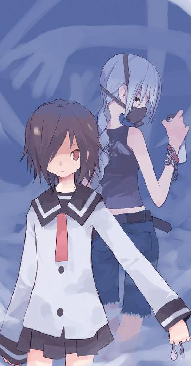
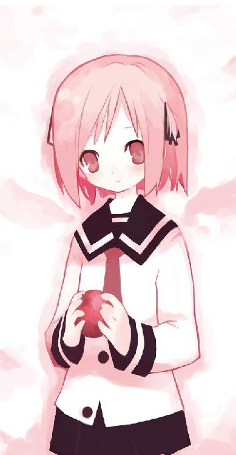
ＭＦ文庫Ｊ
蟲と眼球と殺菌消毒
日日日
カバー・口絵イラスト・挿絵●三月まうす
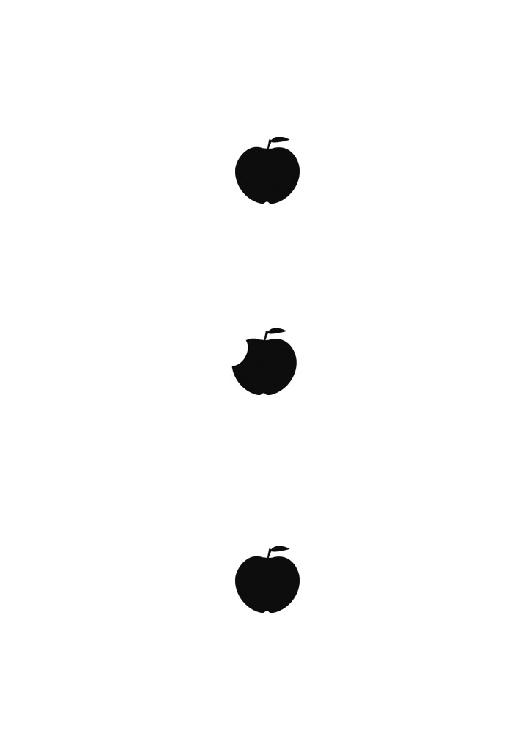
序夜の鐘
そうね──奇妙な女の子だったわ。違和感をぎゅっと凝縮したというか、間違い探しの間違いというか──。年頃は、どうでしょうね、十歳か──もう少し上か、小学生かそこらに見えたわ。無邪気で、声も甲高くて、なんというのかしら全身から幸福を放射しているような、どこにでもいる小学生くらいの──。
そうね──それよ。小学生。
両腕の欠落している小学生の女の子。
それは、運命なんかではなく。
「久しぶりだね」
ただの偶然──不運な、偶然。
「......二年ぶり？ 私のことを覚えているかな、鈴音？」
小さな幸せと小さな営みが紡がれつづける町の商店街。
在籍する私立観音逆咲高等学校からの帰り道、宇佐川鈴音は一人の少女に声をかけられた。芯のとおった長い黒髪。優しげな瞳は意志が強そうに光っていて、少しだけ太めの眉が弓なりにその両眼を飾っていた。
彼女が着ている服は観音逆咲の制服。
「私、加藤克美。覚えてないかな──ないよね？」
ちょっとだけ寂しげに微笑む彼女の肌には水銀灯の照り返し。時刻は夕方も過ぎた薄明かりの晩。鈴音はじゃんけんで負けて引き受けてしまった美化委員の仕事を終えて、少し遅い帰宅をしようと道を急いでいた。
肌を刺す風は初冬の冷気。
克美と名乗った少女の髪が闇に融けながら流れていく。
「......克美ちゃん？」
それは知っている名前だ。胸に突き刺さる名前だ。記憶のなかのその人物より、彼女はずっと綺麗だったからわからなかったが──忘れない。忘れるわけがない。
「......覚えていてくれた？」
「............」
彼女は、鈴音の中学時代の友達。唯一、一緒にいてくれた友達。もちろんそう思っていたのは鈴音だけかもしれないけれど、思いだすだけで苦しい中学時代で、克美の存在がどれだけ自分を支えてくれたかわからない。
けれど、鈴音は彼女に合わせる顔がない。
中学時代。全てが嫌になっていた。息をするのも嫌で、部屋のなかに閉じこもって、家にも学校にも居場所がなく、ひたすらに死を望んでいたころ──。
何度も会いにきてくれた克美を、鈴音はただただ拒絶したのだ。
「克美ちゃん──同じ学校だったの？」
「うん。そうみたいだね」
克美は、そんな自分に変わらない笑みで応えてくれた。
「まぁ──鈴音はうちの学校じゃ有名だし、私もかなり前から鈴音が同じ学校にいることを知っていたんだけどさ。これまで声をかけることができなかった」
鈴音は表情を崩して、他に何もできず──ただ頭を下げた。
「ごめんなさい」
「謝る？ なんで謝る？ 中学時代、鈴音は悪いことをしたわけじゃない。他人の声が鬱陶しくなることなんて誰にでもある──それよりも」
そこで言葉を切って、克美は商店街の道沿い、一つの喫茶店を指さした。
「否──ちょっと本腰をいれて喋ろうか。時間は大丈夫？」
「え──あ、うん」
鈴音は反射的に頷いて、導かれるまま喫茶店に入る。小綺麗な顔の女の店長がほとんど動かない笑顔で迎えてくれる。店内には静かな音楽が流れていて、こんな時間だからかいつもこうなのか客は誰もいなかった。
常連なのだろう気さくな口調でコーヒーを二つ注文して、克美は一つの席に腰かけた。そして所在なげに立ち尽くしている鈴音に微笑みかける。
「座れば？ 鈴音、そういうところは変わらないね」
「......どういうところ」
「遠慮がちなところ。あらゆることに。とりわけ、自分が幸せになることにね」
わかるようなわからないようなことを言って、克美は手招きする。変わらない。彼女は変わっていなかった。中学二年だったころ、自分が拒絶してしまった友達。最後には彼女も諦めて、家にこなくなって、進級したら廊下ですれちがっても知らないふりで──。
「ずっと謝りたかった。鈴音」
克美はやはり寂しそうに笑っていた。
鈴音は席に座り、眼を見開いて驚く。
「え──」
「ずっと友達だって、約束していたのに。私は、鈴音を遠ざけたから。それがずっと心残りで、謝りたくてしょうがなかった」
沈痛な表情で克美が頭を下げる。鈴音はどうしたらいいかわからなくて、ただ戸惑って、手を振ってそれを否定した。
「違うよ。謝らなきゃいけないのは──あたし。あたしなんだよ。克美ちゃん。ぜんぶ嫌になって、拒んで遠ざけて、閉じこもったのはあたし。克美ちゃんは、そんなあたしに何度も会いにきてくれたじゃない......」
「最後までつづかなければ意味はないよ。けど──ありがとう」
かたん、と声もなく店長がコーヒーを置いてくれる。克美はその一つを手にとって、すう──とこちらに近づけた。
「じゃ──仲直りしよう。両成敗ということでさ。私は悪かった。鈴音も悪かった。どちらも謝った──どちらも許した。だから両成敗」
「あ──」
鈴音は心の奥で強ばっていた傷跡が消えていくのを感じた。克美は、やはり克美だった。鈴音の好きな克美だった。それほど派手ではなく、いつも目立たない彼女だけれど、心根は誰より優しかった。中学生のころ、ずっと友達だと言ってくれた少女。
鈴音は情けないことに涙ぐんでしまって、それを気取られないよう俯いた。
「──うん」
「じゃ、乾杯。っていうのも変かな？ まぁいいよね」
こつん、と互いにカップをぶつけて、それから二人は色んなことを喋った。これまでの空白を埋めるかのように。それは穏やかな会話。いつかの中学時代、こうして克美と喋っているのが鈴音の幸せだった。母に捨てられて、父に殴られて、心も身体も疲れきっていて、それでも這うように学校に行って、クラスメイトに家庭の事情を嘲られて──。
それでも克美は一緒にいてくれた。
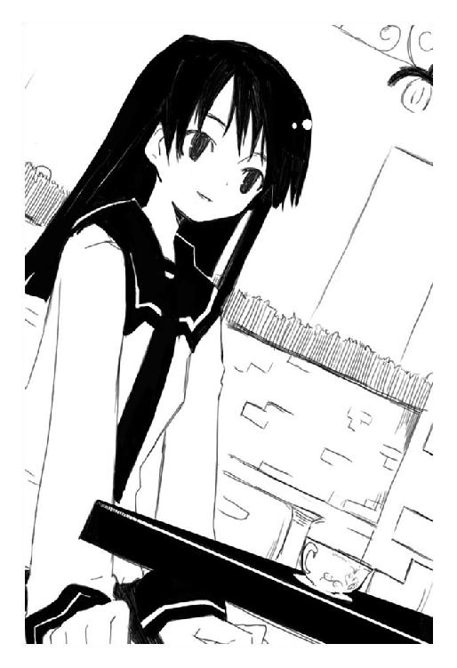
誰よりも大切な友達だった。
「......克美ちゃん」
だから鈴音は心から感謝して。
「ありがとう」
つぶやいた。克美は首を傾げて、うんコーヒーは私が奢るからねと何かトンチンカンなことを言っていた。
「久しぶりだね」
克美はまたつぶやいて、あたしもお金をだすよ申し訳がないよと騒ぐ鈴音を強引に誤魔化した。なんというか昔から、損な性格をしてるなぁこいつはと思う。
そういうところが好きだったのだが。
「......こうして二人で帰るのはさ」
外はもう真っ暗で、月も星も見えない不安になるような曇天。
ぽつりぽつりと浮かぶ明かりが頼りなく冬の寒さに揺らめいている。
「うん──でも、嬉しかったよ」
鈴音は笑って、それから表情を真剣な顔に変えて言う。
「それは置いといて、やっぱりあたしもお金を払うから」
あ、ちょっとだけ手強くなってる。昔は適当に誤魔化せば流されてくれたのに。鈴音も成長しているんだなと苦笑い、克美は手をぴらぴらと振ると歩き始めた。
「それじゃ、次は鈴音の奢りっていうことでどうかな？」
「え──」
「......また会おうよ」
克美は鈴音を見ない。背後にいる彼女はどんな顔をしているのか。昔、自分が裏切ってしまった少女。本当は、中学三年生になってからも、何度も何度も話しかけようとしたのだ。廊下ですれちがうたび申し訳なさそうな顔をする鈴音に、ずぅっと謝りたいと思っていたのだ。
克美は涙ぐんでいる。
「ごめんね。私にそんな資格はないかもしれないけど、まだ──ずっと、鈴音の友達でいさせて？」
「............」
短い沈黙の末、克美は手を握られる。鈴音の温かい手。
「......うん」
最後まで、顔を合わせることはできなかった。
「じゃ、またね」
「うん──また」
それでも再会を心に誓って、加藤克美と宇佐川鈴音は別れた。二人の帰り道は残酷に正反対で、決して交わることはなく──。
歩き、商店街を抜け、道を曲がり、すっかり人気もなくなって。
堪えられずに涙を零す克美の背後。
静かに近づく邪悪な影はそんな二人の友情も知らず──。
「──────腕の長さを比べましょ？」
唐突に。
克美の背筋に走る──冗談のような悪寒。
反射的に、克美は振り返ってしまった。
そこが──転換点。
その加藤克美という女の子にとって不幸だったのは、朗らかに晴れやかに、彼女に声をかけてきた存在が非常識な世界の住人だったってこと。
本来なら一生涯を接することなく素通りしてしまう存在──平穏な人間たちの世界から逸脱してしまった少女、そんな彼女に、手長鬼に出会ってしまったことは、なんでしょうね、不幸、不運、悲運、そんなようなものだったわ。
さすがの私もそんな彼女にかける言葉は一つしか見つからない。
そうね──ご愁傷様、と。
その女の子は──。
「はーれーたーよーるーはー♪」
その女の子は完璧に無邪気で、壊れているのかと思うほどに陽気で、それが逆に恐ろしい──何か、理屈の通じない肉食獣のような感じがした。彼女の声は甲高い少女のものだし、外見だって奇抜なものではないのに。
「つーきーがーきーれーいーでー♪」
歌いながら、彼女は克美のそばで意味不明の舞いを踏んでいる。転げそうになりながら右にふらふら、左によろよろ、踊っているのか酔っぱらっているのかよくわからない。克美は動けず、声をあげることもできず、ただその異様な少女を凝視することしかできなかった。
「にーんーげーんーがーじゃーまー♪」
小学生くらいの少女である。身長は克美の胸まであるかどうか。この寒いのに虹色のシャツ一枚で、スカートから覗く素足もどこか寒そうだった。髪型は短めのツインテイル。瞳は不思議なほど輝いていて、あまりにも大胆に笑うので白い歯が全て覗いていた。
そんな彼女は唐突に歌も舞いもやめ、克美の正面でぴょっこりと跳ねた。
「こんばんはっ」
やはり親しみに満ちた、邪悪なところの欠片もない声。
しかし──。
唐突に、克美は違和感に気づく。ごく普通の小学生みたいなこの女の子にある──特異。何かが、何かがおかしいのだ。なんだろう。彼女を注視し──やがてとんでもないことに気づいて克美は短く悲鳴をあげた。
「名前は手長鬼っていうんだけど、おねーさんはなんとかってひと？ なんだっけぇ名前ー。えへへっ、手長鬼ちょっと忘れちゃった！」
その少女には両腕がなかった。
肩のかなり深い位置から完全に腕が欠落している。本来ならばしなやかな腕が覗いていたはずの場所には虚無だけが広がっていて、どこかに隠しているわけではなく、本当に腕がないらしかった。
普通と違うのはたったそれだけ。
しかし──彼女は、違う、と思った。身体を構成する物質から、魂の色まで残らず人間とは異なる──。まるで妖怪。否──鬼？
そうだ──彼女は、鬼と名乗ったのだ。
「............」
なんだそれは。馬鹿馬鹿しい。混乱している。
「......手長、鬼？」
克美は理解できないで、ただ怖くて、ちょっとだけ後ずさった。
すぐ背後には塀がある。逃げられない。逃げる？ こんな華奢でしかない女の子から逃げるというのか。でも──危険だと思うのだ。本能が、この手長鬼を名乗る女の子から早急に遠ざかれと告げているのだ。
克美は震えて、心から怖くて、女の子を突き飛ばすと一目散に逃げた。
「う、うぁ！」
なんでだかはわからない。しかし堪らないほど怖かったのだ。外見に怯えたわけではない。ただ、彼女は──この世界にいてはいけない存在なんじゃないかって、思った。
女の子を振り切り、水銀灯が照らす無人の道を、加藤克美は全力で駆ける。
逃げる。逃げられる。逃げてみせる。
さもなければ──。
「そうだよ、手の長い鬼で手長鬼！」
無邪気な声が、脳裏に響く。
そして──がぐん、と克美の身体が止められる。ひい、と叫んで振り返り、克美は理解できなくて目を白黒させる。
手長鬼はその場を動いていなかった。それなのに、自分の身体はあっけなく止まり、少しも動けなくなってしまった。なんだこれ。超常現象だ。ありえない。思考が混乱して脳内で爆発する。助けて──と意味もなく思う。
助けて、殺される、と思ってしまうのだ。
それは肉食獣に出会ってしまった人間の心理。
無邪気な少女は可憐に笑った。
「どう──手長鬼の両腕、とってもとっても長いでしょう？」
肩口に食いこむ強烈な力。それはまさに、力の強い何者かに肩を押さえられている感触だった。五本の指まではっきりと感知できる。見えない腕が伸びてきて、自分の肩を掴んで止めたとしか思えなかった。
しかし──そんなこと、あるわけがないのだ。
幽霊だの妖怪だの超能力だの、そんなものはみんな作りもので幻想で、漫画やＴＶの中にしか存在しないはずだった。
けれど克美の全身は殺されるという恐怖に震えていたし、世界は絶望的なほどに理不尽な狂い具合で、ＴＶみたいに作りごとめいていて、しかしＴＶのような助けはなかった。
「逃げちゃ駄目だよ。あなたを逃がしたらゼキくんにお仕置きされちゃうんだから」
あくまで無邪気な少女の声。
──ゼキくん？ 克美はただ震えている。
振り返ると、やはりどこまでも純粋で、ただ朗らかな表情の少女が立っていた。
こちらからは手を伸ばしても触れられないほど遠く、闇だけを背景に、克美の日常を粉々に破壊した恐怖の手長鬼が。
彼女は不満そうに唇を尖らせる。
「でもさぁ、本当にあなたなんとかってひとなの？ 林檎を持っているんでしょ？ どんだけ強いかと思って楽しみにしてたのにさぁ。腕もちっとも長くないし、てんで抵抗もできないんだから。つまんないなぁ。ゼキくんの嘘つき。ちっとも楽しくないじゃない」
買ってもらった玩具がつまらなかったという幼児みたいに。
「もういいや。こんなつまんないんじゃ要らないもんね、ぽいっ」
手長鬼は──。
無邪気に、残酷に。
克美を石塀に叩きつけた。
ぐしゃり。という音。それが自分の肩胛骨や肋骨が潰れた音だと克美が理解するより早く。痛みで絶叫するような慈悲深い余裕も与えられず。
「どう──手長鬼の両腕、長いだけじゃなくて力も強いんだよ？」
肩口を掴んだ彼女の見えない腕は──ただ純粋な破壊だけを加藤克美にもたらした。すなわち壁にぶつけてぶつけて殴りつけて叩きつけて地面に落として空高く放り投げて、血飛沫を散らし、骨を粉々にし、ただひたすらに叩きつけて叩きつけて叩きつけて。
ごんがんごんごんががごんごん。
ぐしゃ！ べき！ ぐちゃり！
それは──哀しい夜の始まりを告げる虚しい虚しい序夜の鐘。
新年の始まりと、魔物の消滅を願って鳴らされる除夜の鐘とは正逆の──加藤克美が退屈に思いながら心より愛していた日常の終わりと、魔物たちの跳梁跋扈を暗示するだけの序夜の鐘。
鮮血が舞い、骨も原型を崩し、肉が奇妙に混ざりあった克美の全身を──。
ぐちゃッ。
最後に一度だけ壁にぶつけて、手長鬼はにっこりと笑った。
「はーれーたーよーるーはー♪」
歌い、ぐしゃり、と腕を放して克美だったものを地面に落とし。
「つーきーがーきーれーいーでー♪」
手長鬼は自分が殺めた彼女になんら罪も感じていない顔で、ただ歩み寄り、すぐ近くからやはり朗らかな顔でじっと目を細めて注視する。
「にーんーげーんーがー、って、あれ？」
歌うのをやめ、見えない指先で克美の身体をまさぐる。困った顔で、それは手長鬼が初めて見せた困惑の顔だったが──ただ克美の身体を探り、蒼白になってしまう。
「あ、あれ。あれれっ」
それは重大な失敗に気づいた後の幼子の表情だった。
「り、り、林檎がないよ？ どうして？ なんでなんで？ で──でも死んでるよ？ 死んでるのに林檎がないよ？ あれっ、あれれっ？」
そこで──彼女は気づく。加藤克美だった肉塊のすぐそばに、一枚の手帳が落ちている。それは観音逆咲高校の生徒手帳だったが、手長鬼はそれを知らず、ただ不思議に思ってその血まみれの手帳のページをめくる。
一枚目。顔写真と、住所と、生年月日と、名前──。
加藤克美。
「──を？」
それは、手長鬼が殺せと命じられた人物の名前とは明らかに違っていた。手長鬼は、ずっと克美が居座っていた喫茶店の天井で彼女が出てくるのを待っていたのだが──そういえば、天井から降りるのにてまどってしまい、ようやく追いついたとき、この克美という少女の他にもう一人くらい人間がいたようないないような。暗がりに消えていってしまったのでよくわからなくて、ただの通行人かと思って──。
まさか──そっちが。
そういえば、その人物は克美と同じぐらいの年格好だった。
手長鬼はすう──と蒼白になる。
「え、えへへ。手長鬼ちょっと間違えた！」
笑っている場合じゃないと思い、必死な顔で考える。
「ど、どうしよ。こ、こ、困ったなぁ。ゼキくんに怒られちゃう。お、おし、お仕置きされちゃうぅぅ。わぁぁ大変だぁぁ、どうしよう。どうしようどうしよう」
あたふたと困って、瞬間、なんとも素晴らしい名案が浮かんで手長鬼は跳ねた。
「そーだっ」
にっこりと笑い、朗らかな声で酷薄につぶやく。
「......そうだよね。さっきの女の子を捜せばいいんだ。そっちがきっとなんとかってひとなんだもん。なんだっけなぁ名前。それでそれで、ゼキくんが到着するまでにそのひとから林檎を奪っちゃえばいいんだ。手長鬼、頭いい！」
そして当たり前のような顔で言う。
「でもでも顔がよくわかんないんだよなぁ。うーん、あ、そうだ、じゃあこの町にいる同い年くらいの女の子をみんなみんな殺しちゃえばいいんだよね。殺していけばいいんだよね。死ななかったやつが林檎を持っているはずだもん！ うん！」
そう考えるとうまくいきそうな気がして、手長鬼は加藤克美の死体を見もせずに暗闇に溶けて消えていく。この町にいったい克美と同年代の女の子がどれだけいると思っているのだろう。しかしその足取りは軽く、明るい希望に満ちていた。
「はーれーたーよーるーはー♪」
気怠い漆黒の夜に──少女の背中が消えていく。
「つーきーがーきーれーいーでー♪」
ただ歌声だけがいつまでもいつまでも残り、哀れな少女の亡骸に降り注いでいく。
「にーんーげーんーがーじゃーまー♪」
......以上が、私の見届けた奇妙な女の子の顛末よ。
ふふ、どうしたの？ 不思議そうな顔をしているわ──。あら、私がどうしてこんな話をするのかわからないのかしら。そうね──洒落た言い方をすれば、冥土の土産、というものよ。面白いことの一つでも知りながらでないと黄泉への旅路は退屈すぎるじゃない。
それに、私もあの手長鬼について考えたかったの。誰かに向かって喋りながらというのが思索としては最も効率がいいのよね。これから殺されるあなたには興味のない話だったかもしれないけれど、どう思うかしら。この話。私みたいな外側にいる存在ではない、あなたたちみたいな一般人の意見が聞きたいのだけど。
あら、作り話だと思っているの？ それも仕方ないかもしれないわね。日常の内側で生きているあなたたちには信じがたい話かもしれない。
けれど──これは間違いなく、現在進行形でこの観音逆咲町を襲っている悪夢。そうね──明日にでも、あなたたちの大切なひとが手長鬼に襲われるかもしれない。
あら、表情が変わったわね。意志が灯った真摯な瞳。綺麗──私はそういう『綺麗』が好き。けれど、駄ぁ目、あなたたちはここで死ぬんだから。それはもう決まってしまった話。ごめんなさいね──。
あら。うふ。悔しそうな顔ね。誰かを守れないことが悔しいのかしら。うふふ、いいわね──その顔が見たかったのよ。そうやって悔しがって、哀しんで苦しんで、自分の無力さを呪いながら死んでいきなさい。そうでなきゃ殺す方も面白くないのよ。
でも、安心して──あなたたちは悪じゃない。
菌でも毒でもない。ただ純粋に誰かのために怒れる立派なひとたちよ。
だから、あなたたちを私は誠意をもって殺す。決して無粋に消滅させたりはせず、あなたたちの人格を認めたまま殺す。
......長話になったわね。では──死になさい。
あら。私の名前？ うふふ、死にゆく人間に教えるわけがないじゃない。呪われたりしたら堪らないもの。お馬鹿さんね。
けれど──そうね、こっちの名前だったら教えてあげてもいいわ。これを私の本名と信じるか、信じないかはあなたたちの自由。呪うも呪わないもね。
呪われれば、呪われるほど、磨かれていく名前もあるの。
私の名前は殺菌消毒。ただの消化器官よ──。
連発式災難
ＦＲＯＭ ★ うさりん
ＴＯ ★ 先生
題名 ★ みことのり
内容 ★ はろー、うさりんでーす、とでも言うと思ったかこの変態教師。死ぬがいい。どこをほっつき歩いている。おまえの性格なら学校を休んだ鈴音の見舞いにくるだろうと呼ばずに待てばもう昼。おまえがそんなに薄情なやつだとは思わなかった。愛している愛していると繰りかえしても所詮は口だけか。もういい。鈴音はグリコが慰める。おまえはどこかで野垂れ死ね。
ＦＲＯＭ ★ 先生だ
ＴＯ ★ うさりん閣下
題名 ★ Ｒｅ‥みことのり
内容 ★ あー、そこで閣下の携帯を勝手に使って好き放題に述べている者。あらゆる意味でくたばるがいい。......心臓が冷えるから貴様は閣下の携帯を使うな。アドレスを登録してるので『うさりん』って名前で表示されるのだ。閣下がものすごい勢いでやさぐれたのかと思ったじゃないか。ていうか、いつのまに携帯電話なんか使えるようになった貴様。
ＦＲＯＭ ★ うさりん
ＴＯ ★ 先生
題名 ★ 眼球抉子より
内容 ★ うるさいな。ほら名前を書いてやったぞ満足か死ね。くどいようだかどこにいる賢木。友達が死んだせいか鈴音が元気ないんだ。こういうときにそばにいないでどうする。そしてなめるなよ、グリコはこれでもおまえの五十倍は生きている。人生経験が違うんだ。携帯電話の使用法などすぐに覚えられる。敬え。
ＦＲＯＭ ★ 先生だ
ＴＯ ★ うさりん閣下
題名 ★ Ｒｅ‥眼球抉子より
内容 ★ 携帯電話くらいそこらの小学生でも使いこなすわ。......あー、すまん。もう少しだけ待っていろ。というか私も閣下が休みと知った瞬間にお見舞いへと走ったわ。それでもまだ辿りつけないという事実から現在の私の状況を察するがいい愚か者。
ＦＲＯＭ ★ うさりん
ＴＯ ★ 先生
題名 ★ Ｒｅ‥Ｒｅ‥眼球抉子より
内容 ★ ......おまえは本当にむかつくな。なんでもいいから早くしろ。遅いとグリコが眼球えぐっちゃうぞ。
「............」
ぱたり、と見目麗しい金髪碧眼の麗人──賢木愚龍は携帯電話をたたむと長く嘆息した。知能、財力、容姿、運動能力、全てにおいて人間という種の限界を極めた彼は、宇佐川鈴音の恋人であり、また彼女が在籍する私立観音逆咲高等学校の教師でもある。
一年前、とある事情により鈴音に恋をした賢木は、日本を裏から牛耳る巨大財閥、賢木財閥の跡取りという身分も栄光の学歴も捨てて高校の教師となった。全ては宇佐川鈴音のそばに居続けるため。人生において価値のあるものは唯一彼女だけというのが賢木愚龍という男だった。
そんな賢木は不機嫌そうな顔を周囲に巡らせて、自分の周りをぐるりと取り囲み、あからさまな違法銃を突きつけている幾人もの黒服を睨みつけた。
「......さて、私は私の愛すべき生徒に眼球を抉ると宣告されてしまった。彼女の性癖から考えて普通に実行されかねんので消えてくれないか貴様ら。私も眼球を抉られるのは遠慮しておきたい──一刻も早く閣下の家へと向かわねば母から受け継いだこの碧眼が失われてしまうのだが？」
今日、鈴音は学校を休んだ。それを知り、授業も職員会議も放り捨てて見舞いに行こうとしたらいきなり襲われた。学校を飛びだしたのが朝の八時ごろだったから、かれこれ四時間は戦っている計算になるか。群がってくる黒服どもを蹴散らしては進み、また取り囲まれては薙ぎ倒す。疲れはしないがいい加減に嫌になる。
鈴音。宇佐川鈴音のことを考える。
賢木に生きる意味をくれた、世界で最も大切なひと。彼女が苦しんでいるというのに、自分の眼前を塞ぐとはこの黒服ども命がいらないと見える。しかしいったい何者なのか。場合によっては血を見るが。
「貴様らは──『蟲』か？」
反応はない。
蟲。それは『林檎』、または『エデンの林檎』と呼ばれる『食べた人間を不老不死にする』禁断の果実──それを手にいれた人間に襲いかかってくる謎の存在のことである。その正体は未だに曖昧で、ヘビと名乗ったとある存在は彼らを天使や悪魔のようなものだと評した。
ヘビと戦った先月に偶然林檎を食べてしまった賢木は、これまで何度か蟲に遭遇し命を狙われた。故に今回も蟲の襲撃かと思ったのだが──。
じっと周囲の黒服を監察する。蟲なら、我が身すら躊躇わずに賢木を殺しにくるはずだ。けれど彼らは銃を構えてはいるものの発砲をする気配がない。蟲を識別するための文字通り目印、紅く光った眼球も、サングラスで隠されているので確認できていないし。
「......銃口を向けられているというのに、携帯電話を優先ですか賢龍のお義兄様？」
不意に、どこか取り繕ったような、高貴なふりして脆さを孕んだ少女の声がする。聞き覚えがあり──賢木は表情を呆れたものに変えながら声の方向を向いた。
微動だにしない黒服たちの後方、黒衣の少女が立っている。
「──黒竜のわたくしは、そのように余裕めかしたお義兄様が大嫌いです」
平凡な田舎道に不似合いな黒のドレス。頭を飾ったリボンまで漆黒で、肌や歯や眼球の白──その他の部分を、残らず黒で埋め尽くしたようなその少女は、賢木に何かあったときのため、緊急用として育てられた義弟や義妹の一人である。
「黒木──竜ゑ？」
賢木は彼女の名前をつぶやいて、携帯電話をポケットに仕舞うと周囲の黒服を見た。
「ということは貴様ら賢木財閥の黒服か。なんだ下らぬ。時間を損した。あー、貴様ら、顔は覚えたからな。時期当主に銃口を向け閣下の家への進路を妨害した罪で残らず路頭に迷わせてやる」
「......わたくしは無視ですの賢龍のお義兄様？」
神経質そうに眉を吊りあげ、真っ赤な、黒白の外見に異彩を加えるテディベアを抱きしめた竜ゑは肩を怒らせる。
相変わらず余裕がないというか人間が小さいというか。
賢木は戸惑うように銃を下げていく黒服たちから視線を逸らし、この母違いの義妹に冷たい視線を向ける。
「『滑り止め』ごときがこの賢木愚龍に何の用だ。というか──久しぶりだな竜ゑ。九年ぶりか？ 大きくなったな。こないだ会ったときは『竜ゑはおねしょなんかしてないですの！ してないですの！』ってぴーぴー泣いてたなぁ、懐かしい」
「い、い、言っちゃ駄目ですの！」
ひそひそと何事か会話を交わす黒服たちに手を振って、真っ赤になった竜ゑは泣きそうな顔で主張した。
「そういうふうに傲慢に意地悪だから、黒竜のわたくしはお義兄様が嫌いなのですわ！」
「あー、それと、その無理に造ったような口調は妙だからやめろ。逆に品がないぞ。それより──」
賢木は、静かに竜ゑを見る。否──正確には、彼女に抱かれている真紅のテディベア。どこにでも売っているようで、どこに置いても売れないような、可愛いというより不気味──他者に癒しを与えない血染めのようなそのぬいぐるみは。
「父上」
つぶやき、賢木は腕を組んで堂々と呼びかけた。
「またそんな姿で現れるとは、相変わらず実の息子も信用しないのか貴様」
「え......？」
むしろ驚いたのは抱いている竜ゑで、驚愕のあまりテディベアを落としかけ、命がけでそれを阻止した。顔にはびっしりと冷や汗が浮かび、さっきまではあった可愛いくらいの虚勢も完全に崩れている。
「お、お、お父様ぁ!?」
それは、国をも凌駕する超財閥、賢木財閥の現当主──賢木願鳳の仮の姿。この親父、暗殺を恐れているのか賢木にすら顔を見せたことがない。本当に父がどこかに実在しているのか賢木は疑っているくらいである。
「............」
真紅のテディベアは、唐突に。
『やぁァ、ぐーたん、お父さんだよォォ』
奇妙に反響する合成音声で、気が抜けるほどの陽気な声をあげた。しかし──恐らくこの口調も声も本人を断定されないための仮初めのもの。頷き、賢木は適当に応じる。
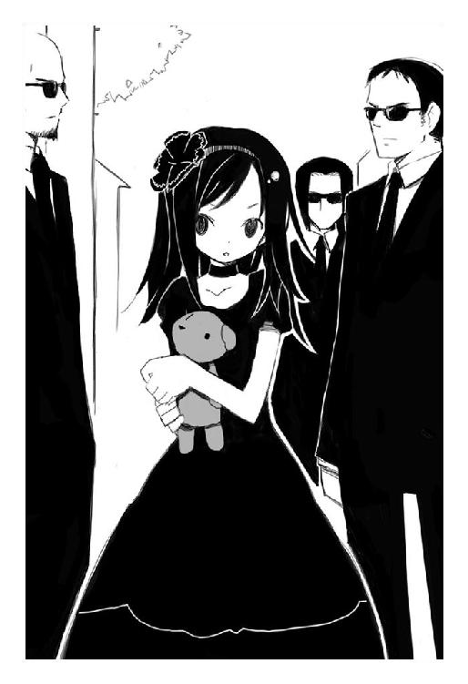
「お父さんだよーじゃないのだ阿呆親父。今日はいったい何の用だ。私はこれから閣下の家へと見舞いへ赴かねばならぬのだ。下らぬ些事なら消えるがいい」
「お、お、お義兄様！ お父様に何てことを！」
竜ゑが喚くが無視。中身が誰であれどうせ今はぬいぐるみだ。敬意を表せるわけもないし、そもそも賢木は父を敬ってなどいない。無理やりに自分を改造し、こんな身体にしてくれた張本人。血の滲むような勉強と訓練──賢木の子供時代は、こいつに潰されたようなものなのだ。
テディベアは動じず、ひび割れたような合成音声で笑う。
『うふふー。相変わらずぐーたんは怖いなァァ。お父さん、哀しい！ うん──まぁ別に大した用件じゃないの。久しぶりに可愛いぐーたんを見たくってねェェ』
「さらばだ」
見切り、竜ゑごとテディベアを置いて賢木は進行方向へ向かう。ここから鈴音の家までは走れば十分ほどか。余計な時間を食ってしまった。
『待って待って待ってぐーたん。竜ゑ、追いかけてェェ』
テディベアが呑気に声をあげ、竜ゑは死にそうな顔色で必死になって追いかけてくる。可哀想に。今回、彼女は手頃な運搬係として利用されているだけらしい。
考えていると、テディベアはなんでもないように残酷な命令を下す。
『あーん、もう。逃げちゃ駄目だってェェ。よし、黒服たち、ぐーたんの太股とか撃ちぬいて！ そしたら動き止まるでしょ？ 大丈夫、ぐーたん怪我してもすぐ治るから、遠慮いらないよォ』
「────」
その言葉。
賢木は激しく振り返り、青い顔の竜ゑ、その胸元に抱かれたテディベアを睨みつける。
「父上──どこで知った」
怪我が治る。すなわち、不死の林檎を食べたことで不老不死になった賢木が、常軌を逸した再生力をもっていると彼は知っているのだ。
そういえば、一ヶ月前、巨大な化け物が町を破壊した──あの事件を父に頼んで適当に誤魔化してもらったんだった。表向きは地震だったか何だったか災害だと報道され、目撃者にも厳重に口止めをした。当然──その隠蔽工作を命じた張本人、父の耳には隠された事実もそのまま伝わっているはずなのだ。
しかし、不死の林檎のことは──賢木と鈴音と、それこそ蟲やヘビ、後はグリコしか知らないはずなのに。
『......ボクを誰だと思っているのかなァァ？』
テディベアは、当然のように。
『きっとね、ボクは──ぐーたんよりもっと詳しいことまで知ってるよォ？ でも教えてあげない。それ以上ね、ぐーたんに深みに嵌って欲しくないから。そこから先には、面白いことなんか何もなくって、ただ気持ち悪いだけだから、ねェ？』
空恐ろしい無機質な声で、沈黙する賢木に告げるのだ。
『先月』
当たり前のように。
『大きな大きな化け物──夢界獣が暴れたでしょ？ あれを殺したのは、誰だと思うのかな？ というか──いったいどうやって殺したのかな？ 本当にただの飛行機が、爆弾を落として殺したと思うのかな？』
問いかけというより、戸惑う賢木を愉しむような声。
『焼夷弾だろうが爆弾だろうが、無音で巨大な化け物を殺せると思うのかな？ 林檎の栄養で育ち、強靱な生命力を得ていたあの化け物を、一撃で消滅させながらも──市街地にはほとんど被害を与えない、そんな夢のような兵器が存在するものかな？』
嬉しそうな、幸せそうな声。
『......ほぅら、先月の事件は──深く考えれば理解できないことばかり。キミはねェ、ぐーたん、何も知らないまま、本質を見ないままあれを乗り越えてしまった。例えば林檎。例えば神。例えば蟲──キミは、それらの一つとして正しく理解していない。理解する必要もないよ。ぐーたんは、ボクの可愛い可愛い跡継ぎなんだからァァ』
耳障りで、賢木は顔をしかめる。
あの事件を乗り越えて、平穏ともいえる時間を過ごして、ようやく心の整理ができたと思ったら──面白半分に引っくりかえされた。何だ。不安になる。急に現実が疑わしくなって、魂に根を張っているはずの林檎が気持ち悪くなって。
「何が──言いたい、貴様」
『うん？ ただの心配さァァ。お父さんは子供を心配する生き物なの。とにかくね、ぐーたんには、しっかり賢木財閥を継いでもらいたいから、なるべく危険から遠ざけてあげたいの。涙歌、破局、最弱、不快逆流、一人部屋、神蟲天皇、そして──殺菌消毒、これらの名前には気をつけて。近づけば死ぬ。そういう名前だから』
意味のわからないことを言って、賢木財閥の長──賢木願鳳は不気味な合成音声で笑った。竜ゑは怯え、不気味そうにこのぬいぐるみを見ている。
蟲と眼球とテディベア。
先月の事件には姿を見せず、裏の裏、見えない闇で暗躍していた三番目の存在が──ここにいる。賢木願鳳。何を知っていて、何を目的にしているのか。この不気味なテディベアは、ただ楽しそうに賢木へ語りかけてくる。
『ま──それだけね。ちょっと忙しかったんでこれだけ言うのに時間かかっちゃったけどォォ。あ、そうそう、忘れるところだった』
そういう機能を内蔵しているのか、テディベアは唐突に動くと手をポンと叩いた。竜ゑが驚いて「わひゃあ」と妙な声をあげる。
『宇佐川鈴音、彼女ね？ この数ヶ月──徹底的に調べさせてもらったよ。正直、なんでぐーたんがここまで惚れこんでるのかわかんない』
首を傾げる。
賢木は瞬間的に冷酷な顔となり、そんなテディベアを睨みつけた。
「父上。閣下を侮辱するからには命を賭けろ」
『怖いなァ。怖いよねェ、ほら竜ゑも怖がってる』
竜ゑが怖がってるのはむしろ腕の中の父だ。
『ま──いいとして、ボクはね？ 別にぐーたんが誰をお嫁さんにしても構わない。キミのお母さんだって米国の貧民街出身だし、お嫁さんが財閥を動かすわけじゃないからねェ。けどね、今のままじゃ周りの連中が黙ってないのさ。家柄がどうとか、賢木夫人としての資格がどうとかねェ』
「そういう阿呆は残らず処刑しとけ父上」
『やだよ面倒くさい。そういう阿呆に限って有名人だったりするから後始末がねェェ』
二人の嫌な会話に竜ゑがこっそり明後日の方向を見て吐息。無視し、賢木は苛立たしげに地面を踏むと喧嘩腰になる。
「だったら何か貴様、私に閣下を諦めろと？ 私は人がいいから教えておいてやるがな、閣下か財閥かどちらかしか選べないなら私は迷わず閣下を選ぶぞ」
「馬鹿な、一人の女のために権利を捨てるなんて......！」
竜ゑは事情をよく知らないのか、思わず出たらしい言葉をハッとして呑みこみ。
「ま、まぁ、賢龍のお義兄様が跡を継がないならば、わたくしとしては願ったり叶ったりというところですわ！」
「竜ゑ──無理をするな。膝が震えている」
賢木が静かに目を伏せて言う。
「......うっ」
竜ゑはびくりと背筋を正し、悔しそうに歯噛みする。賢木財閥──それは巨大な力そのもの。それを一人で受け継ぐという重責は、およそ尋常な精神では耐えられるものではない。竜ゑは今年で十五歳か──まだ中学生なのだ。そのような度量も、余裕もまだ充分ではない。
『ま、とにかく』
テディベア──願鳳は何事もなかったかのように、変わらない不気味な合成音声で話に決着をつける。
『ぐーたんは宇佐川鈴音しか愛せないんだと言う。ボクの周りの連中は彼女じゃ役不足だと言う。だったら簡単だよねェェ？ そう、宇佐川さんに成長してもらえばいいんだ。財閥夫人として誰もが認めるくらいにね。そのための準備は色々としたから、ま──何があっても驚かないでね？ そうだね、宇佐川さんが卒業すると同時に二人は結婚したいってことだから、彼女が高校に在学しているあいだに色々と成長してもらおう』
彼の言葉に、賢木は眉をしかめる。地獄のような少年時代が思いおこされてしまったのだ。鈴音を成長させるための修行──それがどれほど過酷なものか、想像するだけで嫌になる。
友達が殺されて、不安定になっている彼女を。
これ以上──苦しめるというのか。
「父上」
賢木は静かに、瞳に真剣な色を載せて言う。
「それが閣下を人とも思わぬ非道な訓練ならば──私は躊躇わずに叩き潰す。その瞬間が、私と貴様が決別する時だと知れ」
テディベアは応えず、全てを語り終えたのか竜ゑに呼びかけて去っていく。黒服も追随し、賢木に頭を下げて路地に消えていく。
最後に──竜ゑがこちらを見た。
それは心配そうな、彼女が初めて見せる人間らしい顔。
「賢龍のお義兄様──あなたは、危ういですわ」
「............」
賢木は応えずに、鈴音の家へとつづく凸凹道へと歩を進めた。
「──大丈夫。大丈夫。まったくもう、グリコちゃんは心配性だなぁ。大丈夫。お料理は得意なんだから。包丁だって普通に使えるよ。うん。うんうん。うふふ」
「血が。ちょっと待て鈴音おまえは自分の指を刻んでいる。血が血が。落ちつけ。無理して料理なんか作るな。どうせグリコも賢木も料理なんか食わなくても生きていける。それより指を刻むんじゃない。不老不死じゃなければ大変なことになっているぞ」
グリコは困り果てていた。
賢木が勤務し、鈴音とグリコが在籍する私立観音逆咲高等学校──その近く、商店街を越え、凸凹した田舎道を歩いた先に鈴音の暮らすアパートがある。
ちょっと壁でも殴っただけで崩れてしまいそうなボロアパートで、家賃は常識を無視して安い。四畳間のトイレつき。隣に住んでるのは景気の悪そうな顔をした自称音楽家のお姉さん。
──加藤克美が正体不明の殺人鬼に殺害されてから、鈴音は、一歩もこの部屋から出ずに寝こんでいた。
やはり殺人事件の影は彼女の心を深く傷つけているようだった。不老不死の人間も、心の傷には弱すぎる。むしろ身体の痛みが消えたせいで、普通の人々よりもその傷に痛みを感じてしまう。
そう──三日前、恐らく観音逆咲町で初めての殺人事件が起こった。被害者の名前は加藤克美。鈴音やグリコと同じ観音逆咲の生徒で、鈴音とは中学時代からの縁があったという。
そんな彼女は、喫茶店で鈴音と別れて、その直後に何者かに殺害されてしまった。しかも激しく石塀や地面に叩きつけられるというむごたらしいやり口で。グリコはまだいい。死にも死体にも慣れている。誰よりつらいのは鈴音だ。彼女は、克美と最後に会っていた人物として詳しく取り調べを受けた。そして何度も何度も何度も何度も克美の死という現実を突きつけられたのだ。
どんな気持ちだっただろう。
そんな鈴音は、ちょっと見ただけではいつもと変わらない様子だった。普通に笑って、声も微かに震えていたが錯乱しているようなことはなかった。しかしそれはあからさまに無理をした結果で、行動がぎくしゃくとしているし、表情も空元気な笑顔のままで固定されている。そして自分は大丈夫だと主張するみたいに料理を作ろうとして、何かとエグい失敗をしてグリコを困らせてくれる。
林檎を食べた人間からは徐々に味覚が失われていく。空腹感もなくなるので鈴音の行為は無駄だが、気分転換くらいにはなるのではないかとグリコは黙認している。
そうして鈴音が笑顔のまま自分の指を調理しようとするのを止めて、一息つくと──同時に部屋のインターフォンが鳴った。
「......賢木か？」
つぶやき、グリコはちょっとだけ警戒しながら扉まで歩いて開く。
「グリコ──閣下は無事か!?」
予想どおりそこには金髪碧眼の芸術品のような美男が立っていて、かなり高い位置からグリコの肩を力強く揺さぶった。グリコは半目になって嘆息を漏らす。
「無事も何も死ぬようなものじゃない。慌てるな落ちつけ。あと揺らすな気持ち悪い。まったく──鈴音のこととなるとすぐに理性を失うな、おまえは」
鈴音──と呼びかけて、振り返ると、その鈴音がばったりと床に倒れていた。
「......鈴音？」
賢木は大きく目を見開くとこの世の終わりのような顔をした。
「あぁ──閣下！ 閣下が死んでいる！」
「死んでない。落ちつけ。あと揺らすなと言ってるだろう眼球えぐっちゃうぞ間抜け」
ぶんぶん揺られながらスプーンを準備する眼球抉子なのだった。
「......よほど疲れていたんだろう」
特徴的なオオカミヘア。銃口のように奥が暗い瞳。眼球抉子という残虐な名前をした彼女は、こう見えて千年もの時を生きる不老不死の少女である。とある阿呆な理由で彼女は一時期だけ『真・眼球抉子』とか名乗っていたのだが、言いにくいという大変に現実的な理由から元の名前に戻った。
理由あって鈴音と同棲しているこの無愛想な少女は、倒れた鈴音を敷いた布団に寝かせると語り始めた。
「──ストレスを感じると胃が痛くなったり、吐き気がしたり頭痛がしたり、身体は如実に反応を示すものなんだが、林檎を食べた不死者にはそれがない。だから、限界まで無理をして、精神が耐えられなくなって気絶したりしてしまう。まったく、友人が死んだときくらい見苦しく泣き喚けばいいのに。誰も責めたりはしないのに」
グリコは歩み寄ってくる賢木を見つめ、そっと、寝ていた鈴音の肩を抱きあげて賢木に預けてきた。戸惑いながらも鈴音を支える。力の抜けた彼女は酷く頼りないように思えた。
「グリコ？」
「......グリコは、親愛とか恋愛とか、わからない」
グリコは哀しそうな顔をして、血まみれになってしまった簡易キッチンの掃除を始めた。鈴音に仕込まれたのか、グリコは掃除や洗濯のやり方も覚えてきている。しかし彼女は千年間の虚無の果て、様々な感情とか常識とかを忘れてしまった。
グリコは朗読するように淡々と語る。
「わからない──忘れてしまった。だから、鈴音を癒すことができない。悔しい。......グリコにできることは、鈴音の敵を滅ぼすことだけだ。鈴音の心に刻まれた傷跡は、グリコじゃ絶対に癒せない」
そして彼女はこちらを見る。鈴音が賢木によく似ていると評した、孤独な双眸。
「だから──グリコは、おまえが少し妬ましい」
やはり自分と彼女は似ているのだろうか。鈴音の敵を滅ぼすことしかできず、鈴音の傷を癒せないと思っている彼女。鈴音の敵には歯が立たないほど弱く、彼女を癒すことしかできないのではないかと思っている賢木。
不器用な二人は気絶した鈴音に、ただ、沈黙し──。
賢木は為す術もなく鈴音を抱きしめた。グリコも心配そうな顔でこちらを見ている。夢の中ですら彼女は救われないのか、その閉じた目元には涙が浮かんでいた。どこか血の気が抜けた顔。指先は酷く冷たかった。賢木はそんな鈴音に温かさを宿らせようと縋るように抱きしめる。
我知らず賢木は悪態をついた。
「......くそっ、どこのどいつが加藤を殺したのだ」
「グリコが知るか」
グリコが洗剤でまな板を洗いながら、首を傾げる。
「......しかし、状況を聞くに、犯人は普通の存在ではないだろう。よほど力の強い大男か、野獣か、あるいは──」
きゅ、と蛇口を捻って水をだす。
「──化け物か」
化け物。賢木たちが生きるこの世界の外側で、ひっそりと存在している埒外の異形ども。先月の事件で、賢木も何体かのそれらと遭遇した。凄いやつだと片足で建築物を踏みつぶせるほど巨大だった。
──確かに、克美のむごい有様は人間業ではない。
賢木は嫌な気分になりながらも、思案げにつぶやく。
「なんにせよ、警戒は怠らないほうがいいだろうな。加害者はまだ特定されていない。警察が対応できるような犯人であることを願おう。......グリコ？」
ふと見ると、グリコが真剣な顔で玄関を見つめている。訝しがるような、不思議そうな顔だった。彼女の無表情が真っ直ぐに扉を見つめている。
「......どうした？」
「誰かくる」
グリコは短く応えた。
賢木は眉をひそめて言う。
「......郵便配達とかじゃないか？ それとも──殺人犯か？」
まさかとは思うが、可能性はゼロではない。グリコは並べてあったスプーンを三つほど握りしめる。彼女の主力武器は今も昔もスプーンなのだった。
「わからん。音が聞こえんから黙れ。だが──化け物ではない、と思う」
グリコは気配を探っているのか、野生動物のような顔をしていた。本能で索敵し、危険から身を遠ざける。千年間で研ぎすまされた一流の警戒態勢である。
「......人間だ。二人だな」
グリコが不思議そうな顔をする。人間。二人ということは隣の部屋の自称音楽家ではないだろうが、学校の生徒にはなるべく出歩くなと言っているし、鈴音の友達というわけでもないだろう。グリコにも壊滅的に知人というものが存在しないし──。
考えていると、無目的についているインターフォンが鳴った。目配せを受け、賢木が警戒しながら扉に向かっていく。奇襲されて賢木が倒れてもグリコが敵を排除できるという考えである。つまり賢木は囮というか、人身御供というか。
努めて冷静な口調で、賢木は扉に問いかける。
「どちら様でしょうか？」
「賢木財閥の手の者です」
「お引きとり下さい」
神速で決断を下し、賢木は扉に背を向ける。そして肩をすくめてグリコに嘆息するのだ。
「......グリコ、警戒しなくてもいいぞ。関係ないひとたちだった」
「そうか」
グリコは素直にスプーンを降ろす。
瞬間、扉があっさりと開いた。そういえば鍵はかけていなかった。
扉の向こう──深々と礼をした、二人の人物が立っている。
「失礼ながら、失礼いたします」
「火乃さん、敬語が少しおかしい」
「偽原火乃でございます」
「偽原樹夫と申します」
そこに立っていたのは、ごく普通の、四十歳くらいの男性と女性だった。男性は灰色のスーツを着ており、女性も乳白色のスーツをまとっている。特徴のない、町で一時間も歩けば必ず一度はすれちがっていそうな外見だった。
「なんだ──貴様らは」
賢木は露骨に嫌悪が浮かんだ顔で彼らを見つめている。賢木財閥の手先ということはあの親父の部下だ。まともなわけはない。
不自然なほど和やかに、二人はにっこりと笑った。
「これは愚龍様。お初にお目もじいたします」
「今日もご機嫌麗しく。そうですね──」
樹夫と名乗った男性は、当たり前のようにグリコを指さす。
「──本日は、そちらのお嬢さんに用がございまして......」
グリコは困り果てていた。
「............」
異世界的に比例配分された色彩の群れが並んでいる。ありていに表現するとたくさんの色に塗り分けられた玩具が目の前に並んでいる。それら子供向けに製作されたらしいメルヘンちっくな玩具の群れは、なんでだかどれもこれも原色ばかりが使われていて目に痛かった。複雑に絡まりあった赤や青や黄色が主張しすぎて酔いそうである。
ここは『カオス禅問答』と呼ばれる一般的なショッピングモール──様々な専門店や屋台などが集合してできた買い物をするための地下通りで、休日だからか客足も多く、グリコは何度か迷子になりかけてしまった。
グリコはいまいち買い物というものに興味も快感もおぼえないたちなので、こんな雑踏からはできるだけ遠ざかっていたかった。鈴音もそう頻繁に買い物ができるほど収入が多くなかったので、わざわざ駅で三駅ほど移動してまでこのショッピングモールにくることもなかった。ゆえにこの場所はグリコにとってちょっとした異世界なのだった。
ここしばらく普通の人々と同じように暮らして、グリコもそれなりに現代日本に馴染んできたと思いこんでいた。しかしこの『カオス禅問答』には見たこともないような物がたくさんありすぎる。本当にここは観音逆咲町と同じ日本なのだろうか。
例えば何故かグリコは専門店の一つ、『魔女の生殺し』という誰かの必殺技みたいな名前の玩具屋にいるのだが、そこに並べられている玩具もほとんどが意味がわからない。とりあえず近くにあったテディベアを手にとる。これが噂のテディベアか、とグリコは感慨深くなりながら嘆息する。
「あっ、グリコちゃん。テディベアが気にいったのかしら」
「それじゃあ親子でテディベアを一つずつ買うことにしようか。わぁグリコ、グリコらしい可愛いテディベアを選んだね。では僕は僕らしい格好良さを重視したこちらのテディベアを。火乃さんは火乃さんらしい変形合体虐殺型のテディベアで！」
「まぁ樹夫さんの馬鹿。酷いわ！」
「てへへっ」
「............」
なんなんだろうこの状況は。というかこいつら真剣にウザいので殺してしまいたいのだが。渋い顔をするグリコの背後、偽原火乃と樹夫の夫婦はちょっとおかしいだろと思うほど和やかに笑っている。そしてなんの気負いもなく爽やかにグリコへ話しかけてくるのだ。
「グリコちゃん、遠慮なんかしなくていいのよ。わたしたち──親子になるんですもの。欲しいものがあったら言ってくれていいし、困ったことがあったら相談してちょうだい」
困ったことの筆頭はこの夫婦なのだが。
硬直しているグリコに、めげない樹夫が喋りかけてくる。
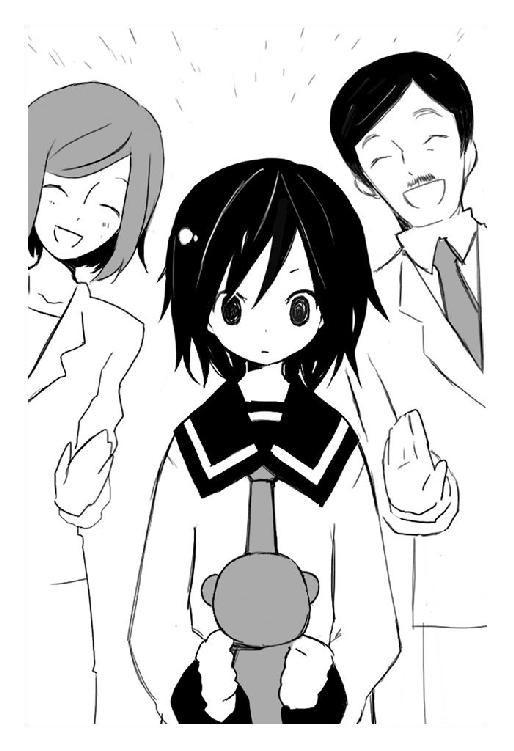
「ねぇグリコ、女の子はね、買ったテディベアに名前をつけたりするんだよ。グリコも試してみたらどうかな？ そういうところから常識及び一般的社会倫理観は形成されていくんだからね」
常識及び一般的社会倫理観──か。
グリコはそんなもの認めてはいない。認めてはいないが。
「名前──か。じゃあ、ヨノ」
拗ねたような顔をした目つきの悪いテディベアを、グリコは真剣な顔で見つめた。火乃は微笑んで、まぁ素敵な名前、さすがグリコちゃんね──と意味もなく褒めてくれた。
なんなのだろうこの状況は。
グリコは思いだしてみる。
............。
突然に現れた偽原火乃と偽原樹夫の夫婦は、賢木財閥から派遣された特派員を名乗った。名刺まで持っていたので間違いないと思う。この国で、もし誰かを騙す目的で賢木財閥の名前を出せば、その瞬間に警察に捕まるよりもっと酷い目にあってしまうのだ。賢木という名前は、そういう力を持っている。逆説的に、賢木財閥の使いを名乗った時点で、彼らの身分は保障されたようなものだ。
気絶したままの鈴音をグリコが敷いた布団に寝かせ、火乃と樹夫をそこらへんに座らせる。自分に用件があるといったが──グリコは不審げに二人を見るも、その顔にも全く見覚えのようなものはなかった。
狭苦しい四畳間は食べ物の匂いがする。たまに消臭剤をかけるものの、簡易キッチンが一つの部屋にあるので匂いを拭い去れない。鈴音が几帳面なのでそれなりに小綺麗にしているが、やはり部屋が狭すぎるので雑多な感じは否めない。箪笥。ＴＶ。教科書などの書籍類。それに炬燵が置いてあるので少し歩くのにも難儀する。
「常識及び一般的社会倫理観養成訓練──？」
戸惑う賢木。
「何て言った？」
聞き取れなかったグリコ。
火乃は空々しいほど幸せそうな笑みで、なんて素晴らしいんだろうとでもいうように両手の指を絡めて語る。
「はい。常識及び一般的社会倫理観養成訓練──まぁ、それはいわゆる一般名称ということで、格好つけるために難しい言葉にしちゃった感じなんですけどねっ」
「そうですね法律の名前みたいなもので、──実際はもっと簡単なものですよ」
樹夫が楽しそうな顔で合いの手をいれる。妙に息があった夫婦だ。
「略して──というか、わかりやすい言葉にすると『グリコちゃんに常識を知ってもらおう講座』というか『いい加減に普通に暮らしてくれないと賢木財閥でもフォローできませんよ。だからね......』というか。そんなんですねっ」
彼の言葉に賢木は表情を変え、嫌そうな顔でこちらを見てきた。
「......グリコ、貴様いったい何をした」
「知らん」
全く身に覚えがない。自分は自分らしく生きているだけだ。
火乃は笑顔で語る話題でもないだろうに満面の笑顔で語る。
「グリコちゃんはね、宇佐川鈴音さんと一緒に暮らすには相応しくない人物なんです」
その言葉に、グリコはぴくりと眉をひそめる。自分が、鈴音と一緒に暮らすには相応しくない人物──そんなこと、言われなくてもわかっている。もとより成り行きで一緒に暮らし始めたのだ。他に行く場所がないからここに留まっているだけで──。
けれど、そんなこと、何も知らない他人に言われたくはない。
睨みつけてやると、樹夫がまるで動じずに賢木を見た。
「愚龍様。願鳳様はとりあえず、宇佐川さんの周辺から改革していくのが肝要だとお考えになっております。為人というものは、周囲の環境に大きく左右されます。周りに生ゴミばかりでは身体に匂いが染みつきます。周りに下品な言葉遣いの人間しかいないならば、きっと下品な口調となってしまうでしょう」
「故に、周辺整備というわけです。宇佐川鈴音さんの周囲に在るもの全てを徹底的に改革し、彼女に健やかな環境で成長していただくのです」
樹夫の言葉を火乃が引き継ぐ。あらかじめ打ち合わせをしてきたのかと思うほど滑らかな感じである。
賢木は渋い顔をして、二人をどこか見下すような顔で睨みつけた。
「──それにはグリコが邪魔だ、と」
火乃と樹夫は声を揃えて応える。
「そのとおりでございます、愚龍様」
「何故だ......」
聞き捨てならず、グリコは瞳を爛々と燃やして炬燵を拳で殴った。酷い音がしたが、壊れないように手加減したつもりだ。
用意されていた麦茶のコップが盛大な音をたてて倒れた。
グリコは煮えた腸の熱をそのまま口から放射する。
「グリコのどこが邪魔だというんだ──おまえら。り、鈴音に、グリコが悪影響を与えているとでも言いたいのか！」
その言葉にいつものような鋭さはない。グリコだって少しは自覚しているのだ。鈴音を非日常の世界に突き落としたのは自分。自分が現れなくても鈴音はいつか林檎の力を発現させただろうが、それを結果的に加速させたのは他ならぬグリコなのだ。
けれど──それでも。
鈴音には自分が必要ない、むしろ邪魔だなんて──言われたくない。
しかし樹夫は当たり前のように言う。
「はい。邪魔で、悪影響です」
「............」
簡単な英単語の意味を教えるかのように丁寧な彼の言葉に、グリコは怒るべきか哀しむべきかもわからずに賢木を見た。彼は難しい顔をして押し黙っている。
「しかし──」
重々しく、賢木は真剣な低い声でつぶやく。
「──グリコの存在によって、閣下が救われているのも確かだ」
「はい。それも承知です」
「ですが、今の状態では悪影響のほうが多いんです」
火乃はちらりと樹夫を見る。樹夫は素早く鞄から何か書類を取り出して並べる。グリコも思わず読んでみたが、難しい言葉が多すぎてくらくらした。
火乃が苦笑めいた顔で説明してくれる。
「これは、ここしばらくでグリコちゃんが起こした傷害、器物損壊、殺人未遂などの記録です。はい多すぎですね。願鳳様の計らいにより全て罪には問われていませんが、未成年だということをさし引いても素行が不良すぎます」
「グリコは未成年じゃないぞ」
賢木の言葉にグリコも頷く。夫婦はきょとんとした顔で、どういうことだろうと顔を合わせただけだが──。
そう──グリコは今年で千歳くらいだ。正確な数字はよく覚えていないが、とりあえずこの地上で最も高齢な部類の人間だろうと思う。七五三の時に配られる千歳飴というのがあるが、まさかあれを発明したひともリアルで千歳まで生きる人間がいるとは思っていなかっただろう。あまり火乃たちの話に関係はないが、とりあえずそれが事実である。
しかし──そうか、誰かを殴ったり、殺しかけたりするだけで罪に問われるのだ。考えてみれば当たり前のこと。しかし千年間も放浪をくりかえしてきたグリコに、そういった常識や倫理を期待するのがそもそも間違っている。
常識及び一般的社会倫理観養成訓練──。
グリコは火乃を見る。火乃は心を読んだかのように頷いた。
「はい。グリコちゃんにそういった悪い行いをしない、まっとうな人間になっていただくのが常識及び一般的社会倫理観養成訓練の目的でございます。あなたは、あまりにも犯罪を頻発させすぎです。そんな人物と一緒に暮らしていては、宇佐川さんの成長に何らかの悪影響を及ぼして然るべきだ──と願鳳様は判断されました」
なるほど、道理ではある。
グリコだって、できることなら鈴音には迷惑をかけたくない。
安心させるよう樹夫は柔和に微笑んでくれる。
「もちろん、訓練が終わったらすぐにでもこの家に帰っていただいて結構です。社会人として、一般人として生きていくのに困らない程度の常識を学んでいただき、宇佐川さんに悪影響を及ぼさないと判断された時点で、訓練も終了です」
「............」
グリコは思案する。なるほど納得できるのだ。厄介なのは、鈴音のそばにいたい、離れたくないと思っている自分の心だけで、理屈では承知している。
グリコは布団で寝ている鈴音に視線を向けた。
......彼女に迷惑をかけることはできない。
「わかった。受けよう」
グリコはそんな決断をした。どうせそんなに長い時間はかからないだろう。それに自分たちの時間は無限にあるのだ。焦らずに、その一般的なんとか訓練を受けてやってもいいのではないか。グリコはそう思う。
賢木が意外そうな顔でこちらを見ている。
「いいのか、グリコ。あんまり嫌なようだったら私がどうにでもするぞ？」
「うるさいな。おまえが口をだすことじゃない。とにかく──グリコは鈴音に迷惑をかけたくないんだ」
火乃と樹夫はなんだかそっくりな満面の笑顔を浮かべる。
「わぁ、ありがとう。嬉しいよグリコ！」
「わ、わたし、立派な母親になれるようがんばるわね！」
「僕も頼れる父親になるよ！ さぁ──今日から忙しくなるぞぉ！」
.........。
..................？
グリコは違和感に気づいて、勝手に盛りあがる二人に曖昧な視線を向ける。
「な──なんだ、なんだそれ。母親とか、父親とか」
「うん？」
火乃と抱きあって歓喜に震えていた樹夫は、感極まった声でろくでもないことを言った。
「常識及び一般的社会倫理観養成訓練──その内容は、グリコちゃんが僕らの娘になって一緒に暮らすっていうものなんだよ！ その共同生活のなかで常識とか倫理とかをちょっとずつ教えていくって寸法さぁ！」
「よろしくねグリコちゃん！ 今日からあなたは偽原グリコよ！ きゃー！」
少し決断を早まったかもしれない。
眼球抉子──改め、偽原グリコは暗澹と嘆息し──。
「──ていうか、誰が偽原グリコだ」
忌々しい。思いつつ、グリコはレストラン街のイタリア料理屋でスパゲティを食べていた。ちなみにグリコは空腹を感じないし、食事を必要としないのでこの行為は無駄である。しかし何も知らない彼らに怪しまれないために、一時的に空腹神経を活性化させて胃に食べ物を流しこむ。不老不死ではなかったころは考えもしなかったが、身体の中に異物を飲みこむというのは気持ちが悪いものだ。
異物。
「わぁ火乃さん、このピザの美味しさは国宝級だよ！ シェフを呼べ！」
「きっとそのピザは冷凍よ！ でも美味しいわ！」
「ねぇグリコ、美味しいだろ？」
「ねぇグリコちゃんも美味しいと思うでしょ？」
彼らは、異物。
彼らの愛情は──異物。
飲みこむのは僅かに気持ちが悪い。
「............」
そうだ。彼らは、自分にとってどうしようもなく他人なはず。昨日までは顔も知らなかった、素性の知れない男と女。名前は偽原火乃。そして偽原樹夫。やけにテンションが高いことを除けばとりたてて特徴のない、どこにでもいるおじさんおばさんといった感じの二人だ。
常識及び一般的倫理観養成訓練とかいう長ったるい名前の訓練を受けることを了承して、気絶している鈴音を賢木に任せ、言われるままについてきた。それからは新鮮な驚きの連続だった。これが──普通なのだろうか。グリコにはよくわからない。
──不幸になるのは、あんただけでいい。
思いだすのは、まだグリコがヨノと呼ばれていた時代──千年前の、グリコがなんの隠喩でもなく人間と呼ばれていた時代である。
拾われっ子だったグリコは、家族たちに冷遇された。それでもいいと思っていた。ご飯は食べさせてくれるし、夜は寝床を用意してくれた。気が向けば兄も遊んでくれた。けれどいつもどこかで寂しさを感じていた。ふと気がつくといつも独りぼっちだった。
不幸になるのは、自分だけでいいんだって、何度も何度も両親から言われた。グリコも哀しかったけれど全てを受けいれていた。それが親子なのだと思っていた。グリコが知っている親子というのは、グリコの記憶の中の親子というのは、どこか乾いていて、感情のこもらない獣の群れのようなものだった。
けれど──。
グリコは膝の上に置いたテディベアをそっと撫でる。思わずヨノと名づけてしまった、鈴音が過去に欲しいと言っていたらしいテディベア。まさか自分が買ってもらえる日がくるとは思わなかった。
特別に欲しかったわけではない。
けれど、なんとなく捨ててしまうような気にもなれない。
玩具屋とか、洋服屋とか、文房具屋とか、色々な店をめぐって必要なものを買いそろえた。グリコは洋服を三着と、靴と、前から欲しいと思っていたものの買えるとは思っていなかった、百円均一の安物ではない本格的なスプーンを買ってもらった。
これからも、欲しいもの、必要なものがでてきたら買ってくれるらしい。彼らの後ろにいるのは賢木財閥だ。その程度の出費、本当に雀の涙ほどもない取るに足らない端金なのだろう。グリコは僅かに遠慮しながらも、いくつかの物を買ってもらった。
自分だけのものを、盗んだりしないで、正当な理由で手にいれられる日がくるとは思っていなかった。このテディベアは、グリコのもの。グリコだけのもの。
それを考えると、なんだか堪らなく嬉しかった。
だから──。
「.........む」
グリコは気持ち悪いのを我慢しながら、スパゲティをフォークで絡めて口に放りこんだ。がぶがぶと噛んで、無表情のまま飲んで、礼儀的に言っておく。
「......美味しくなくはない」
それだけで彼らは爆発するように笑うのだ。
「わぁ！ グリコも気にいったみたいだね！」
「やっぱりこのレストランは最高だわ！ ファミレスだけどね！」
「シェフを呼べ！」
......全く、なんでこう能天気なのだろう。馬鹿みたいだとグリコは思う。親子。そんなもの認めてはいない。けれど──なんとなく、居心地が悪くはない。
彼らを親と思えるだろうか。いやそれは有り得ないな、とグリコは思う。今日のところは、まだ──だけど、いつかこの途方もない馬鹿らしさに騙されてそう勘違いすることがあるかもしれない。
「──千年前に、ヨノは死んで」
テディベアを撫でながら、小さな声でつぶやいている。
「それからずっと眼球抉子だったけど──グリコは、もう、そんな化け物の名前を名乗らなくてもいいんだろうか。わからない──グリコはそれを望んでいるんだろうか。わからないな──」
考えるのは得意ではない。悩むのも明日にすればいい。時間はどうせ腐るほどある。今は──ただこの災難でしかない異常事態に順応すればいい。
俯いているグリコに、樹夫が宝物でも見つけたみたいな顔をする。
「わぁグリコ！ 口元がソースで汚れているよ！ 拭いてあげるね！」
「それはわたしの役目よ樹夫さん！ おどきなさい！」
「仲良く拭け」
そうして世にも奇妙なダブル口拭いに晒されながら、グリコは口元に違和感をおぼえる。筋肉がちょっとだけ意志のとおりに動かない。不思議になって、押しつけられるハンカチをどけて口元に手をやる。
理解して──ちょっと驚いた。
「笑ってる......のか」
グリコは薄っすらと微笑んでいた。本当に珍しく、今日初めて会った人間の前で。
どうも──自分は、この状況が楽しくなくはないらしい。
「わぁグリコが笑ってるよ！ 可愛すぎるから僕は気絶する！」
「わたしもー！ ひゃーん、らぶらぶぅ！ きゅうぅぅ～......」
奇声をあげて倒れる二人に他の客たちが驚いて騒ぐ。
「............」
全くもって不本意なことだが、グリコはちょっとだけ楽しいらしい。
深夜──。
「芸術」
人気のない公園で。
「芸術──そうね、むごたらしさというものは、極めれば素晴らしい芸術になる」
子供たちが遊んだまま放置したボール。静寂を吸って物悲しい遊具。荒らされて凸凹とした砂場。それほど広くない公園の──水飲み場の目先、ベンチ。
「下品。低俗。卑猥。穢らわしいと──一般人に毛嫌いされる死体に煌めく芸術の光。うふふ。そうよね、綺麗な人間の死体は、とても綺麗で芸術的なの。淫靡で、素敵。陰惨で、素敵。残酷で、素敵。まったくもう──なんてことかしら、心をもたないこの私が、興奮に震える身体を抑えることができないわ」
そこに、一人の女が座っている。
「殊絶の夜に乾杯かしら？ 満月も星も美しいじゃない──心地よい美酒で乾杯かしら？ 極上の死に震えちゃう」
その周囲に、人間の肉が広がっている。
............。
ごく僅かな光度を保つ水銀灯の下、女は誰に聞かせるでもなく、蜂蜜のような甘ったるい声で言葉を紡いでいる。住宅街に位置するこの児童公園は日が暮れると完全に人気がなくなり、この無惨な光景も誰にも発見されずにいる。
肉。そして──血。ただそれだけがベンチに座る女の周囲に散乱している。いったい何の肉なのか、その外観だけでは想像できない。ただぬらぬらと下品に光る肉はまだ新しく、冬の冷気に微かながらも湯気をあげていた。
月明かりと、星の光、水銀灯にのみ照らされた肉はどこか赤茶けて、まき散らされた血液も地面に染みこんでただ黒い。現実感のない──暴戻なだけの静止風景。
女はそれを名画でも鑑賞するようにただ黙って眺めていた。
「いつまでも」
嘆息する。
「見つめていたい──あぁ、私はなんてものを創りあげてしまったのかしら。いいえ、それは傲慢よね──この作品の制作者は、他ならぬ死体になってしまったあなたたち。私は、その芸術を腐敗する前に堪能できた幸運な客というだけのこと」
まったく──どこまで美しいものを隠しているのだろう、この地球は。どれだけ生きても見尽きぬ世界。女はこの素晴らしい世界を純粋な意味で愛していた。
聞こえるのは、遠くから響いてくる車のクラクション。風の音。公園の茂みが揺れる音。見えるのは──闇にくるまれたどこか曖昧になってしまった世界。
陰影だけの家々。小石まじりの公園の土。血の匂いに惹かれて寄ってきたのは得体の知れない羽虫ども。
「羽虫──ね」
女はまたも嘆息する。嘆息すると、彼女の口元からフシュー、とヤカンから吹きでる蒸気のような音がする。
それも当然、彼女は風邪や花粉症の予防などではなく、明らかに防塵や防毒ガスのために造られたマスクで口元を隠していた。武骨な形状で、洗練された美麗とも表現すべき彼女の外見にそこだけが浮いている。
そのマスクのせいで少しだけ表情がわかりにくく、年齢はあまり判然としないが、外見的には二十代後半の女性のように見える。野性的に痩せていて、研ぎすまされた刃を思わせる。その細くしなやかな身体に露出の多い服をまとっている。
外見のわりに少年的なプロポーションを、背中に天使の羽がプリントされたタンクトップのみで隠している。冬だというのにその白い肌には鳥肌ひとつも浮かんでいない。腰のあたりを申し訳程度に包んでいるのは女性用の太股までしかないジーンズのショートパンツ。
髪は、穢れのない純白。混ざりもののない、初雪のような色。腰まで伸びたその髪を一本の三つ編みにしている。手首のあたりは様々な腕輪やリストバンド、色とりどりに巻かれた布などで飾られている。
そんな奇異なる外見をした彼女は露出した目元だけを険しくし、足を思案げに組むと暗闇に語りかけた。考えをまとめるとき、声に自分の思考をだすのが女の癖である。そうすることで考えが良くまとまるような気がするのだ。
「蟲──蟲ね。先月の、不自然な羽蟲どもの動き。すぐに沈静化したけれど──原因は未だわからずじまい」
緩やかな風が女の髪を撫でている。
「首謀者と思われるのは、この町に棲む林檎の所持者。確認されたのは四個体──宇佐川鈴音、賢木愚龍、眼球抉子──そして」
言葉を切り、考えるような顔をする。
「蟲になりすまし、羽蟲どもを操って彼らの林檎を奪おうとした存在──全く、まだあの一族が生き残っていたとはね。忌々しい、アダムとイブにヘビ──アダムとイブの子孫である人類は数が増えすぎて殲滅は無理だけど、ヘビの末裔くらいはこの私が削除できたりするかもね」
真剣な表情で前方を睨みつける。
「まずは、手頃な林檎の所持者から林檎を奪いましょう。そのときに、できることなら事件の顛末を聞いておきましょう。全く──なんでこの私がこんな面倒事に服さなくっちゃいけないのかしら。私はただの消化器官──何かの真相を追求するとかいうのは神蟲天皇の役目でしょうに」
どうにも他の連中は不真面目すぎると思う。自分ばかりが働いているような気がする。
「──不愉快すぎて震えちゃう」
びくびくっ、と身体を戦慄かせ、女は自分の身体を露出した手で守るように抱いた。ちなみにこの動きは女の癖のようなもので、あまり意味はない。
フシュー、フシュルー、とマスクから息を漏らして女はつぶやく。
「......とにかく、あの四個体のうち誰からでもいいから、林檎を奪ってしまうことね」
そして眼前に広がる肉塊に視線をやる。考える。考える。考えがまとまってくる。
「やはり、それにはこの肉が必要だわ。芸術的なこの作品を雑事に使うのは気がひけるけれど──」
「う、わぁあッ？」
悲鳴？
瞬間──女は急速に無表情となり、声の聞こえた方向を向く。激しい動きに三つ編みが大きく揺れ動いた。視線の先──。
「ひ、ひいい。こっ、これっ、死体ぃぃ──ひゃァッア！」
冷静にその人物を眺める。紺色の制服を着た警察官である。男で、とりたてて特徴がない。あまり優秀な警官でもないようだ。落ちていた手だの肝臓だかなんだかの臓物だのを指さして震えている。悲鳴をあげ、口をぱくぱくさせて腰を抜かしている。
......警察に見つかったか。住宅街を警官がパトロールするのは何も不自然なことではない。手長鬼が暗躍しているせいか近ごろ異常なほどの警戒態勢がとられているのだ。
「手長鬼だの──林檎の保持者だの、警察官だの──」
女はフシューと嘆息し、疲れたように肩をすくめた。
「──厄介ねぇ」
そして立ちあがり、地面にへたりこんでいる警察官に向き直る。彼はそこでようやく女に気づいたようで、引きつった悲鳴をあげると尻餅をついたまま後ずさった。
「ま──ま、まさか！ てぇ、手長鬼ッ？」
「あら」
女は眉をひそめ、彼のそばまでゆっくりと歩を進めていく。
「私はあんな変態的なお子様じゃないわよ。そうね──私の名前は殺原美名。この名前、嫌いなんだけど。何故って──あんまり可愛くないからよ」
そしてどこから出したのか、一本のスプレー缶を警官に向ける。ごく普通の、ラベルの貼られていない地味なスプレー缶である。市販されている殺虫剤や消臭剤と見た目は何も変わらない。
「そうね──」
──シャカシャカシャカシャカシャカ。
女はそれを静かに振り、なんでもない動きで見せつけるように揺らす。
「──私を呼ぶならこっちでお願い。殺菌消毒とね──」
警官は幽霊でも見たかのような顔をして、情けなく悲鳴をあげるとこけつまろびつ立ちあがりもせずに逃げる。膝をつき、悲鳴をあげながらどうにか立ちあがろうとして、足をもつれさせて転ぶ。完全に恐怖で動転しているらしかった。
フシュー、と美名は下らなくなって嘆息した。
「全く──呆れた警官だわ。情けない。視界を汚濁させる毒ね──」
警官は美名の言葉を理解せず、ただ叫びながらようやく立ちあがる。
「せ──先輩ィ！ 助けて！ 嘆木先輩！」
近くに仲間がいるのか。あまり人を呼ばれても困る。
美名は素早く判断し──。
「助けてぇ！ て、手長鬼、手長鬼がぁ！」
だから──違うと言っているのに。
──シャカシャカシャカシャカシャカ。
美名はスプレー缶を振り、静かな動きで男に向けた。
「──殺菌消毒しましょうね？」
憂鬱刑事と手長鬼
「──腕の長さを比べましょ？」
そこは家庭に居場所がない子供たちが集まるとある廃ビルの中。たむろをしていた数人の年齢も性別も不統一な若者たちは唐突な非日常に怯えていた。いつもと変わらない夜のはずだった。なんとなく眠れなくって苛々する夜にこの場所へきて、名前も知らない自分と同じような格好をした相手と喋ったり遊んだり。
それは何度も何度もくりかえしてきた当たり前の日常。
その日常に亀裂がはしり──あっさりと打ち砕かれた。
鬼に。
鬼の放った見えない拳に、若者の一人が腹を抉られて息絶えた。
死。それは死。造りものじゃない──本物の死。
亀裂。
「わぁぁッざけんなァ！」
半狂乱になり、若者の一人が手長鬼に殴りかかる。警察。自分たちを理解しない大人。キレた不良。犯罪者──自分たちには敵が多すぎる。だから、自分で自分を守れるよう、少年たちは武装した。
スタンガンで。催涙スプレーで。
角材で。木刀で。金属バットで。
しかし──そんなもの。
これっぽっちも役に立たなかった。
「ふふん？」
儚さを感じるほど華奢な、小学生くらいの女の子。それが若者たちが直面した非日常の正体だった。ごく普通にどこでも見かけるような、あどけない風貌の少女である。短い髪をツインテイルでまとめ、冬だというのにサンダルを履いている。
ただし──彼女には、あるべき場所に腕がなかった。
ギン。
体格の良い青年の金属バットによる一撃が不自然なことに空中で停止する。動かない。青年は短く悲鳴をあげ、必死でバットを動かそうとするも何か強靱な力で押さえられている感じがして動かない。
瞬間、金属バットに五本の指にしか見えない奇妙な歪みが生じ、やがてバットは嘘のようにぐにゃぐにゃとねじ曲げられていく。
「うーんと」
手長鬼はしばらく見えない指先でバットを茶巾絞りにしていたが。
「つまんない──ぞ？」
可愛らしく首を傾げると、見えない腕で青年を殴り飛ばした。べしゃり、と彼の顎から上が消し飛んで、血飛沫や脳漿があちこちに散乱する。当然──即死。彼は原型のないバットを握りしめたまま、ふらり、ふらり、と揺らめいて倒れた。
静寂。
その光景を見つめていた、五人ほどの若者は絹を裂くような悲鳴をあげた。
現代の日本では、死というものに触れる機会が極端に少ない。死体は迅速に回収され、火葬場で焼かれて一瞬にして灰になる。ゲームや映画や漫画、精巧に模倣されたそれら死の模造品は本物の死すら嘘っぽくさせ、若者たちから死への恐怖を奪った。
だから──まるで、少年少女にとって本物の死は魔法のよう。
理解ができない異常な事態。ショックで──彼らは半狂乱になって逃げだした。
「......うるさいなぁ。せっかく静かな夜なのに」
手長鬼は不愉快そうな顔をして、若者のなかで唯一──年若い少女を見つける。やっと若い女の子を見つけた。近ごろこの町の人々も警戒心を強めていて、手長鬼が見つけるべき林檎の保持者らしい少女も探しにくくなっていたのだ。
そろそろ見つけておかないと──。
手長鬼は頷き、今度こそ当たりならいいなと思いながら追いかける。
「当ったるかなっ♪ 当ったるかなっ♪」
そして見えない腕を伸ばす。
「ひぃっ！」
少女は足首のあたりをいきなり掴まれて、つんのめると激しい勢いで前に倒れた。拍子で少女の懐から煙草やライターが転がり落ちる。明らかに彼女は喫煙して良い年齢ではない──しかし、むごたらしく殺されてしまうほど悪いことをしたわけではない。
運が──悪かったのだ。
非日常。突然の死。その象徴──鬼に、出会ってしまった不幸を嘆くしかないのだ。
異様な光景だった。
「高い高い～♪」
異様で、酷薄な光景だった。
四肢を同時に見えない腕で掴まれた少女は、強い力で空中に持ち上げられる。自由に空中浮遊しているようにも見える彼女は、しかし一切の自由を奪われて僅かに身じろぐことしかできなかった。恐怖に瞳孔は完全に開き、歯がガチガチと鳴っている。
彼女がそうして死の危機に立たされている隙に、他の若者たちは一目散に逃げている。少女は絶望する。そうなのだ──この廃ビルでたむろしていたのは家族でも友人でもない、ただ自分と同じような境遇の他人でしかないのだ。助けてくれるわけがない。
理解して──少女は自分でも意外な相手に助けを願った。
「た、助けて......おとうさん、おかあさん」
愛情なんて冷めていたはずの、ただ血がつながっているだけの両親。三度の飯と小遣いだけを用意してくれれば、いっそ人格なんてないほうがいいと思っていた鬱陶しい両親。
「助けてぇ──お父さんお母さぁん！」
そんな彼らに、窮地に立たされた今になって助けを希う。
「......えへへっ、手長鬼ちょっとデジャニュだよ」
謎の言葉を口にして、手長鬼は首を傾げる。
「あれれっ。ちがうな。デジャニュじゃなくって──なんていうんだっけ、デジップ？ うぅん......デジャブ？ そんな感じの──ね、お姉さん、昔の手長鬼に似ているよ」
デジャブというのも少し違うのだが、手長鬼は感慨深い顔をする。
「でもね、助けなんて現れないんだよ？ 神様はいません。英雄はいません。困ったときに助けてくれる白馬の王子様なんかいないんだ。だって──もしも神様がいるんだったら」
ぶぢり。
鈍い音。
「手長鬼は──鬼になんかならなくて良かったはずだもん」
引き裂かれたのは──少女の両腕。ぶぢりぶぢりと筋肉や骨格、脂肪や血管を力任せに捻じ切られ、少女の両腕が少女の身体から分断される。信じられないほどの出血と甲高い悲鳴が薄暗がりの廃ビルに満ちる。
「あ──がぁ、あぁァぁ」
少女は痛みですでに発狂したように白目を剥いている。当然だ。生きたまま、意識を保ったまま両腕をもがれたのだ。ショック死しなかったのが不思議なくらいである。
「虫ってさ」
手長鬼は表情を変えない。目の前の、自身が成した残酷な光景にも無邪気な顔のまま。
「見つけると、腕とかちぎりたくなるじゃない。羽をむしって、触覚を抜いて、ばらばらにしたくなるじゃない。手長鬼ってね──そういう子供だったんだ。そして多分ね──きっと、そこからちっとも成長してないんだ」
ぶち。ぶぢり。
そして少女の両足も呆気なく引きちぎられる。
「でも、それでもいいの。そんな手長鬼をゼキくんが受けいれてくれたから」
すでに痛みか出血かで絶命している少女に手長鬼は低く囁いた。
「だから、私は手長鬼でいい。人間を昆虫みたいに殺せる心のない鬼でもいい」
少女の亡骸を打ち捨てて、また外れか、と嘆息し。
「神様を待つ弱い人間は嫌い。英雄を待つ卑屈な人間は嫌い。私は──人間じゃない、堕天使のそばにただ居るだけの手長鬼でいい」
無邪気な──虚ろな笑顔で吠えるのだ。
「どう？ 手長鬼の両腕、とってもとっても長いでしょう？」
私立観音逆咲高等学校は、ひなびた田舎の片隅にあるごく平凡な学校である。校風は地味で、生徒も全体的に大人しく、のほほんとしているので周囲の評判はすこぶるよろしい。四つの校舎が広い校庭のあちこちに散在しており、少しだけ移動が不便で困る。創立もかなりの昔のことになるので、あちこちに年季のはいった落書きなんかが残されている。
常に爽やかな風が流れる、どこか時代に乗り遅れたような雰囲気の場所だった。
そのなかでは二番目に古い第二校舎、二階の廊下の最奥にその教室はある。平凡なこの学校には露骨なほど相応しくない賢木愚龍という教師が担当している、一年Ｂ組の教室である。この学校の生徒は掃除も真面目にするので、古いながらもありがちな朽ちたような感じはしない。
放課後。からんころんと終業のベルが鳴り、完全に爆睡していたグリコを鈴音がちょこちょこと指で突いていた。グリコは近ごろなんでだか学校ではいつも寝ている。これはグリコの性癖というか業のようなもので、ある意味ではしょうがないことなのだが、鈴音と暮らし始めてから彼女もあまり眠らなくなっていたというのに。
あのなんとかかんとか養成訓練というので疲れているのだろうか。鈴音はいまいちその訓練の内容を把握していないのだが、大変だなぁと漠然と思う。せめてがんばっているグリコの邪魔にならないよう、余計な心配をかけないようにしなくては。
克美が死んで、しばらく抜け殻のように暮らして。
恐ろしいほど冷淡に時間は流れていって。
目撃者の証言から『手長鬼』とマスコミに呼ばれるようになった殺人犯は、すでに十人の人間を殺している。それも鈴音と同年代の女の子だけを狙って。十人。数字はいつだって空虚だ。血肉がない。
鈴音は林檎の力で死ぬことがないが、それでも怖いし、殺されたひとたちは可哀想だし、犯人は早く捕まって欲しいと思う。
「............」
そして──克美のことを考える。自分を友達と呼んでくれた女の子のことを。彼女と培ってきた他愛のない思い出や、胸に深い影を残している克美のお葬式。克美の両親は泣いていた。克美の弟も泣いていた。鈴音もただ泣いていた。涙で糊化されたあの重苦しい雰囲気は、そのまま消化されずに鈴音の胸内にくすぶっている。
最後に見た、寂しく笑う克美の顔を思いだす。
「......次は、あたしが奢るはずだったのにね」
「何をだ？」
「わ──」
いつのまにかグリコが起きていた。考え事に没頭していて気づかなかったらしい。彼女は特徴的なオオカミヘアを眠たそうな顔でぼりぼり掻くと、半目がちに鈴音のちょっと涙を浮かべた瞳を覗きこんできた。
グリコの瞳は銃口の瞳。感情はないし何も語らない。全てを吸いこむような暗い暗い瞳である。でも今は、どこかしら優しさのようなものがにじんでいるように思えた。
鈴音の涙をあえて無視したか、グリコは立ちあがるとかるく伸びをした。
「ふあぁ。眠い......。寝ても寝ても足りない」
「グリコちゃん、近ごろ夜更かししているの？」
ちなみにグリコたち不死者には特に睡眠欲求というものはない。しかしグリコは眠るのが趣味だとかで人並みに睡眠をとるのだった。
机に引っかけてあった鞄を手にとり、彼女はなんでもないように応える。
「あぁ。手長鬼を探している」
その言葉に鈴音は心臓が止まるかと思った。
「手長鬼──って、殺人犯の？」
「そうだ。どうもそいつは夜中にしか行動していないようだからな、夜には適当にうろついて探し回っているんだ。見つからないけど」
鈴音は青ざめてしまう。駄目だ──危ない、と思う。もちろんグリコの強さは知っている。普通の『蟲』なら鎧袖一触で撃破してしまうのだ。けれど、なんだろう、やはりグリコにはあまり危ないことはして欲しくない。しかも相手は正体不明の殺人犯なのだ。
鈴音の表情を読んだか、グリコは珍しく柔らかな笑みを浮かべた。
「大丈夫。それに──グリコは戦うことしかできないから」
小さな声でつぶやくのだ。
「鈴音や、賢木。樹夫に火乃──学校の連中、誰も、手長鬼には殺させない」
そこまで言って、ハッと気づき、照れくさそうな顔をするとさらに小声でつぶやく。
「樹夫に火乃は──別にいいか。あいつら、毎日のようにグリコのベッドに侵入してくるし。昔話を読んだり子守唄を歌ったり。馬鹿にしすぎだ。グリコはあいつらより年上なんだぞ。......全く、遠慮がないというか、厚顔無恥というか」
「......グリコちゃん？」
ぶつぶつ独語するグリコに、不思議になって鈴音は首を傾げる。
グリコはまたもハッとして、ぶんぶんと首を振った。
「な──なんでもない。くそ、調子が狂ってる......」
そしてずかずかと教室から出ていく。鈴音も戸惑い、驚きながらもそんなグリコの背中についていったのだった。
学校帰りに、グリコが買い物をしていきたいと言うので鈴音もつきあうことにした。今日はバイトがお休みの日だ。もう一月も終わりに近く、太陽も素早く地平線に消えようとしている。黄昏色が塗りたくられた商店街はどことなく寂しげだった。
三週間、グリコと離れてみて、鈴音はこれまでいかに彼女の存在に寄りかかっていたのかを知った。たしかにあの家は自分のものだけど、保護してくれていたのはグリコだ。嫌だな──と鈴音は思う。いつまでも、誰かに依存して、誰かに守ってもらいながら生きているのは。
賢木。グリコ。死んでしまった克美。自分の周囲には優しく守ってくれるひとがたくさんいるから、鈴音はどうしても甘えてしまう。それは心苦しいことだと思う。強くならなくてはいけない。少しずつ。
いつも放課後には生徒たちで溢れる商店街も、やはりというべきか人気があまりない。手長鬼。一月の始まりとともに観音逆咲町に現れた殺人犯は、一ヶ月としないうちにもう十人の人間を殺している。
被害者の共通点は、唯一、女の子であること。
けれど、つい先日に報道されたニュースによると、被害者には不良少年や男の警官も混じっているという。警官のほうは手長鬼を見つけ、逮捕しようとして返り討ちにあったのだと誰かが解説していたが──。不良少年はよくわからない。
それらは例外として、主に狙われているのは高校生くらいの女の子だ。最も手長鬼の恐怖に震えているのは鈴音と同年代の女の子たちである。実際、鈴音とグリコの他は、ほとんどの女子が学校に登校していなかった。外を出歩くと手長鬼に殺されると、自分から学校を休むか、親に止められるかしているのだろう。鈴音の知り合いにはほとぼりが冷めるまで疎開すると田舎に帰ってしまったひともいる。手長鬼は観音逆咲町でしか事件を起こさないので、それも有効だろうとは思う。
そんな感じに、手長鬼が平和だった観音逆咲町に生んだ波紋は大きかった。
町には連日ＴＶや新聞の取材が押し寄せ、物見高い野次馬があちこちを写真に撮っている。未だ清掃が追いつかない事件現場には生黒い血の跡が残され、紺色の制服を着た警察官が昼も夜もなくうろついている。
鈴音は一人では少し不安だったので、アパートの隣の部屋に住んでいるお姉さんと一緒に寝ることにしている。ご飯も一緒に食べている。情けないが、やはり一人でいると落ちつかないのだ。鈴音がこうして普通に学校にかよっていられるのも、怖くないからではなく、自分が不老不死の身体だからだ。まだ痛覚はそれなりに残っているものの、絶対に殺されることはないとどこかで思っているからだ。
グリコみたいに、手長鬼には負けない、手長鬼なんか怖くないという感じではない。
......あぁ本当に嫌だ、と鈴音は思う。強くない。自分はちっとも強くない。
強くなくてはいけないのに。
克美に申し訳ない。心配性だった彼女が、安心して天国へ行けないじゃないか。
「待たせた」
営業していたファンシーショップからひょこりと顔をだし、グリコがほとんど動かない無表情でこちらを見た。手には小さな紙袋が握られている。
「あ──うん」
考え事に没頭していた鈴音は慌ててそんな彼女を見た。
「何を買ってたの？」
「よくわからない」
それは──よくわからない。
グリコは目を細めて紙袋を通学鞄に放りこんだ。
「けど──綺麗なもの」
「珍しいね、グリコちゃんが買い物なんて」
少しはグリコも変わってきたということだろうか。例の訓練はグリコを一般的な高校生にするという趣旨のものらしい。だとしたら、その訓練はそれなりに効果を発揮しているんじゃないかと思う。
グリコはなんでだか鈴音の言葉に唇を尖らせた。
「......うるさいな。火乃がもうじき誕生日だというから」
「ひの？」
首を傾げる鈴音に、真っ赤になってグリコはずかずかと歩きだす。驚いて、鈴音はそんな彼女の横に早歩きで追いつくのだ。なんだろう。グリコは近ごろこういうことが多かった。人間らしい感情を表にだしていて好ましいとは思うのだが、詳しい経緯がよくわからなくて置いてきぼりをくらった気分である。
「......ど、どうせ、グリコらしくないのは理解している。けど、あいつらが露骨に買ってくれ買ってくれと目線で訴えるから。だいたい火乃もなんだ、なんの脈絡もなく誕生日の話とかをするな。誘っているのが見え見えだ。ふん──べ、別に、親だと思えたわけじゃない。あいつらには──ただ、その、色々と世話になっているから」
「............？」
全くわけがわからない。
鈴音は一念発起して、商店街の奥のほうにある喫茶店の前で直進しつづけるグリコの服を引っぱった。リードに牽引された犬みたいに「ぐう」と呻いてグリコは止まる。
「......どうした」
訝しげな顔でグリコはこちらを見る。なんだかその顔が無性に可愛かったので彼女の髪の毛を撫で、鈴音は和やかに微笑むと喫茶店を指で示した。
「入ろ」
「.........む？ どうして」
「いいから。たまにはさ」
理由も説明せずに喫茶店の扉を開く。ここは克美と最後に会った喫茶店だ。『インディアンバー』と銘打たれた古風な喫茶店で、いつも店内は薄暗い。
近ごろ変わり始めているグリコ。彼女の変貌の理由が知りたい。友達だから。っていうのは──少し違うかもしれないけど、グリコの立場を知ることができれば困ったときの相談くらいには乗れるかもしれない。
グリコの力になってあげたい。
一ヶ月前、彼女は自分を助けてくれた。
それからも、孤独な心を賢木とともに癒してくれた。
何より──死んでしまった克美のぶんも、彼女を愛してあげたいと心から思うから。
カランコロン。
喫茶店の扉に嵌められた鈴が綺麗な音をたてた。
「いらっしゃいませ」
まだ年若い店長がにっこりと微笑みかけてくる。しかし鈴音はとっさに応えられなかった。右正面──一つの席に、なんだかおかしな人物が座っていたからである。
ちょっとびっくりした。
男性である。姿勢が悪いので背は高いのか低いのかわからない。かるく伸ばした髪が顔のほとんどを隠しており、かろうじて見える金色がかった目は見開かれていた。くたびれたようなコートを着て、安物らしい煙草をくゆらせて、何故かこれだけは最新型のスポーツシューズを履いている。
──髪の毛のオバケ。
なんとなくそう思った。別に髪がめちゃくちゃに伸びているわけではない。しかし整えられていない前髪が顔のほとんどを隠し、表情が見えないのだから人間性なんか欠落している。さらに姿勢が悪い。何故か椅子の上に胡座を組んで首を傾けている。変な人形みたいだ。そんな彼はそのままの姿勢でぴくりとも動かず、時折ひょいと手を伸ばして煙草の灰を灰皿に落としている。
店内には彼の他に客らしきひとはいない。手長鬼のせいでみんな寄り道せずに真っ直ぐ家へ帰っているらしい。
「あのお客様」
店長は表情を笑みで固定して唇を動かさずに語った。
「刑事さん──らしい」
「刑事？」
見えない。刑事といったら犯罪者を捕まえる警官のことだが、彼はなんというかむしろ犯罪者サイドの人間のように見える。しかし──刑事ということは、彼もおそらく手長鬼を探している途中なのだろうと思う。たしか刑事というのは二人一組で行動するんじゃなかったっけと曖昧なＴＶ知識に鈴音は首を傾げる。
店長は静かな、淡い音楽みたいな声で囁いてくる。
「うん。だから邪魔しちゃだめ」
「わかりました」
頷いて彼女に背中を向けると、静かな声が耳に届く。
「......寂しい。もう、克美ちゃんの声は聞けないのね」
「──......」
彼女は店にくる全ての客の顔を覚えているのだろうか。
「寂しい。クラシックじゃ──寂しい」
そしてレコードをかける。力の湧いてくるジャズ。なんだか涙が溢れてきて、鈴音は彼女を見ずにグリコと並んで一つの席に座った。あまり広い店ではない。刑事だという怪しい男性のすぐそばに座ってしまった。
見ると、彼は虚ろな瞳で天井のあたりを見つめている。考え事に没頭しているらしい。刺激しないようにしよう。鈴音はそう決めて、メニューボードに視線を移した。ちょっとだけ寒かったのでホットコーヒーを頼む。鈴音にはまだ寒暖の感覚は僅かに残っている。グリコは「ココア」とつぶやいて、「眠気覚ましに」と言い訳っぽく付け足しをした。
ココアにはあまりカフェインが含まれていないのだが。
ちなみに彼女、甘いものを食べたり飲んだりするときだけ味覚を活性化させているのを鈴音は知っている。
注文を受けて店長は頷く。鈴音はきっちりと背筋を伸ばした無表情のグリコを見る。
「......なんか、色々と落ちつかないよね」
「うん。だけど──別に不満じゃない。この鬱陶しさ」
グリコは真っ直ぐにこちらを見つめてくる。銃口の瞳は今日も暗く暗く。
「淡々と、起伏もなくつづいていく毎日というのは、苦しい。かなり苦しい。特にグリコは──何百年かずっとそうだったから。何事もない平穏な日々というのは、好きだけど──怖い」
一瞬でスプーンを取りだして、静かな表情で眺める。
「蟲でも探して殺したくなる」
息を呑む鈴音に、グリコは微笑んだ。
「......グリコが蟲と戦っていたのも、大抵はそう──暇潰しのためだったな。家族の仇ということもあったが、恨みや憎しみなど千年も持続しない。ただ、グリコは、退屈をまぎらわせるために蟲を殺してまわっていたのかも」
そんなことはないと思う。グリコは、蟲に狙われる林檎保持者を助けるために戦っていたのだ。千年も。ただの暇潰しなら、そんなに長いあいだつづくわけもない。『持続』に必要不可欠なのは強い『使命感』だ。惰性ではつづかないことのほうが多い。
グリコは少しだけ俯いた。
「けど──近ごろは、その退屈じゃない、というか、平穏でない毎日というのもちょっとだけ嫌だ。日常を壊されるというのが、怖いと思い始めている」
グリコは弱くなってしまった──彼女は歯がゆそうにつぶやいた。それは違うと鈴音は思う。鈴音と初めて会ったころの、何も持たず、何も願わず、機械のように化け物のように生きていたグリコより、今のグリコのほうが何倍も強い意志を瞳に秘めている。
彼女は独語するように、鈍く煌めくスプーンを見つめながらつぶやいた。
「鈴音、グリコは人間に戻れてきたのかな？」
弱くて、大事なものを失うのを怖がって。
けれど心はきちんとあって、誰かのことを真剣に考えられる。
そんな人間に──。
「この世には──憂鬱なことが多すぎる」
不意に、切れない刃で背骨を撫ぞられたような感覚が──声が。
見ると、グリコと鈴音の真横、テーブルのそばに不気味な刑事が立っていた。間近で見ても人間からは遠い。口元にはうっすらと無精髭が生えている。彼は鈴音でもグリコでもない曖昧な位置を見開いた目で凝視し、首を傾けたまま語りかけてくる。
「......特にこの町には、多すぎる」
「何の用だ」
グリコが鋭く問いかけた。刑事はクックック、と肩を震わせて感情なく笑った。
「......失礼。怪しいもんじゃありません。自分──こういうものです」
そして刑事は懐から警察手帳を覗かせる。どうも本当に刑事らしい。怖い怪物とかこっそり開発してそうな外見なのに。
ただ、開いて見せられた手帳の中身、そこに映っている写真は目の前の彼とは別人のようだった。簡単にいうと美形だった。髪の毛を整えれば美形になるというオチらしい。それとも本気で別人なのだろうか。
奇妙な刑事は口元だけで笑う。
「刑事──嘆木狂清。専門は、殺人事件です」
「嘆木──狂清」
グリコは眉をひそめる。
「......残虐な名前だな」
グリコには言われたくないだろうと思う。
彼女は彼の怪しい外見にも全く怯まずに、どこか威圧的な態度で問いかけた。
「......で、その嘆木狂清がグリコたちに何の用だ？」
「おや──勇ましい」
クックック、と嘆木はそれは無理やり造っているだろと思う不自然な笑い声をあげる。そうしているうちに店長がコーヒーとココアを運んできて、どこか心配そうな顔で嘆木を見据えた。嘆木は全く怯まずに、彼女にかるく会釈すらした。
そして許可などしていないのに鈴音の横に座るのだ。ちなみにグリコと鈴音が座っていたのは四人がけのテーブルである。鈴音はぎょっとして、思わず身をすくめる。グリコは瞳に敵意をこめてそんな嘆木を睨みつける。
「何の用だと、聞いている」
「おっと──クック、そう怖い顔をしないでくださいな。せっかく可愛い顔なのに。おっとっと──ますます顔が怖くなる」
意味のない発言をして、急激に真面目になる。
「まぁいいとして、君たち、手長鬼って殺人犯を知っていますか？」
「知らん。失せろ」
辛辣なグリコに嘆木は愉しそうな顔をした。
「......嘘はよくない。クク、嫌われた？ 僕、嫌われた？ 光栄だねぇ。どうせ──最初の最初から、『みんなに好かれるおまわりさん』なんざ目指しちゃおりませんし。まぁとにかく、手長鬼のことを知らない人間が観音逆咲町にいるわきゃないんです」
だったら最初から確認なんかしなきゃいいと思う。鈴音は俯き、ちびちびとコーヒーを飲みながらそんなことを考えていた。この嘆木という男、汚そうな外見に反して体臭は清潔で、さらにくどくない程度に香水なんかもつかっていて隣にいても不快じゃない。もしかしてこの外見は単なるファッションなのか。新鋭的なファッションセンスの持ち主なのだろうか。
「このままじゃ──手長鬼は永遠に捕まらないと思うんです」
嘆木は不思議な抑揚の声で言った。
「みんなね。頭──固いんですわ。ガチガチさんですわ。全くね、犯人は複数の巨人だとか強力な兵器を持ってるとか、そんなわけわかんねぇ与太は信じるくせに──目撃者の、小さな女の子が殺したっていう証言は『ありえない』と笑いとばす。なんてこと、それこそ笑い話にもなりゃしません。あんなにたくさん警官がいて、誰もその証言に注目していないってのが頭痛くなるってんですよ」
「グリコたちに愚痴るな。鬱陶しいから消えろ」
グリコがほとんど殺気に近い光を瞳から放つ。
「まぁまぁ」
しかし嘆木は動じない。鈴音は知っている。本気のグリコに睨まれて怯まないというのはかなりすごいことなのだ。この刑事──怪しいだけの人物じゃない。
「まぁ──お嬢さんがた、寂しいおじさんの話し相手になってくださいよ。そうね──事件の目撃者、その大多数が『小学生くらいの女の子を見た』と証言している。複数の事件現場にいて、なお生き延びてるってんなら犯人に違いないでしょ。問題は──小学生が人間をあそこまでめちゃくちゃにできるかってこと」
現実的に考えれば、できない。不可能である。被害者も高校生の女の子で身体が軽かったとはいえ、石塀や地面に何度も叩きつけて殺すなんてことができるわけない。なかには四肢をもがれて殺された被害者もいたらしい。そんなこと、小学生というか大人でも道具を使わなければ無理だ。
けれど──鈴音は知っている。
この世界に生きているのは、人間だけじゃないってこと。
「けれど、僕は知っています」
鈴音の心を読んだかのように、嘆木は静かにつぶやいた。
「一ヶ月前──僕は巨大な怪物を見ました。そしてその怪物と戦う、少女にしか見えない一人の人間をね」
「──」
グリコは一瞬だけぴくりと眉を動かしたが、悟られないためにか努めて無表情を装った。油断ならない嘆木にその演技が通じたかどうかはわからない。怪物、巨大な化け物──それは、一ヶ月前の事件でグリコが戦った相手だ。そして嘆木が見たという少女は、間違いなくグリコのことだろう。
嘆木は──それに気づいているのか、いないのか。
「だから、僕は確信している。この世には──憂鬱なことが多すぎる。憂鬱なほどに、理解できないことが多すぎる。だから──僕は、あの日から、憂鬱なんです。人間には理解できない世界があるなんてこと、知ってしまえば警官なんて馬鹿らしくってやってられません。論理も法律も常識も無視した存在がこの世にはいるんですからね」
憂鬱刑事は暗く笑った。奥が読めない表情で、鈴音には彼の内心を読むことができなかった。グリコも押し黙り、喫茶店には音量を抑えたジャズの旋律が漂っている。
嘆木は静かに宣言する。
「僕が個人的に集めた情報によると、この喫茶店のすぐそば、神社の近くに、滅多に人間が通らない墓場があります。そこの付近で手長鬼らしき少女を見かけたという話が多い。僕は──これからそこに行きます。警察は風聞の類だとあまり気合をいれて捜査をしていませんが、じっくりと調べていけば必ず痕跡か──あるいは、手長鬼本人が見つかるはず」
そこで、彼は机にコンと小さなテープレコーダーを置いた。そしてしっかりとした動きで『停止』のボタンを押す。不思議な顔をする二人に、嘆木は当たり前のように言った。
「......これまでの、僕の言葉は全て録音しておきました。これを──迷惑をかけますが、観音逆咲署まで届けて欲しい。そのときに、僕がすでに殺されていれば──当たりです。他の警官は一気に事件の真相へと近づくことができるでしょう」
「──なんだと？」
グリコは戸惑っている。鈴音も青ざめてしまう。そうか。そのために嘆木は自分たちに喋りかけてきたのか。手長鬼を捕まえるために。手長鬼＝目撃された少女という考えをみんなに認めさせるために。ひいては、この無惨な事件を迅速に解決するために。
「ま──死ぬつもりはありませんがね」
嘆木はかるく立ちあがり、勘定をするためカウンターへ向かう。そしてよろよろと、どこか気が抜けた不気味な調子で歩きながらつぶやくのだ。
「まったく、この世には──憂鬱なことが多すぎる」
グリコの決断は早かった。鈴音に喫茶店の勘定を任せ、絶対についてくるなと言い聞かせ、嘆木の後を追うために急いで足を動かした。不気味だが、嘆木は普通の人間だ。もしも手長鬼という存在が人間ではない化け物だとしたら──本当に殺されてしまう。
別に嘆木に同情したわけではない。ちっとも親しい仲というわけではないのだ。けれど──もしも本当に嘆木の推測が正しくて、手長鬼が墓場にいるとしたら、自分が戦って倒すしかない。同じく──化け物の自分が。
人間では、化け物に勝てない。
自分が──殺すしかない。
土や埃やタイヤの跡で薄汚れた道路を走り、いつでも人気のない神社の境内を駆ける。鳥居を抜けて、石畳を進み、賽銭箱の横を通過する。目指す墓場はその目と鼻の向こうだ。冬の冷気に乾燥しきった砂を撒き散らし、グリコは神社の奥、錆びついたフェンスを軽やかに飛び越す。着地し、正面を見ると苔むした墓石がでたらめに並んでいる。
羽虫がやたらと飛んでいた。
ゴーン、と神社で鐘が鳴った。
「......何をしている」
グリコは小さくつぶやいて、墓石の隙間、落ちたアイスクリームに群がる蟻っぽく地面に顔を近づけて這っている嘆木を見た。安物らしいコートが泥で汚れている。
それなりの速度で追跡し、神社の境内をショートカットまでしたのに先に到着されてしまった。どうも嘆木は自転車かバイクを使ったらしい。変なところでむかつくやつである。手長鬼と戦うにはこの男が邪魔なので、なるべく先に到着しておきたかったのだが。
嘆木はグリコを見もせずに、地面をじっくり注視している。
「......やっぱり、きてくれましたね。きてくれると思っていました」
囁くような──嬉しいでも愉しいでもない嘆木の声。その言葉にグリコは眉をひそめる。
こいつ──。
「一ヶ月前の事件で、怪物と戦っていたのは君ですね？」
「......だからなんだ」
グリコは特に隠そうともせず応えた。クックックと嘆木は笑い、じりじりと地面を這っていく。ゆっくりと歩み寄り、彼のそばに立つといきなり注意された。
「あ、そのあたりに立たないでください。痕跡が消えちゃうでしょ」
「こんせき？」
「はい──手長鬼の痕跡です」
つぶやいて、しばし沈黙し、嘆木はぞろりと立ちあがった。姿勢は悪いがそれでもグリコよりかなり背が高い。ちなみにグリコはクラスでも背が低いほうだ。林檎の力を使えば背が伸びないこともないが、あまりにも阿呆らしいのでそんなことはしない。そう──林檎には因果を捻じ曲げ、奇跡を起こす力がある。その林檎の力を最大限に利用して、グリコは常人には及びもつかない超戦闘力を得ている。
手長鬼の、人間を玩具みたいに殺してのける戦闘力もそれに近い雰囲気がある。まさかと思うが──林檎の持ち主だろうか。その可能性もあるだろう。しかし、それにしては殺人に躊躇いがなさすぎる。林檎の保持者だとしたら、昔のグリコよりもずっと化け物に近いかもしれない。
「......痕跡というのはなんだ？」
「はい。まぁ手長鬼の現在位置を掴むための証拠といいますか──実際の刑事事件では指紋とか髪の毛とか色々とあるんですが、今回はわりとシンプルなのが見つかりましたね」
それだけ言うと確かな足取りである方向へ向かう。
グリコも慌ててついていく。
「何が見つかったんだ？」
「足跡です」
背骨がないような奇妙な歩き方の嘆木は淡々と説明する。
「小学生くらいの女の子の、可愛らしいサンダルの足跡が見つかりましたよ。目撃者の証言では手長鬼もサンダルですし──冬ですしね、可能性は高いでしょう。比較的に地面が湿っていて足跡が残りやすかったのが幸いしました。そういえば昨日は雨がふりましたね」
「............」
グリコは沈黙して嘆木を見る。骨格が変なのか首は曲がりっぱなしだ。不気味で、いまいち得体の知れないところがある。しかし行動理由は立派に正義と呼ばれるものだし、決して無能な刑事ではないようだった。
しかし──足跡を残しているとは。たくさん目撃もされているようだし、どうも手長鬼の行動からは警察から逃げよういう考えが読みとれない。警察に見つかっても大丈夫という自信か。それとも、単純に迂闊なだけだろうか。
「............」
首を振る。そんなことはどうでもいい。鈴音の友人を含む十人もの人間を殺した殺人犯──化け物かもしれない少女が待ちうけているのだ。気を抜けば殺されるのはこっちかもしれない。
久しぶりの感覚だな、とグリコは思う。
しばらく忘れていた──殺伐として冷やりと乾いた戦闘の気配。
警戒しながら歩を進め、やがて二人はその場所に辿りつく。
そこは、ごく普通の墓石が置かれているだけの場所だった。苔むしている墓石が目立つこの墓場で唯一、綺麗に磨かれた御影石の墓。特徴的なところはなく、『相沢家』という文字と梅の花に似た家紋が丁寧に刻まれている。
置かれているのは──そのへんから引っこ抜いてきたような花。泥つきの、世間では雑草という評価しかされない冬にも咲く地味な花。そしてどういう根拠か缶ビールとアンパン。一枚の毛布と──。
両腕の欠落した女の子。
「............いた」
嘆木が、小さくつぶやいた。
「本当に──」
少女は──普通の女の子らしく可愛らしい寝息をたてていた。穏やかに、何か楽しい夢でも見ているのか和やかな顔で。しかし彼女が普通であればあるほどその異常さは際だっていく。彼女が眠っている場所は、誰かの死を封じこめた墓石の前なのだ。
「これが──」
こんなに華奢な女の子が。
「──手長鬼？」
十人の人間を殺し、観音逆咲町に恐怖をばらまいた殺人犯。手長鬼──彼女は、見たところ、両腕が欠落しているだけの女の子に見えた。
もちろん、外見が怖い化け物ほど強いというわけではない。
しかし──。
「おい、君──」
考えているうちに、嘆木が手長鬼に手を伸ばしている。相手が無害そうな女の子だと見てとって油断したか──いけない。眠っているうちにせめて縛るなりなんなりしておかないと。否──そうだった。警官はみだりにそんなことをしてはいけないのだ。
嘆木には、殺しあいをするつもりがない。
それは──甘い。甘すぎる。
化け物という存在は、殺さなければ殺されるのだ。
「ぱちっ」
瞬間、手長鬼が獰猛に目を開く。
「だぁれ──手長鬼かなり眠いんだけど！」
そして──高く、高く。
見えない力に弾き飛ばされて、嘆木狂清は吹っ飛んだ。爆発したかと思った。そのくらい凄まじい勢いだった。悲鳴をあげる余裕もなく嘆木は高らかに飛んで、いくつもの墓石にぶつかりながら地面を転がっていった。
「────っ」
グリコは脳を戦闘態勢に切り替えて、眠そうに瞬きをする手長鬼を睨みつけた。なんだ──今の現象は。攻撃が見えなかった。攻撃が速すぎて見えなかったというのとは違う。単純に、見えない何かでぶん殴られたように思えた。
嘆木のほうを見もせずに、手長鬼は大欠伸をする。
「むぅー、むにゅにゅぅ......、手長鬼ねぇ、毎晩なにかと動いてて疲れているんだよ？ せめてお昼くらいは寝かせてよ。眠いよぅ。もう──さっさとバイバイしてね？」
そして、今度は見えない打撃がグリコにくる。見えない──なりに、風の動きなどで避けられるかと思ったが、空気が動いている感じもしない。なんだこれは。
「──くっ」
とりあえず、嘆木のやられ方を見て、相手はまず顔面を狙ってくると当たりをつけたグリコは両腕をクロスさせて手長鬼の打撃を防いだ。重い──巨大な石でも投げつけられたかのような衝撃だ。なるほど、こんな打撃を何度も受ければ人体など簡単に壊れる。
間違いない──こいつが、十人殺しの手長鬼！
みしみしと骨がきしむ音を聞きながら、グリコは衝撃を殺して跳躍し、一つの墓石の上に立つ。そして制服のポケットからスプーンを抜き放つと神速で手長鬼に投擲した。
「──わきッ？」
本能的に危険を察したか、寝ぼけた顔を瞬時に引きつらせると手長鬼は二本の足だけで激しく跳躍した。くるくる回転しながら後方に跳んで、グリコと同じく誰かの墓石に着地する。驚いたような、冷や汗混じりの顔だった。
そうして──眼球抉子と手長鬼、二人の化け物が相対する。
「......あっれ。ちょ、ちょっとタンマね」
手長鬼は不思議そうな声で中止を呼びかけると、深く考えこむような渋い顔をした。
「あれ──あれれ、違うよねぇ。うーん、違うよ顔が違う。あなた──手長鬼が狙ってるひとじゃない。もしかして手長鬼の勘違い？ 顔の覚え間違いかなぁ。って──毎回そんなこと言ってる気がするけど」
よくわからないことを独白して、手長鬼は問いかけてくる。
「あなた、なんて名前なの？」
「眼球抉子」
偽原グリコとでも名乗ってやろうかと思ったがやめた。あまり格好いい名前ではない。考えながら嘆木を見る。強かに全身をぶつけたようだが命に関わるほどではない。今は放置しておいて大丈夫。しかし迂闊なことをしてくれたものだ。眠っていた鬼が目覚めてしまった。
「おまえは──手長鬼か？」
新たなスプーンを握りながら問う。
手長鬼はにっこりと答えた。
「そうだよ、手の長い鬼で手長鬼！ けど──あれっ、眼球さん、なんでそんなに強げなのかな？ 手長鬼ちょっと驚いたんだよ？」
「説明してやる義務はない」
正直なところ面倒だった。笑いながらも、手長鬼は全身から殺意を放っている。これに耐えながら延々と喋っているとそれだけで倒れてしまいそうだ。間違いなく、油断ならない相手。気をひきしめながら一つだけグリコは問いかける。
「誰かを狙っていると言ったな。おまえには何か目的があるのか？」
「うん。聞きたい？」
手長鬼は無邪気なほど簡単に教えてくれた。
「手長鬼はね、えーとね。......。うんと、ウダガワリューネってひとを殺さなきゃいけないの！」
「......誰だそれは」
「見つからないの！」
手長鬼はしょんぼりして、それから目に輝きを戻して尋ねてくる。
「......あっ。ねぇねぇ眼球さん、あなた、もしかして林檎を持ってるの？」
もちろん普通の林檎の話ではなく──人間に不老不死と奇跡の力を与えるエデンの林檎のことだろう。林檎のことを知っているとは、やはり、彼女は林檎の保持者なのだろうか。だとすれば、殺しあうのはなるべく避けておきたいのだが。同じ地獄に落とされた同胞のようなものだし、だいたい死なないので戦っても無駄だ。
唯一──可能性として、『相手の林檎を奪う』というものはあるが。
林檎は、持ち主がその所有権を放棄した時点で失われてしまう。ゆえに、林檎の所持者を倒すならば、拷問したり、脅したり、あらゆる手段で相手の林檎を奪わなくてはならないのだ。一ヶ月前も、その法則を狡猾に利用した存在にグリコも鈴音も苦しめられた。
グリコは油断なく頷いて、さらに一歩だけ質問を進める。
「あぁ、グリコも林檎を持っている。おまえも──」
「わぁラッキー！」
言葉を遮り、手長鬼は墓石の上で跳びあがった。
「じゃ──その林檎を手長鬼にちょうだい！ ゼキくんが欲しいのはリューネってひとの林檎だけど──林檎なんか見分けつかないんだから、あなたから奪った林檎でもゼキくんはきっと気づかないもん！」
「ふ、ふざけるな」
あまりにも無邪気な物言いに、危機感を覚える前に戸惑う。しかし手長鬼は一顧だにせず笑い、小さく跳ね、感極まったような声で叫ぶのだ。
「──ちょうだい！ 手長鬼それが欲しいのぉ！」
墓石が砕けた。咄嗟に跳躍して見えない腕をかわすグリコの背後、硬い材質の石が粉々に粉砕される。いったいどれだけの威力だというのだろう。あんなもの、本気の一撃を直接ぶつけられれば肉が抉られる。
点々と置かれた墓石を跳ね回る。そのたびにバカン、ゴガン、と見えない腕が墓石を砕き散らしていく。
「もぉ、避けないでよ！」
ぷうと頬を膨らませ、手長鬼は動かずに見えない腕のみを操作する。
「でも──逃げきれるわけないんだよ？ こうすればどう？」
言葉と同時にいくつかの墓石が同時に根元から引き抜かれ、罰当たりなことに一斉にグリコに向かって投擲された。武器をスプーンしか持たないグリコには対応できない超重量──グリコはしかし一刹那も慌てることがなかった。
「調子に乗るな──」
とん。
軽やかに。
土埃と、乱れた泥と、暗い色の墓石の群れ。
グリコは大地を蹴り、跳躍し、墓石の一つを踏む。とん。さらに静かな動きで二つ目へ、三つ目へ、猛速度で放たれる墓石を足場にしながら手長鬼に近づいていく。鮮やかなその動きは踊っているかのように流麗だった。
「わぁすごい！ 楽しいぃ！」
手長鬼は驚きも怯えもせずむしろ喜んだ。
「眼球さんは強いんだね！ 手長鬼は興奮しちゃうよ！」
「そのまま死ね」
冷たい言葉と同時に投げつけられるスプーン。銀色の閃光が一直線に疾空する。
しかしスプーンは手長鬼に到達する直前に見えない腕で弾かれ、小さな音をたてて落ちる。一ヶ月前の事件の時も思ったが、やはりスプーンでは蟲はともかく化け物を相手にするにはひ弱すぎる。
しかし──とグリコは思う。
一ヶ月前、スプーンという弱い武器を常に使うことで抑えこんでいた凶暴性が解き放たれ、グリコはおぞましい化け物になってしまった。殺戮を愉快に感じる化け物。外見的にも精神的にも人間ではない化け物。
あの一件で千年かけて熟成させた林檎は消え、グリコも二度とあのような化け物に変貌することはなくなったはずだった。しかし林檎を失い、減じたはずの戦闘力は変わらずにグリコの身体に残っていて──。
自分の身体に何が起こっているのかはわからない。
あのとき自分がなってしまった真紅の化け物の正体もわからない。
神──だと思う。けれど、何故、あのとき神の姿になってしまったのか。
わからない。答えをくれる相手などどこにもいないのだから。
とにかく今は、自分の心を救ってくれた賢木と鈴音、二人の平穏を守るために戦う。
千年前に死んだ女の子は、そうして今を生きている。
「──ぐっ」
いきなり左後方から放たれた見えない腕の一撃で体勢を崩され、瞬間、正面からの正拳突きにもんどりうって倒れる。慌てて立ちあがるも、グリコは切れた唇の血を舐めて眉根を寄せて考える。
近づけば近づくほど分が悪い。見えない攻撃──それはつまり拳銃のようなものだ。弾丸が放たれてから避けても遅い。撃つ直前の──相手の動きや目線から推測するしかない。しかし至近距離ではそれも難しい。なかなか単純なようで厄介な相手だった。
しかし遠距離から攻撃しようにも、スプーンを投げたくらいでは簡単に弾き飛ばされてしまう。せめて手長鬼のように墓石を飛ばせたら──。
そこまで考えて、ふと気づく。
──試してみる価値はあるかも。
「ほらほらほら！ ぼうっとしてると殺しちゃうからね！」
楽しそうな顔で手長鬼が見えない拳をくりだしてくる。後方に跳んでかわし、グリコはわりと小振りな墓石を掴む。スプーン以外の武器を使うことに躊躇いはあったが、四の五の言っている場合ではない。苔のぬめった感触に閉口しながら足を踏ん張る。
これでも腕力には自信がある。
しかし──ぐぐ、と力をこめても墓石は動かない。手長鬼はいとも簡単に動かしていたというのに──何故？ 考えながらも、手長鬼の腕が飛来してくるので場所を移動する。
やはりグリコと手長鬼の腕力の違いか？ しかし──グリコだって本気で殴れば墓石くらい粉砕できる。しかし地面から引き抜いて投げることはできなかった。
それに──不思議なこともある。
手長鬼は、明らかに二本以上の腕を操っているのだ。墓石を引っこ抜くには、最低でも二本の腕が必要だろう。しかし彼女は四つだか五つだかの墓石を同時に投げていた。すなわち──手長鬼の見えない腕は二本以上、計算上は十本ほどもあるということになる。
手長鬼を見る。欠落している両腕。あの外見に騙されて、見えない腕も二本しか操れないと考えていたら痛い目を見そうだ。
どうやら彼女の能力は、見えない長い腕を操るという単純なものではないようだ。
「......色々と確かめてみるか」
グリコはつぶやき、神社の宮司が見たら首を吊りそうなほど荒らされた墓場の中心で、手長鬼を挑発するように仁王立ちした。そして不敵な顔で手招きする。
「──どうした、その腕が自慢なんだろう？ しかしその程度のものならば、ただ見えないというだけで大したことはないな！」
「............」
ぴくり、と手長鬼の片眉が跳ねあがる。
「ば──馬鹿にした？ て、て、手長鬼の──長い両腕を馬鹿にした？」
小刻みに震え、手長鬼は簡単に激昂する。
「くぅ眼球さん、もう容赦なんかしないんだから！ 遊びはおしまい！ 死んじゃえぇ！」
叫びとともに猛烈な殺気が前方から放たれる。これまでの比ではない。グリコは咄嗟に身体を反転させ、しかし大きく避けはせずあえて小さいフットワークでかわした。制服のスカートが風を吸ってぶわりと膨れる。
瞬間。
「──折れちゃえ！」
手長鬼の号令──と、同時にグリコの全身に襲いくる衝撃。
「うぐっ──」
呻き、グリコは特に酷い違和感があった左足に眉をひそめながら、自分を殴りつけてきた見えない腕を掴もうと試みる。拳か──そうでなくても腕が実在するなら掴めるはずだ。
しかし、すかっ、と腕のある場所を通過してグリコの指先は空を切る。
「あははっ」
手長鬼は甲高く笑った。
「手長鬼の腕に触ろうとしても無駄だよ！ 手長鬼の両腕はねぇ──特別なんだから、眼球さんも、ゼキくんも、手長鬼ですら触れないんだから！ 一方的に触れるだけ！ 無敵で素敵な両腕なの！ どう──もう馬鹿にしないよね？ 素直に褒めていいんだよ？」
グリコは舌打ちしながら大きな墓石の背後に退避する。違和感があると思ったら左足の骨が折れていた。グリコは長い不死者としての生活の果て、痛覚というものを失っている。それは戦闘において不利でしかない。痛みとは、身体の異常を知らせる信号である。その信号が届かなければ自分の限界がわからない。
放っておけば林檎の力で再生するだろうが──この戦闘中に動かせるまで回復するのは絶望的か。
また舌打ちし、グリコは左足と右足の靴下も靴も全て脱いでしまう。裸足のほうが動きやすい。昔は──まだごく当たり前に眼球抉子を名乗っていたころは、いつも裸足だった。大地を踏みしめ、軽やかに動く裸足が戦うには最適なのだ。
手長鬼に砕かれた左足の腓骨と脛骨のあたりは酷く腫れている。グリコは脱いだ二足のハイソックスで骨折した場所をがんじがらめに縛り、とりあえず極めて適当な応急処置をした。折れた骨が動かないよう固定しただけ。
「──隠れても無駄だよ！」
背中を預けた墓石が一瞬で砕かれ、舞いあがった埃で何も見えなくなる。ゴミが目に入らないようぎゅっと瞑って、グリコは冷静に思考しながら牽制のためにスプーンを投げる。
相手の能力はだいたい把握できた。根拠や理屈は不明だが、そんなもの、化け物を相手に考えること自体が馬鹿げている。学術的な根拠などいらない。科学的な理屈はいらない。ただ彼女が力をつかうことで発生する影響のみを知ればいい。
手長鬼の能力は、厳密には『見えない腕』ではない。
あえて表現するならば念力──超能力のようなものだ。彼女は念じた場所に力場を発生させ、物体を動かすことができる。それは墓石を砕いたり、人間を殴ったりといった直接的な行動から、恐らくある程度の日常生活動作をも可能にしているのだろう。自動販売機にコインを投入したり缶ジュースのプルトップを外したり。おそらく──人間の手と同程度の行動は可能だと推測される。
なんとか片足で跳び回り──攻撃を避けながら、グリコはこの敵の攻略法を考える。
とりあえず、すぐに思いつく対処法は手長鬼の手が届かない距離まで逃げることだが、嘆木をそのまま置いて逃げるというのも不人情だし、根本的な解決にはならない。あとは──手長鬼の集中を乱すとか。彼女はわりと単純な性格をしているし、念力の腕をまともに操れないくらい動揺させてやればいい。
しかし──どのように。
考えていると、皮肉なことに、グリコのほうが動揺する展開がやってきてしまった。
「────」
小さい、声が聞こえた。
内容までは聞き取れない、酷く小さな声。
この声は。
グリコは反射的にそちらを見て、そこに宇佐川鈴音が立っていることに気づいて戦慄する。優しげな風貌。小柄な体躯。可愛らしくあしらったリボン。
「鈴音──何故」
馬鹿な。おかしい、と思う。ついてくるなと言ったのに。鈴音はそれほど愚かな女の子ではないはずだ。グリコのところにきたって、足手まといにしかならないのを理解しているはずだ。それなのに。
自分は死なないからと油断しているのか──否、それも考えられない。
鈴音。どうして。
「......うん？」
手長鬼はそこでようやく気づいて鈴音を振り返り、ちょっとだけ沈黙した。
何か考えているような間を越えて、彼女は普通に決断した。
「なるほど。うん──邪魔だからこっちから殺そっか」
何か不自然な言葉。しかし考えている暇はなく──。
「逃げろ鈴音ッ！」
グリコは吠えて、三つのスプーンを抜き放つと手長鬼に向かった。宇佐川鈴音を危険に晒してはならない。守る──守ってみせる。自分の命に代えても。
そうして一瞬だけ、グリコは戦闘中だというのに我を失った。
その間隙──最悪のタイミングで手長鬼が振り返る。
「なーんて、まずは眼球さんからね？」
ぐぎり。
嫌な音──と、同時に首筋に違和感、圧迫感。そして信じられない勢いでグリコは空中に飛びあがる。否──持ちあげられたのだ。手長鬼の見えない腕で。
「ぐ──う」
首を絞められ、スプーンを握ったまま、動くこともできずグリコは宙ぶらりんになる。しまった──グリコは呻く。自分としたことが、油断した。
「どう？ 手長鬼の両腕、とっても力が強いでしょ？ 苦しいでしょ？ 死にたくなるでしょ？ ていうか──死にたくなるまで首絞めてあげる」
ぎりぎりぎり、と首の骨が折れない限界の力で絞められる。気道も血管も残らず大きな見えない指先に圧迫される。グリコは声にならない声で叫び、触れない腕を引き離そうと意味なく空中を掻きむしった。
吹き飛びそうな意識をどうにか押さえつけ、グリコは白濁してきた視界に鈴音の姿を探す。いる。鈴音は墓場の入り口、水くみ場のあたりで呆然と立っている。逃げもしないし騒ぎもしない。ただ僅かに肩のあたりが震えている。笑っている？
どうして。
どうして──鈴音。
考えているうちに──意識が、意識が。曖昧に。模糊として。
意識が消えて ............
「......あれっ。呆気なぁい」
手長鬼は俯いて、だらりと四肢を垂らしたグリコをつまらなそうに見る。
「ま──これでわかったでしょ？ 手長鬼、とってもとっても強いでしょ？ 手長鬼はね、ゼキくん以外には絶対負けないんだから。うん、でも楽しかったよ眼球さん、せめて林檎をくれるまで丁寧に痛めつけてあげるからね？」
グリコは応えない。
だらり、と最後に指先まで完全に弛緩して──。
スプーンが、くるくると落下した。
手長鬼はそれを満足そうに見ている。
「あははっ、それにしてもどうしてスプーンなんて──」
「どうしてだと思う？」
短い声。低い──声。
その声は、気絶しているはずのグリコの口元から。
「────えっ？」
手長鬼は表情を変えるが、もう遅い。
くるりと落下したスプーンはグリコの露出した素足を滑り、瞬間、素早く動いた足の指に掴まれる。そして折れていないグリコの右足は後方に大きく揺らいで──。
強烈な蹴りが瞬時に振られ、スプーンは前方──手長鬼に解き放たれた！
「ひィ──あ？」
反応──間に合わず、スプーンは正確に手長鬼の右眼球に突き刺さる。甲高い悲鳴をあげて、手長鬼は痛みか衝撃か後方に倒れると悶え転がった。
「あぁ！ ぎゃあ！ 痛い──痛いよぉ！」
集中が途切れたのか、彼女の見えない腕は消失し、グリコは解き放たれて地面に軽快な動きで着地した。そして情け容赦なく一気に手長鬼へと駆け寄る。
思ったとおり──手長鬼は、圧倒的に戦闘経験が少ない。グリコの死んだふりにあっさり引っかかって、油断した。
勝利を確信して、グリコは躊躇わず突き進む。
「どうしてグリコがスプーンを使うかって？ 眼球をえぐりやすいからだ。どうして眼球をえぐるかって？ そんな理由──とうに忘れた」
「う、ああ！ あぁ！」
手長鬼はなんとか立ちあがり、血混じりの涙を零しながら叫んだ。
「わぁ、あぁ！ ちょ、ちょっと待って──痛い、痛いからぁ！」
「うるさいな。最期の最期に見苦しい」
グリコは手長鬼の華奢な肩を左手で掴み、思いっきり右の拳を眼球に突きたったスプーンに叩きつけた！
ぐしゅッ──。
──。
「ァ────」
深々と刺さり、後頭部を突き抜け、潰れた血まみれのスプーンが地面に落ちる。手長鬼は口をぱっくりと開き、また閉じ、信じられないという顔でグリコを見ている。
「────ぅ」
「一本では死なないか？」
グリコはまたもスプーンを取りだすと、それを彼女の残った左眼窩に突きたてた。そして慣れた動きで眼球を抉り取り、ぽっかりと残った空洞を思いっきり殴りつけた。
血と──眼漿と、脳漿と──涙、様々な液体を迸らせて、手長鬼は地面に叩きつけられると動かなくなった。
ぽん、とグリコは抉りとった、まだ眼漿のしたたる目玉を指先でつまんで笑う。
それは自覚していない、ただ清純な満足感に浸った笑み。
化け物の笑みだった。
ざり、と足音がした。
「────」
足音？ 敵か。手長鬼の仲間か。
ならば殺す。排除しなきゃ。殺さなきゃ──殺される。
「──」
獣のように振り返り、背後に立った人物にスプーンを突きたてようと──。
「──くすくす」
その鈴を転がすような笑い声で──戦闘の余韻に焼き尽くされていた理性が戻った。グリコはぎくりと硬直し、自分が殺意を向けた人物をあらためて見た。
「あ.........」
グリコはそこでようやく思いだす──この場に鈴音がいたということ。
そこに鈴音が立っている。自分の『大切』になってくれたひと。誰よりも大切に想っているはずのひと。
そんな彼女に──彼女に？
見られた。自分の化け物みたいな顔を。見られたくなかった。一ヶ月前の真紅の姿も、今の眼球を抉った姿も、鈴音だけには見られたくなかったのに──。
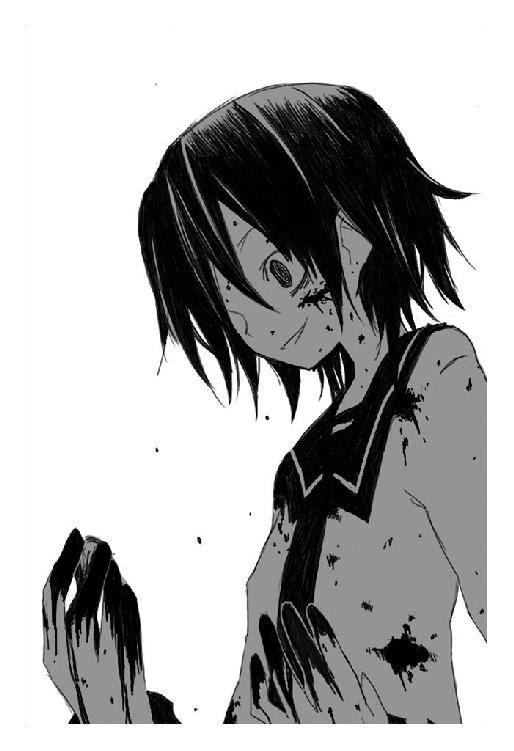
「あ......あ」
何より。
鈴音にだけは。
やってはいけないと──思っていたことを。
鈴音に──。
鈴音に、自分は──スプーンを向けてしまった。
「くすくす」
鈴音は、笑っていた。
「くすくす──うん、良いものを見た。いやいや、良いものを見たなぁ。これで夜まで何事もなくすごせたら生涯最高の日に認定かなぁ。否──三番目くらいか。まぁ順序なんかどうでもいい。ただ──良いものを見たなぁ」
邪悪に、ただ邪悪に、笑っていた。
邪悪？
それならば──鈴音じゃない。そんな鈴音は、鈴音じゃない。
「おまえは」
「うん？」
鈴音はそこで初めてグリコに気づいたみたいな顔をした。
「やぁ──久しぶり」
そして意味のわからないことを言うのだ。グリコは戸惑う。久しぶりって、ついさっきまで喫茶店で一緒にいただろうに。考えていると、彼女はくすくすと愉しそうに笑った。
「変わったね──見違えた。美しくなった。ふふ、狂った光が瞳にこめられてて最高だね。色気もでてきて超最高だね。残酷になって超々最高だねぇ──あはっ、ただの小娘だったヨノちゃんがどう間違えばこんなんなるのかなぁ？ まぁ間違えさせたの俺なんだけど、それがまた自分の隠し子が大富豪になったみたいで微妙」
ヨノ。その名前。
グリコは表情を変え、鈴音の外見をしたこの存在を見る。決まりだ。こいつは鈴音なんかじゃない。何か別の禍々しいものだ。
「誰だ──おまえ」
「うん？ あぁ、わからないかな、この外見だと」
言葉と同時に鈴音の身体が変貌を始める。骨格から筋肉から何から全てが耳汚い音をたてて変形し、原型を失って姿を変えていく。
「う──」
大切なひとが奇怪にねじ曲がっていく光景は凄惨で、グリコは思わず呻き声をあげてしまう。そうしているうちに鈴音だった身体は長身の男性に様変わりしている。
異様に背が高い。賢木よりもさらに頭一個分は高いだろう。しかし筋肉質ではなく、長い髪の毛は複雑に織られながら背中に垂れていて、どこか神父のような神々しさを放っていた。けれどその神父の瞳には狼じみた爛々とした光。
「まぁ──これも本当の姿じゃないんだけど、こんなところで妥協しといてくれないかな？ 怖い怖い殺菌消毒が暗躍しているから俺も本当の姿を晒しちゃまずいのさ。この姿も──まぁ、何百年か使ってて愛着があるし」
雑談口調で意味不明なことを語りながら彼は手長鬼に歩み寄る。
「くすくす、梅ちゃんやられちゃったねぇ。せっかく林檎をあげたのにさぁ。標的の顔を忘れて連続殺人やっちゃうし。お馬鹿。でもそこが可愛いんだよねぇ。くすくす。今度は頭のほうも鍛えるかな？ 君は本当に最高の玩具だよ愛しい手長鬼！」
軽く片手で動かない彼女を担ぎあげ、狼の目の男はグリコに向き直る。
林檎を持っているということは、手長鬼は死んでいないだろう。どうも林檎を得たのは最近らしく、痛覚があったのも納得できた。考えていると、男は聞いてもいないのにどうでもいいことをペラペラと喋る。
「そうそう、この子、本名は相沢梅ちゃんっていうんだ。家族全員を強盗に殺されて、自分も両腕を切断されて、発狂寸前になりながら超能力を開花させて強盗を殺してしまった──。面白いと思ったからさ、消えそうだった超能力を林檎で固定して──兵隊として使ってるんだけど、まだまだ調整が必要だね？」
相沢。それはたしか、手長鬼が寝床にしていた墓石に刻まれていた名前だ。おそらく──というか、確実にあれは手長鬼の家族の墓だったのだろう。苔むしたこの墓場で、唯一あの墓だけが清潔にされていたのもそれで納得できる。
わからないのはこの男だ。
男は警戒というより戦闘態勢で身構えるグリコに、くすくすと笑った。それは荒々しい外見に似合わない無邪気な笑いだった。
「俺のことを覚えてないのかな？」
覚えていない。記憶を探るが、一向に思いだせない。
「......全然。誰だおまえは」
思いだせないなら、こいつは自分にとってどうでもいい相手のはず。警戒を緩めずに、あまり興味もなく問いかける。
「どうして、グリコの本名を知っている」
「どうしてって？」
男は首を傾げて、手長鬼を担いだままグリコに笑いかける。
「まぁ──今はまだ、謎の人物でいいさ。あの殺菌消毒は俺にとって天敵でねぇ、あいつがどっか行ってくれるまで大人しくしとくつもりだから」
殺菌消毒。なんだそれ。
顔をしかめるグリコに──彼は肩越しに振り返って笑った。
それは邪悪な、やはり邪悪な不安になるような笑み。
「......本当に覚えてないのかな？ 俺の名前は藉口無法。千年前──ヨノちゃん、君を殺したのは俺なんだけど？」
「────」
なんだ、それは。
自分は千年前、滝壺に落ちて死にかけた。否──一度、死んでしまったのだ。そして林檎を食べて生き返った。
そういえば、どうして自分は滝壺に落ちた。
何度も何度も通っていた道、踏み外すはずもなかったのに。
「おまえ、おまえが......」
背筋に寒気がはしる。あのころ、普通に生きていたヨノを殺したのは。自分をこの不死の地獄に叩き落としたのは。
「しかし、ヨノちゃん、危ういと思うよ？ 君さ──不細工なんだよ。化け物のくせに、人間として暮らしている。そういう不細工は──殺菌消毒に嫌われる」
神父のような狼は、獰猛な瞳でこちらを見る。
「だからね、君は──殺菌消毒と遭遇する前に、自分の未来を決断しなくてはならない。化け物として生きるのか。人間として生きるのか。けれど──覚えておいて。人間として生きるなら、必ず君は殺菌消毒と相対する。あれは、神をも溶かす消化器官、今の君じゃ──勝てないよ。そして君だけじゃなく、君の周りの人間も不幸になる」
言いたいことだけ言って、藉口は遠ざかっていく。
グリコはひたすらに立ち尽くし、黙って彼の言葉を噛みしめていた。それはいつもグリコの前に立ちはだかっていた選択肢。人間として生きるのか。化け物として生きるのか。
鈴音たちと別れて生きるのか。
鈴音たちを危険に晒すのか。
──。
「うわああ！」
何故だか急激に儚い気分になって、グリコは頭を抱えて叫んだ。
閨
疲れた。何がなんだかわからなかった。怒ればいいのか、哀しめばいいのか、それすらもわからない。混乱している。頭がぐるぐるする。気持ち悪かった。
グリコは家へと帰りつき、漠然とソファに寝転がると天井などを眺めた。そして何気なくスプーンを取りだして照明に煌めかせる。
火乃と樹夫は、自分が今日、手長鬼と戦ってきたことを知ったら怒るだろうか。それは怒るだろう。誰かを傷つけてはいけないなんて最低限の約束事を、グリコは破ってしまったのだから。
「けど──」
それなら、どうすれば良かったというのだろう。
矛盾した、正義を主張する自分が二人もいるような感じがした。
鈴音を、学校の連中を、町のみんなを守りたいと思うグリコ。
誰かを傷つけてはいけない、殺してはいけないという考えを刻まれたグリコ。
両者は相容れず、けれどどちらも間違いなくグリコで、どうしようもない。自分が戦う必要はなかったんじゃないか──とも思うが、あのときは、それがいちばん正しいと思ったのだから仕方がない。それに、やはり──手長鬼は、自分じゃなきゃ倒せなかったように思う。
〝だからね、君は──殺菌消毒と遭遇する前に、自分の未来を決断しなくてはならない。化け物として生きるのか。人間として生きるのか〟
狼の目をした、偽りの神父の言葉が頭を反復している。
そうだ。グリコは気づいてしまった。今日、手長鬼と戦って。自分のなかに確かに存在する『眼球抉子』という化け物に。手長鬼と戦っていたとき、本当に楽しいと思った。彼女の眼球を抉りとったとき、なんだか気持ち良いと思った。ただ背後に立たれただけで──鈴音を殺そうとしてしまった。あれは鈴音ではなかったが──鈴音の姿をしていたのだから同じことだ。
......わかってしまった。
自分はやはり人間じゃない。
眼球を抉り、闇から闇へ、千年も生きてきた化け物だ。物言わぬ器物すら九十九年で化け物になる。千年も使い古したこの身体はすでに人間ではないのだろう。
そして──心も。
とっくの昔に化け物だった。
それがわかった。わかってしまった。だからグリコは落ちこんで、物憂げにただスプーンを眺めている。いつもこの煌めきだけが確かなものだった。大切なもののないこの曖昧な世界で、縋るように見つめていたのはいつもこの光だった。
スプーンで誰かの眼球を抉り、その命を奪ったとき、ようやく自分は生きているという実感を得ることができる。眼球抉りの化け物──それが自分。
思いだした。思いだしてしまった。
「く──」
何が常識及び一般的社会倫理観養成訓練だ。
下らない。そんなもの、人間相手の訓練だ。
自分は誰だ。眼球抉子だ。ただの冷酷な化け物だ。人間たちと一緒にいてはいけない。自分は──むしろ、あの手長鬼と同種類の生き物なのだから。
ぎり、と音がするほど強く歯軋りして、グリコは広いソファから身を起こした。観音逆咲町の中心にあるそれなりに大きなマンション。大きな窓から星を臨む暗いリビングでグリコは低く嘆息する。
いつも余所者だったヨノ。拾われっ子の自分に、どこにも居場所などなかった。千年間──眼球抉子として生きてきた自分は、鈴音や賢木にたまたまその居場所をもらって、それに甘えて──。
ぞわ、と想像の世界、グリコの脳内に無数の眼球が這う。
それらは過去、自分が他者から抉ってきた眼球。すでに光のない、虚ろなその眼球は自分をただ感情もなく見つめている。
林檎が根を張る前にとグリコが殺した人間の。不老不死の秘密を求めて襲ってきた人間の。必然はなくただの偶然でグリコと敵対した者の。数多の人間の──そして数えきれない蟲の眼球。
──自分は。
そうだ。
──幸せになんかなっちゃいけないのだ。
そんな権利などない。化け物は化け物らしく、死ぬまで闇から出なければいい。出てしまったから、奇跡のような優しさに包まれたから、いっそうグリコは穢れきった自分が恥ずかしくて嫌になって、死にたくなる。
こんな気持ちになったのは初めてだった。
あぁ──そばに鈴音がいない。グリコが馬鹿なことを言ったら、柔らかに微笑しながら叱ってくれる彼女が。
「............」
あの後──手長鬼との死闘の後、唐突に現れた狼の目をした男は手長鬼を回収して去り、後には呆然としたグリコだけが残された。
千年前、自分を殺したのだという男。藉口無法。その正体がなんだかは知らないが、とにかく──彼の言葉はいちいちグリコの心に爪痕を残した。
鈴音の姿を見て、我を忘れてしまった自分。あのときは運が良く打開策を思いついたが、相手が悪ければあれで終わりだった。自分は弱くなってしまった。以前よりずっとずっと。林檎の数が減ったせいではない。身体能力は不思議なほど変わらない。
けれど──弱くなってしまったのだ。
気絶した嘆木を適当な通行人に預け、救急車を呼ばせ、そこで何だか嫌になったから帰って今は一人でいる。常識及び一般的社会倫理観養成訓練のため用意されたこの部屋に、未だ火乃と樹夫──二人の『親』は帰ってきていなかった。
あの底抜けに浮かれきった二人と三週間も一緒に暮らして。
楽しくなかったといえば嘘になる。実際、グリコはよく笑うようになった。
けれど──これは、偽りの生活なのだ。嘘の幸せなのだ。グリコの両親は赤子のグリコを育てる義務を放棄して捨てた。それからグリコを拾った養い親は一度もグリコを愛さず蟲に殺された。それが全てだ。今さら──また親なんか欲しくない。
照明もつけず、観葉植物がさりげなく配置された部屋で、グリコは電源のはいっていない暗い暗いＴＶをただじっと見つめていた。気が滅入る。最悪の気分だ。手長鬼と戦って、得たものは気持ちの悪い罪悪感と虚しさだけだった。
ぱちり、と照明がついた。
そこに──幽鬼のように、火乃と樹夫が立っていた。
表情がない。ぎょっとして、グリコは戸惑いながら声をかける。
「か──帰ってたのか。どうした、今日は馬鹿に大人しいが」
「............」
すう、と声もなく火乃が移動する。おかしい。なんだこの人形みたいな顔は。いつも花みたいに咲いていた彼女の表情は、無機質なままゆっくりとグリコを仰いだ。
そこで。
かちり、とスイッチが入ったかのように。
「わぁグリコちゃん！ そこにいたのね！」
同時に樹夫も。
「ははっ。ちっとも気づかなかった！ ねぇグリコお腹がすいているかい？ 今日は僕が夕食当番だからね、なんでもグリコが食べたいものを作ってあげる！」
なんて、爆発みたいな朗らかさで言ってのけるのだ。
「............？」
違和感。まぁもとからこの二人の態度は変なのだが、さっきのには何か引っかかりを感じた。
嘆息する。なんにせよ、今はこの疲れる二人と喋っていたくない。
「......うるさいな」
目を瞑り、ソファに身を預けて腕を組む。
「今日は夕食いらない。気分じゃない。すまないが二人で食べてくれ」
「まぁ！」
すると火乃が大げさに跳びあがるのだ。
「どうしたのグリコちゃんごはんいらないなんて！ ごはんいらないなんて！ あぁ驚きすぎて二回も言っちゃったわ！ ど、ど、どうしたの病気？ どこか気分でも悪いの？ あぁグリコちゃん！ グリコちゃんが死んじゃうぅ？」
うるさい。
グリコはさらに強く目を瞑り、不快感を露わにした顔で冷たく言った。
「......うるさいな。そんな日もある」
今は駄目だ。不安定だから。
「だから放っておいて」
「いいえ！ グリコちゃんに何かあったらお母さん死んじゃうわ！」
お母さん？
「お父さんも何も手につかなくなっちゃうよ！ 本当に本当に大丈夫かいグリコ？ お医者さんに行く？ それともそれとも」
お父さん？
誰が？ この化け物に親なんかできるわけがない。
むかっときた。意味もなく、不愉快になった。たぶん八つ当たりだ。本気で心配してくれる二人。その態度が何故だか煩わしくて、グリコは冷たく刺すようにつぶやいた。
「──黙れ。騒ぐな。うるさい」
「グリコちゃん......」
本当に。
なんでなのかと思う。こんな可愛くない子供に。無愛想な化け物に、火乃は心底こちらの身を案じている顔で近づいてくる。そしてグリコの額に手をやって、熱はないみたいだけど──なんて、本当にお母さんだと錯覚しそうなことをする。
やめて。
もうやめて。
自分にはそんな資格などない。たくさん殺してきた。たくさんたくさん、滅ぼしてきた。誰かの親がいたかもしれない。誰かの子供がいたかもしれない。
一ヶ月前、化け物の自分を受けいれてくれる優しいひとたちがいた。宇佐川鈴音。賢木愚龍。しかし──自分は。
やはり自分は化け物だ。幸福になってはいけない化け物なのだ。
だって、何故なら、こうして日常に生きているより、今日のように──他の化け物と血で血を洗う戦いをしていたときのほうが、自分は自分らしかったのだから。十人殺した手長鬼と同じだ。自分は──自分は、鬼だ。
「触るな！」
グリコは叫び、火乃の指先を振り払った。自分でもわけがわからない。火乃はびくっとして、青くなって、ちょっとだけ後ずさった。
沈黙がおりた。
「...........................グリコ？」
樹夫の声に、グリコは顔を両手で押さえて呻いた。耐えられない。
「やめて。もうやめて。家族ごっこは──つらいよ。つらいんだよ」
眼球を抉る化け物は、そうして今の全てを拒絶した。
もう考えたくない。疲れた。頭がぐるぐるして気持ちが悪い。死にたい。
──ノアの箱船。聖書にその記述が見受けられる比較的に有名な伝説だな。はい知ってる者は手をあげろ。おぉ、予想外に多いな。別に日本人がものすごい勢いでキリスト教を信じ始めたわけじゃなく、ゲームとか漫画とかで知ったんだろうが。はい女子たちよく見るがいい。いま手をあげている男子はそういうゲームとか漫画とかが大好きなオタクだ。はいそこ手を下げるな。オタクだっていいじゃないか。私は好きだぞ、ん？
太古の昔──それこそ植物が口をきき、魔法が当たり前に存在した時代。アダムとイヴの子孫──人類たちは腐敗を極めた。他人を信じず、享楽に溺れ、飽食に満ち──互いに殺しあい、静かに、そして確実に堕落していった。
その光景を見ていた神はなんとなくむかついたのでエイヤッと洪水を起こして人類を皆殺しにしてしまいましたとさ。それがノアの洪水伝説だ。ん？ 何かな閣下、物言いたげな視線だが。そうか、そんなに公衆の面前で私の愛を確かめたいか。いいだろう──私は胸を張って腹式呼吸で告げてみよう、うさりん閣下、私はあなたを愛・し・て。
「わぁぁ先生お願いだからやめて！ なんか今日の先生は変にテンションが高いよ？ どうしていったい？」
照れずとも良いのに。
「先生──嫌いになるよ？ あの先生、ちょっと疑問なんです。その洪水で人類が皆殺しにされちゃったんだったら、あたしたち生まれてないと思うんですが」
うむ。授業中にのみ敬語で喋るから私は距離を置かれたみたいで寂しいぞ閣下。ともあれ、神とてそれほど鬼畜ではない。人類をまとめて虐殺しちゃうあたりマトモな倫理観があるかどうかは怪しいが、とにかく、そう──それはただの殺戮ではなく、そうだな、君たちオタクが大好きなゲームのリセットのようなものだったのだ。おい目を逸らすな貴御門。......とにかく、神は箱船というその洪水にも耐えられる堅牢な箱を創造し、そこに人類のなかで最も善良だったノアという男と、その家族を乗せた。
人類のとばっちりで他の動物も皆殺しにされてしまうのだが、それはあまりにも不憫だと思ったか、神様はそれぞれの動物の番いを一組ずつ箱船に乗せた。そうして次の世界を創る夫婦たちを乗せた箱船は出航し、残った生物は洪水で全滅した。
洪水が引き、全ての文明が破壊し尽くされた世界で、箱船の住人は新しい生活を始めた──と、これがノアの洪水伝説だな。悪いことをしたら神様が洪水で虐殺しますよという教訓めいたものなのだろうが、実際、生物を死滅させるほどの洪水が起こったら地球が壊れると思うのだが。生産者たる植物が軒並み全滅して死の世界だ。箱船には食料もないからまず肉食獣が草食獣を食い、その後は血で血を洗う共食い地獄が展開されたと思うし──。
「あの。あの先生」
ん？ どうした閣下。
「先生、それは授業に関係あることなんですか？ 今は普通に数学の時間なんですが」
おっと、あらゆる知識は授業に無関係なものではないよ。そう──人生という授業にはな。む？ どうして苦笑いなのかね貴様ら。先生は今かなり良いことを言ったのだが？
今日の授業が全て終了して、放課後、宇佐川鈴音は一人っきりで道を歩いていた。風が強くて髪がよく暴れ、弾丸のような砂つぶてが露出した肌を打った。
しかし鈴音は風も砂も気にせずに、何か酷く思い悩むような顔でつぶやいている。
「......かけちゃおうかな。かけちゃ駄目かな」
今日、グリコは学校を休んだ。
朝から見かけないのでまさかと思ったが、結局、放課後まで待ってみてもあのオオカミヘアの女の子は姿を現さなかった。彼女はあれで学校には休まずくる子なので、鈴音は深刻な不安に襲われてしまう。
昨日、喫茶店で不思議な刑事に声をかけられ。
待っていろと言い残し、姿を消した眼球抉子。
その日は遅くまでグリコのことを待っていたのだが、結局、夜が更けるまで彼女は帰ってこなかった。
大丈夫。グリコはとっても強いから。
信じている。必ず帰ってきてくれると。
けれど──今日も、彼女は学校にこなかった。
まさかとは思う。グリコにかぎって──とは思う。
しかしどうしようもなく連想してしまうのだ。再会を約束して──手長鬼に殺されてしまった克美。彼女のように──グリコも、手長鬼に殺されてしまったんじゃないかって。
不安で不安で、鈴音はどうにかなってしまいそうだった。賢木に相談しようにも、今日は学校の仕事がいつになく忙しそうだった。
邪魔をするわけにはいかない。
けれど──グリコのことは心配だった。
賢木に頼らず、自分がどうにかしなくてはならない。いつまでも賢木におんぶに抱っこで甘やかされているわけにはいかない。守られているだけではいけないのだ。
「──かけちゃおう」
決断し、鈴音は歩いているうちに辿りついた商店街、風よけのために店と店の間に入りこみ、こっそり座りこんで携帯電話を取りだす。
鈴音は貧乏なので本当ならばこんなもの持つことはできないが、賢木がある日に買ってきてくれたのだ。電話料金も彼が払ってくれている。申し訳なくて、鈴音はあまり使うことができないが──四の五の言っていられない。状況が状況だ。
グリコが今どこで生活しているのかは知らないが、自宅の電話番号は教えてもらっていた。彼女が電話に出るかどうかは賭けだが、このあいだ家で携帯電話の使い方は教えてあげた。電話のベルが鳴れば受け答えはどうであれ電話を取るくらいのことはするだろう。
登録してあったグリコの番号を発信して、はぁ、と白い息を吐きながら待つ。
暗がりは寒く、身を切るようで、走り抜ける風の音が喧しい。
電話は家からかければよかったかな、と鈴音はちょっと後悔する。
考えていても始まらない。とにかく──祈るような気持ちで待ちつづける。
どれくらい時間が経ったか。
やっぱり家にもいないのかも──そう鈴音が諦めかけたころ。
『────はい。偽原です』
聞き覚えのない、女性の声がした。
偽原、というのは確かグリコの親代わりになったとかいうひとで、グリコと一緒に暮らしているらしい。彼女に聞けばグリコが家にいるかどうかわかるかもしれない。
鈴音は電話だというのに姿勢を正して、真剣な顔で頭を下げる。
「あ。こ──こんにちは。あたし、えっと、グリコさんのクラスメイトの宇佐川鈴音と申しますが、グリコさんはご在宅でしょうか？」
瞬間。
どこか警戒が混じっていたような女性の声が、爆発的にテンションを上げる。
『きゃー！ お友達？ グリコのお友達？ 樹夫さんグリコのお友達がご降臨ですよって外出中だわ運の悪いひとね！ はいはいッ！ こんにちは！ わたし、グリコの母で偽原火乃と申します！』
「............はぁ」
ものすごい勢いでまくしたてられたので反応が少し遅れ、鈴音は呆気にとられてポカンとした顔になる。
気を取り直し、電話口の向こうできゃあきゃあ騒いでいる火乃に言う。
「初めまして。あの──今日、グリコさんが」
『グリコ？ グリコね！』
言葉を遮って、幸福そうな火乃の声はさらに声量を上げる。
『グリコねぇグリコ可愛いでしょう？ 昨日もね、何か落ちこんでるみたいで、おばさんが今みたいに騒いだら怒ったりして喧嘩になりかけたんだけど、深夜にこっそりわたしの部屋に忍びこんで誕生日のプレゼントをくれたの！ 万華鏡！ かぁわいいでしょう素直に謝らずこっそり置くあたりがプロよね！ お母さんを喜ばせるプロ！ もうあれだけで全てを許しちゃうわ愛しちゃうわグリコラブ！ 略してグリラブぅ！』
「.......................................はぁ」
圧倒的な早口で捲したてられたのでいまいちわからなかった。とにかく昨日、グリコが買っていた何かは火乃へのプレゼントだったらしい。そういえばグリコも親の誕生日がどうとか言っていたような気がする。
彼女がプレゼントを買ったのは昨日。それから深夜にそれを渡したということは、グリコは無事に家に帰っているということだ。
とりあえずその事実に安堵して、鈴音は念を押すように火乃へ問いかける。
「あの──ということは、グリコさんは無事なんですね？」
『無事？ 無事って？』
不思議そうな声で火乃は応える。
『うちのグリコは今日も普通に可愛いですよ宇佐川さん？ 無事じゃないのはグリコが可愛いから正常な思考ができないおばさんだけ！』
そりゃ大変だ。
『うん？ なんなら電話を替わりましょうか？ グリコねぇ、なんだか今日は学校行きたくないってご飯も食べずに閉じこもってるの。まぁそういう日もたまにはあるわよね！ おばさんもねぇ学生時代は事あるごとに仮病つかって学校をサボったものよ。あんまり仮病ばかりだったから病弱な子と思われて、クラスメイトの男の子が心配してお見舞いにきてくれたりして──宇佐川さんね、病弱な女の子ってのは男の子が守ってあげたいって思うからなかなか点数高いわよ！ 狙い目狙い目！ なにせそのお見舞いしてくれた男の子ってのが今の旦那さんだからね！ あっはっは！』
「............」
元気なひとだなぁと思いながら鈴音は嘆息し、丁寧な口調でさりげなく促した。
「あの、それじゃ、グリコさんに電話を替わっていただけますか？」
『もっち！ おばさんに任せなさい！ ──って』
言葉が止まり、火乃は考えこむようにちょっとだけ沈黙した。
『えぇと、さっきはよく聞いてなかったんだけど、あなた、名前なんでしたっけ？』
「宇佐川鈴音です」
『宇佐川......』
考えこむような、何かを思いだそうとしているような間があって。
『──鈴音。あぁ！ あぁあぁ！ 宇佐川鈴音ちゃんね？ はいはい！ どこかで聞いたことがあると思った！ あのとき愚龍様の腕の中で眠ってた女の子ね！ あぁ資料に書いてあったわそういえば──む？ 愚龍様の恋人ってことは、じゃあ未来の財閥夫人じゃない！ ヒッ、失礼な口を叩きました電話を替わりますねばびゅーん』
妙な擬音とともに火乃の声が遠ざかる。
どうやら電話機はコードレスのようで、通話を保留にもせずそのままグリコの部屋へ向かっているらしい物音がする。火乃は声が大きいので『たらんらららんたらららぁん♪ グリコちゃぁんグリコちゃぁんお電話ですよぉ♪』という謎の歌まで聞こえてきた。
やがて彼女がグリコの部屋に辿りついたのか、しばしよく内容の聞き取れない問答と、火乃が扉を叩くような音がする。本当にグリコは閉じこもってしまっているようだ。だけどちゃんと無事なんだ。良かった──鈴音は安堵する。
自分の恩人。大切な友達。
グリコ。
無事で本当に良かった。
安堵して、鈴音は商店の隙間、制服姿で深々と息を吐く。まだ鈴音は皮膚感覚を失っていないので、座りこんでいると身体の芯から冷えていく感じがした。
しばらく待って、扉が開くような音と、何故だか火乃の悲鳴が聞こえて。
『......鈴音』
一日ぶりだが懐かしい、ぶっきらぼうなグリコの声が聞こえてきた。
鈴音は笑い、朗らかな声で語る。
「あ──グリコちゃん。良かった無事だったんだね！」
『無事は無事だが何か。ん？ あ。あ──』
唐突に思いだしたような、間の抜けた声でグリコは言う。
『──ご、ごめん。昨日、鈴音を喫茶店に置いてきぼりにしていたな？ もしかして心配していたか？』
「心配したよ、そりゃ」
ちょっと拗ねたような声をだして、しかし鈴音のなかでは安心のほうが強かった。
「けど──良かった。グリコちゃんが無事で。昨日、あれからどうなったの？ どうして今日は学校にこなかったの？」
『............』
グリコは沈黙し。
どこか縋るような、寂しげな声でつぶやいた。
『なぁ鈴音』
それは彼女にしては珍しい弱々しい声だった。
『グリコは怖い』
「.........何が？」
鈴音も顔を真剣にして、そっと耳を傾ける。
「何かあったの、グリコちゃん」
『昨日──手長鬼と戦った』
グリコは淡々と事実のみを述べる。
『勝ったけど、そのとき、グリコは自分の残酷さを自覚した。グリコは化け物だ。やはり化け物だったんだ。眼球をえぐる化け物だ。鈴音──自覚してしまった。グリコは人間なんかじゃなかった。学校なんかに行っちゃいけない。人間のそばにいちゃいけない』
搾りだすように苦しげな声。
『グリコは──いつ、手長鬼のようになるかわからない』
「グリコちゃん？」
その声が消えてしまいそうに儚くて、鈴音は思わず手を伸ばす。伸ばした先には何もない。ただ冷たい風が吹いている。
遠い。
グリコが遠い。
『だから──鈴音』
グリコは低く囁いた。
『もう会えないかもしれない。会わないほうがいいかもしれない』
それだけで、電話が切れた。電子音。
鈴音は驚いて呼びかける。
「ちょ──ちょっと！ グリコちゃん！ グリコちゃん？」
どういうことなのだろう。
呼びかけるが、切れてしまった電話にどれだけ叫んでも意味がない。蒼白になって、鈴音は携帯電話を握りしめたまま沈黙する。
自分を化け物だと言ったグリコ。
いったい昨日──何があったのだろう。怖くて、鈴音は電話を抱きしめるように胸に抱いた。怖い。もう会えないと言った。グリコがそう言ったのだ。
そんなの嫌だ。
それに──グリコは化け物なんかじゃない。鈴音は彼女が好きだ。賢木もきっと同じだろう。さっき電話にでた火乃だって──グリコのことが大切そうだった。
そんなにみんなに愛されている、化け物なんかいるわけがない。
グリコ。グリコ──。
「こんにちは」
不意に。
「こんにちは。お嬢さん」
声が聞こえた。真横。
「......こんなところで座りこんでいると風邪をひくわよ？」
見ると、そこには奇妙な人物が立っていた。
口元を完全に隠した武骨なマスク。反対に冬だというのに露出の多い女性らしい服装。一本にした三つ編みに、無数の腕輪やリストバンド。
奇妙な存在感の女性は、にっこり笑うと蜂蜜の声で言った。
「何か叫んでいたわね？ 誰かと心が通じなかったのね？ その相手はあなたの大切なひとなのね？ 哀しいでしょう──寂しいでしょう、けれどね、その感情は大切にしていたほうがいい。あらゆる不幸も快感と思うようになってしまえば──それこそ化け物だわ。私はそう思う」
意味不明だが、奇妙に浸透してくる彼女の言葉に、鈴音は驚いた顔のまま立ちあがると訝しげな顔を向けた。奇妙な外見の相手に良い思い出はない。
ちょっと怖いと思いながら問いかける。
「あの──何か御用ですか？」
「あら。うふ。そうね──初対面だもの、警戒するのも無理はないわね」
しなやかな動きで片腕を頬に添え、謎の女性は優美に目元だけで微笑した。
「私の名前は殺原美名。そうね──用件というのも些細なものなのだけど、ちょっとの間でいいから、電話を貸してくれないかしら？ 携帯電話の普及で電話ボックスが次々と消えてしまってね、携帯電話を持たない私としては不便きわまりないのよ。無駄を無駄として完全処分するその思考は嫌いじゃなくてむしろ好きだけど、頭ごなしにマイノリティのみを叩き潰すこの方式は褒められたものじゃないわね」
難しい言葉ばかりを意図してか使うので、いまいち意味がわからないが──とにかく、彼女はただ電話を一時的に貸して欲しいだけらしい。
普通ならば警戒して貸さないところだが、彼女、今はにこにこしているが怒ると怖そうな気がした。鈴音は頷いて、とりあえず言うとおりにする。
無言で電話を手渡すと、美名は妖艶に笑った。
「うん──ありがとう」
そして遠慮せずに携帯電話の番号を押すと、しばし待つ。
鈴音は居心地が悪くて指先を絡ませたまま、どうしたものかとそんな彼女を見ている。しかし彼女ものすごい薄着だが、寒くはないのだろうか。
──暑さ寒さを感じないわけでもないだろうに。
「あ、もしもし、肉人形？」
思考は理解できない美名の一言で完全に停止した。
なんて言った？ 肉人形？
視線を送るも美名は気づいているのかいないのか、やはり和やかな顔のまま通話をつづけている。電話口の向こうには名乗りもせずに。
「そうね──お仕事の時間よ。一人、見つけてあげたから。うん？ ここは商店街ね。私？ あのね、私は消すのが特技で殺すのは苦手なの。わかる？ それに正体は隠しておいたほうが安全なの。逃げられたりしたときにはね。鈍い頭で思考しなさい、あまり馬鹿だと破棄するわよ」
告げて、美名は通話を切るとにっこり笑って電話を返してくれた。
なんだろう今の会話は。不穏な空気を感じるのだが。
あまり深追いすると怖いので、鈴音はそそくさと電話を仕舞うと美名に会釈した。
「じゃ──その、あたし、帰りますから」
「あら。そう」
美名は機嫌が良さそうに笑って。
「──電話をありがとう。帰り道には気をつけてね？」
言い残すと、和やかに手を振った。
学校の近くに位置している商店街を抜けて、凸凹道の田舎道を歩いた果てに鈴音の自宅はある。空き地だらけの寂しい空間にぽつんと建っているアパートで、ものすごく住環境が悪いので家賃は吃驚するほど安い。他の住人もたまに見かけるがあまり交流はなく、唯一、仲の良いのが隣人の自称音楽家である。
アパートの自室。その正面。
鈴音の前の住人が置きっぱなしにした何世代か前の洗濯機。その前にいた隣人は顔を上げると首を傾げた。この首を傾げる動作は彼女の癖のようなもので、それが肯定なのか否定なのか謝罪なのか感謝なのか判別するのは慣れている鈴音でも難しい。
「Ring-bell. おかえりなさい」
低い、どこか発音のおかしな声。色素が抜けたような揺ら揺らした髪の彼女は、今日も安っぽくて泥だらけの服装でぼんやりと立っていた。彼女は異国の血を受け継いでいるようで、その瞳は曖昧な菫色をしている。
鈴音はその怪しさ満点の隣人にもさして動じずに。
「ブレイクサンさん。お洗濯ですか？」
「Ring-bell. 前から思ってました。ブレイクサンさんは変。あとこの洗濯機は君の。勝手に使ってごめんなさい」
ブレイクサンは無表情のまま謝ってくる。彼女、人見知りが激しくて内気で、あまり饒舌なほうではない。表情も滅多に変わらないので内心が読みにくい。まぁ悪いひとではないと思うが。
鈴音は胸の前で小さく手を振ると困ったように眉尻を下げた。
「あ。やっ、この洗濯機あたしのじゃなくて、あたしの前に住んでたひとが置いてったものだから」
「そ。ならいいです」
首を傾げ、洗濯機を相手に難解な手順を慣れた感じに踏んで、スイッチをいれるとブレイクサンはあっさり自室へ戻ってしまった。去りぎわ、扉をちょっとだけ開いてこちらに顔を覗かせると、また首を傾げて尋ねてくる。
「Ring-bell. あのグリコというのはどこ消えました？」
「え──？」
言ってなかったけか。
考えながら、鈴音はちょっと寂しく思いながらも語る。
「──あ。うん、なんかね。グリコちゃん身寄りなかったんだけど、親代わりになってくれるひとができたとかで。──今はそっちに」
「そ」
首を傾げ、考えるように眉をひそめる。
「じゃ──危ないかも。あたし弱いから君を守れないし」
不思議な言葉をつぶやいて。
「気をつけて。Ring-bell. 世界は今日も危険に満ちています」
やっぱりよくわからないまま、ブレイクサンは部屋に戻った。
「.........？」
相変わらず捉えどころのないひとだ。思いながら、鈴音はガンガン動いている洗濯機をしばし眺め、やがて嘆息すると鍵を回して自分の部屋に戻った。
四畳間。トイレがついているだけの狭い部屋には物がたくさんあって、これでも毎日のように整頓しているのだが、いかんせん収納スペースが少なすぎてどうしようもない。空気がこもっていたので換気扇を回し、上着を脱ぐと、鈴音は制服から部屋着に着替え始める。
なんだか疲れてしまった。
思えば克美が死んでから、休まず終わらず針のむしろに座りつづけている感じ。気分は落ちつくことがなく、油断するとすぐ坂道を転がり落ちて、鬱々とした嫌な気持ちの沼に沈んでいく。
駄目だな、と鈴音は思う。
すぐに暗い思考へ向かってしまうのは自分の悪い癖だ。
料理でもして気分転換しよう。冷蔵庫に何かあったっけか。考えながら、鈴音は着替え終わると部屋に直接くっついている流しで顔を洗い、冷蔵庫へ向かった。
普通のものの四分の一くらいしか大きさのない冷蔵庫。鈴音はとりあえず麦茶を飲もうとコップを持ってきて、冬の空気で渇ききっていた喉を湿らせた。
「────はぁ」
なんだか、本当に、疲れてしまった。
首を振り、肉も魚も切れているから晩ご飯は質素なものになりそうだなぁと考えながら、やはりまだ料理を作るには早すぎるかと時計を見る。今日はバイトの予定がないのでゆっくりと休める。
また──迷惑かもしれないが、グリコに電話してみようか。あのままお別れというのは寂しすぎる。
いったいグリコはどうしたのだろう。
手長鬼と何があったというのだろう。
考えるが、答えはでず、思考は堂々巡りをくりかえす。
──ぴしり。
小さな音がした。
気のせいだと思って、鈴音は携帯電話を見つめる。
──びしりべきり。
そこで顔を上げ、鈴音は周囲を見回す。嫌な予感がした。意味もなく。蒼白になって、鈴音はぎゅっと身を硬直させると低く叫んだ。
「──何？」
──びぎっ。
気づく。窓だ。
流しの近く。開閉が面倒な一枚窓。
窓が──。
ぴきりぱきり。
──ひとりでに、割れている。
誰もいない。姿は見えない。なのに窓が勝手に割れている。罅がはいり、亀裂がはしり、破片になって散らばっていく。がしゃりごしょりと硝子が落ちる。
「ひ──」
異常な現象に鈴音は怯え、後ずさると逃げなくちゃと扉へ反転し──。
「見ぃ──」
低い、少女の声を聞いた。
「──つけたぁ」
完全に欠落した窓。そこから。
不意に、少女が顔をだす。薄くしか外の見えない曇り硝子も完全に破壊され、明瞭になったその空間で無邪気に彼女は微笑する。
恐ろしい、奇妙な形相。
少女の片眼は治療眼帯で塞がれていて、もう片方は充血して真っ赤になっている。そんな悲惨な状態なのに、表情はやはり無邪気に笑っていて──。
「あ。あ──」
怖かった。
「わぁぁ！」
叫んで、鈴音は扉に向かう。どうせそんなに遠くない。
一ヶ月前の事件を思いだす。怪異は。化け物は。鈴音にどうにかできる相手ではない。逃げるしかないのだ。グリコはいない。賢木もいない。逃げるしかないのだ。
「逃がさない──」
不意に、肩を掴まれる。
嘘。思い──振り返ると。
「──もう、逃がさないよ」
そこには誰もいない。
それなのに──鈴音の身体は凄まじい勢いで引っぱられ、破壊された窓枠から外に放りだされてしまった。悲鳴。視界が回転する。鈴音は空中を泳ぐと窓の外、ゴミ捨て場の近く、アスファルトの地面に強かな勢いで叩きつけられる。
「──ふぅッ──」
息が止まる。
痛い。まだ鈴音の痛覚はほとんど消えていない。
頭を打って目が回る。
回った視界。その向こう。
「どう──手長鬼の両手、とってもとっても長いでしょう？」
手長鬼。
その単語が耳に入る。
まさか──本当に。
「ゼキくんが顔も名前ももっかい教えてくれたからね。宇佐川鈴音。もう間違えないよ。そして逃がさない──あなたの林檎は、絶対に手長鬼が手にいれるんだから」
充血した目には、酷く冷酷な暗い意志。
「もう間違えられない。失敗できない。手長鬼は、地獄の底まで追いかけてあなたの林檎を奪うんだから。でなきゃゼキくんに捨てられちゃうんだから──！」
叫ぶ少女に本心から怖気が走って、鈴音は竦む足腰に活をいれると懸命に立ちあがった。そして走る。振り返らない。逃げなきゃ──逃げなきゃ。
殺される。
確信がある。
彼女は林檎を手にいれると言った。林檎のことを知っていて、それで自分を狙ってきた相手だ。あの蟲やヘビのように、あらゆる手段をつかって自分の林檎を奪おうとすることだろう。
それは駄目だ。
ここで死んでしまうわけにはいかない。
賢木や、グリコと、ずっと生きていく。
そう決めたのだ。一ヶ月前、グリコが帰ってきたあの日に。
「──逃げられると思ってるの？」
つぶやく、手長鬼の身体から『何か』が迸る。知覚できないその一撃は運良く鈴音には当たらず、地面のアスファルトを爆ぜさせると破片を撒き散らした。
あんなもの、当たれば絶対に無事じゃ済まない。
手長鬼。
克美──こんなに理不尽な、恐ろしい力で殺されてしまったのか。
死んでしまった大切な友達。克美を想って唇を噛み、勢いよく地面を蹴って鈴音は逃げる。怖い。歯がゆい。克美の仇討ちのために、戦うような力は自分にない。けれど──せめて、殺されてしまわないように。
物音に気づいたか、鈴音の隣室──扉が開いて、ブレイクサンが怪訝そうな顔を覗かせる。
「......すごい音がしましたが」
鈴音はアパートの正面、凸凹道を進みながら彼女を仰ぐ。
「ブレイクサンさん！ 隠れてて！ それと、警察──やっ、先生に連絡して！ 先生だったらすごく早く警察を呼んでくれるから！」
「Ring-bell. 何が？ 警察──？」
戸惑うブレイクサンの横、両腕の欠落した眼帯少女が、足のみで軽快に駆けて追いかけてくる。
ブレイクサンはぎょっとして、しかし鈴音が何か危険そうだと理解したのか囁く。
「何事です」
「────うん？ 邪魔するの？」
鬼のような面相で──少女は振り返る。
いけない。
鈴音は持ちっぱなしだった携帯電話を振りかぶると、思いっきり手長鬼の顔面に投げつけた。当たれ。体育は得意じゃないけれど、今だけは当たって──。
「ブレイクサンさん！ 隠れてて！」
「────にゃっ」
携帯電話は吸いこまれるように手長鬼の額に当たり、彼女は妙な声をあげてこちらを向いた。
「なぁに？ 抵抗のつもり？ 痛くないよ？ 痛くないから平気だよ──！」
痛そうだった。
怒りに満ちた顔でこちらを睨み、手長鬼はブレイクサンから視線を外して追いかけてくる。良かった。ブレイクサンも鈴音の真剣な表情に気づいたか、扉を閉めて部屋に戻ってくれた。手は打った。あとは──逃げるだけだ。
窪みや突きだした小岩で走りにくい、舗装されていない褐色の凸凹道を鈴音は必死になって走る。どこへ逃げるべきか。とりあえず──相手はあまり見境のありそうな感じではない。人ごみのあるほうへ逃げたら誰も彼をも巻きこむかもしれない。
それは駄目だ。
ならば。どこに。
「逃げちゃ駄目だって！」
ふわ、と浮遊感。
足を何かに引っかけられ、鈴音は堪らずその場に倒れる。何？
振り返る。手長鬼との距離は遠い。手が届くわけもない。
何かを投げられたか？ その形跡もない。
何？ 何だこれは──。
一ヶ月前。相対したヘビも蟲も、何か特別な能力を持っているわけでもない、人間と変わらないような存在だった。けれど、彼女は違う。手長鬼は違う。
正真正銘の──規格外。
「どう？ 手長鬼の両腕、とってもとっても長いでしょう？ 逃げられるわけがないんだよ？ あなたみたいな弱いのが──！」
ぼぎり。
「────」
嫌な音。
と──同時に両足を襲う信じられない痛み。
「────うッ」
折れた。
「ぐうっ、うぅ」
涙をこらえ、しかし悲鳴すらあげられず、鈴音は蹲って唸る。
折られた。両足とも。
脳髄にまで走る鮮烈な痛みに、逆に頭が冴えてしまう。駄目だ。逃げられない。両足を折られて、逃げられるわけもない。
駄目だ──。
「.........諦めちゃ」
駄目だ。そうだ。
死んでしまうわけにはいかない。それが信頼と約束。自分は、ずっと賢木と一緒にいる。生きて──幸せになる。
動けず、涙の浮かんだ顔で振り返る。
「なんで──、なんでこんなことするの？」
「理由？ 鬼に理由を聞いてどうするの？」
手長鬼は叫び、怒りの面相で理解できないことを叫んだ。
「手長鬼だって、理由なんかわからなかったよ！ わからないままに殺されそうになったんだ！ 両腕を斬られて、──死にかけて、ゼキくんに助けられて！ 理解したんだ！ 理由なんかなかったって！ ただあの男は理由もなく私の家族を殺して、私の両腕を奪ったんだ！ だってあいつは腕を捻り潰しても腹を貫いても理由を喋らなかったもの！ 理由なんかなかったんだ！ ただ──愉しかっただけなんだ！」
地面に崩れたままの鈴音に、手長鬼は獰猛な顔で叫ぶ。ぐい、と圧迫感。肩を見えない指先に掴まれる。見えない腕。それが手長鬼の能力か──。理解しても、止められない。痛みで思考が明滅を始める。
手長鬼は、何故だか可哀想な子供に見えた。
独りぼっちで道に迷い、泣いているだけの幼子に見えた。
「世界には、そんな鬼がたくさんいる！ 理解して──決めたんだ、それなら、私は意味なく殺される人間なんかじゃなく、殺すほう──愉しみながら奪いさる、鬼になってしまおうって！ そうすればもう痛くないもん！ そうすればもう奪われないもん！」
瞬間、肩の骨があっさりと砕かれた。
「だから私は手長鬼。人間なんかじゃないから、涙なんか出ないんだから！ 心だって痛まない──」
両足と、左肩。
それらが完全に破壊され、一瞬、思考が飛ぶ。
折られた骨は皮膚を突き破り、少しだけ露出している。部屋着はあっという間に染みだしてきた血に染まり、心臓の鼓動と波長を合わせて痛みが伝播してくる。
それでも。
死にたくない、と思った。
そして──同時に。
......可哀想だ。
なんとなく、そう思った。
何がなんだかわからない。彼女の正体も、生い立ちも、何も知らない。
けれどその言葉からわかることもある。
彼女はどこか最初に会ったころのグリコに似ている。強いけど、きっと弱い。否──強いからこそ、危うい。間違って進んだ茨の道を、強い力で取り返しのつかないところまで進んでしまえるのだ。
それは──可哀想だ。
鈴音は痛みで零れる涙を拭い、手長鬼を見た。
「──酷いよ。誰が、あなたをそんなふうにしたの？ 奪われる痛み、痛みという略奪、あなたは──その哀しみを、誰より知っているんでしょう」
「え？」
手長鬼は、きょとんとした。
「え？ え？ 人間が──人間なんかが、何を、そんな──手長鬼を、そんな目で見るの？」
戸惑った顔で、手長鬼は唇を噛む。
「て──手長鬼をそんな目で見ないで。手長鬼は間違ってないでしょう？ そんな──優しい目で、見ないでよぉぉ！」
叫んでいる手長鬼の顔が、薄れていく。
痛い。駄目だ──本当に、自分は弱い。
誰も助けられないし。いつでも誰かに頼ってばかり。そして──多分、そのままで、何も達成できないまま、ここで彼女に殺される。
あぁ。
死にたくないなと鈴音は掌で涙を拭った。肩から流れた血は指先まで伝っていて、頬のあたりにべったりと血の跡が付着した。
あぁ──。
ひたり。
音がする──。
ひたり。ひたり。
何の音？
「────」
手長鬼が驚愕の表情で、体勢を低くし身構える。
「何？」
鈴音は、蹲ったままどうにか顔を背後に向けてみた。
そこに。
肉のような人形のような。
ひたりひたり。
それは、奇妙な赤黒い肉が絡まったような、正視に耐えない奇怪な存在だった。暮れてきた夕方の光でその体表はぬらぬらと光り、鼻につく腐った血に似た気味の悪い匂いを漂わせている。
蚯蚓みたいな、長くて太い肉の束。それが集まったふうな外見をした人形。絡まりあったその肉がところどころ突起していて、それが足だの腕だのをようやく形造っている。
耳も鼻も口もない、ぎょろりとした眼球のみが存在する顔の部分から。
──怨怨怨怨。
低い、這いあがってくるような音が漏れた。
その声には手長鬼も驚いたか、身構えたまま目を丸く見開いている。
奇妙な肉人形は緩慢な動きで鈴音の横に立ち、動かなくなる。心なしかその姿は、鈴音を守ろうとすらしているように思えた。
手長鬼もそう思ったのか、唇の端を吊り上げて挑発するように言う。
「なぁに？ なんだか知らないけど、手長鬼の邪魔するんなら殺しちゃうよ？」
肉人形は応えない。
それに気分を害したか。
「──ふぅん」
手長鬼は鬼相を浮かべ、見えない力を迸らせた。
「じゃ、死んじゃえ」
弾けた──呆気なく、肉人形の頭部が見えない腕に貫かれて爆ぜる。撒き散らされた赤黒い肉片は、何もない空き地だらけの凸凹道に落ちていく。
終わった。殺されてしまった──。
鈴音も手長鬼も肉人形の死を理解した瞬間。
「────え？」
動きのなかった肉人形の右腕が急激に伸びて、油断していたのか無防備に立っていた手長鬼の太股を貫通した。
血飛沫。
「ぐ──」
手長鬼もそこで反応し、顔を歪めると反撃に転じた。
「──ぁあ痛いなぁ！ 痛いの嫌いなのに！」
弾ける、弾ける、見えない力。
「死んじゃえ！ 死んじゃえ！ 死ねぇ！」
そのたびに舞う肉人形の破片。腕も、足も、腹部も砕かれ、散らばり。
それでも死なない。倒れない。
「──何それ？」
どころか、撒き散らされた肉片は飴に群がる虫のように、ずるずると地面を這うと肉人形へと戻っていく。
「──う」
そのおぞましい光景に鈴音は思わず声を漏らす。なんだこれは。なんなのだろう──この状況は。
手長鬼も理解できないのか、自棄になったように力を連発する。
「死ね死ね死ねって言ってるのに！」
肉人形の腹部が飛ぶが、すぐにまた元通り。
不死身。
鈴音なんか及びもつかない、究極的な意味での不死。
この肉人形は何者なのだろう。どうして──。
「そうね──疑問なのは」
声が。
蜂蜜みたいにどろりと甘い、聞き覚えのある女性の声が響いた。
手長鬼と肉人形が交戦をつづける横。いつのまにか。気配もなく──。
「どうしてあなたが宇佐川鈴音を守っているのか、ということね、肉人形？」
殺原美名が立っていた。
一本にして垂らした三つ編み。口元を隠す武骨なマスク。
その掌に握るのは、酷く質素なスプレー缶。
「──誰？」
手長鬼は攻撃の手を止めて、警戒するように美名を見た。
鈴音も気づいている。彼女の雰囲気は普通ではない。さっき会ったときは感じなかった──威圧感。呼吸をするのも心臓を動かすのもこの女性の許可がいるというような、圧倒的な支配感が。
殺原美名は目元で笑って、自分で自分を抱きしめる。
「あら──うふ、ちょっと待ってね。可愛い手長鬼。今は──」
肉人形を見て、彼女は緩やかに両手を広げる。
「──尋ねなくてはならないの。肉人形、どうして私の命令を無視して、宇佐川鈴音を殺さないのかって」
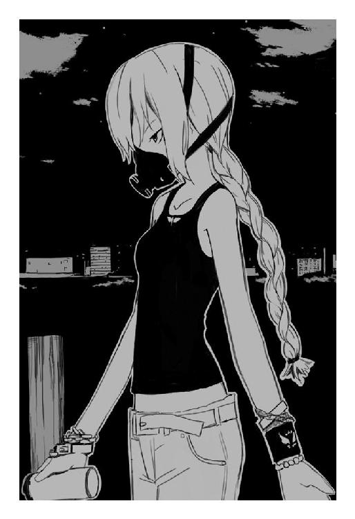
「────」
そこで鈴音は理解する。
彼女も、肉人形も、自分を助けてくれる英雄なんかじゃない。
もう──どこにも、逃げ場なんてないって、理解してしまった。
グリコは眠っていた。眠らせたのだ。考えこみすぎて心が砕けてしまいそうな、情緒不安定な子供は寝かせてしまうに限る。眠れば、脳の機能が勝手に腐りかけた部分を癒し、病気になった心を治してくれる。
足りないのは、睡眠だ。
偽原火乃はそう思う。
だから眠ってもらった。定期的に通院していた火乃は、医者からよく効く睡眠薬を処方してもらっていた。この手の薬には耐性がないらしく、グリコは布団で丸まって、枕を抱きしめて眠っている。
「──ごめんなさい」
つぶやく声は、火乃のものではなく。
枕を抱きしめて震える、小柄な少女のものだった。
「──ごめんなさいごめんなさい生きていてごめんなさい......」
「謝らなくてもいいの」
火乃はつぶやいて、グリコの頭を撫でる。広がりきったオオカミヘアは寝汗で濡れていて、仄かに熱い。
火乃は優しく寄り添って、グリコに声をかけている。
「あなたは──何も悪くないのだから」
「ごめんなさい」
もちろん言葉は聞こえない。グリコは苦しそうに何度も何度も謝っている。
火乃は嘆息し、壁にかけられた秒針も分針もスプーンでできた時計を見る。グリコが珍しくものすごく欲しそうにしていたので買ってあげたのだ。なんでこう彼女はスプーンをやたら愛しているのだろうか。火乃は知っている。グリコは一人のとき、たまにスプーンを見つめてうっとりしている。スプーンフェチか。まぁ趣味は人それぞれなので無理に矯正したりしないが、どうかと思う。
「樹夫さん──遅いわね。いつもこの時間には帰っていたのに」
首を傾げ、つらつらと独りごちる。
「仕事が長引いているのかしら」
多分そうなのだろう。寂しい。彼がいないと、火乃は不安になる。
どうしたらいいかわからなくなる。
グリコはやがて涙を浮かべ、嗚咽をあげながら寝言を漏らす。
「殺して......。殺して。殺して殺して」
悲痛な、起きているときには考えられない弱々しい声。
「死なせて。死なせて──」
何がグリコを苦しめているのか、火乃にはわからない。
毎夜、彼女が同じように、悪夢に魘されているのは知っている。
可哀想だと思う。けれど──火乃は、夢の中まで助けにいけない。
グリコの髪を撫でながら、火乃は考える。
どうして、本当の子供でもない彼女を、こうも愛しく感じるのだろうか。そもそも、この感情は本物なのだろうか。全てが偽物の自分が──誰かを愛することなどできるのだろうか。子供。嘘の子供。精一杯、愛するふりをしていたけれど──。
その気持ちは本物なのか。
「............」
火乃は無言で、きり、と腕を上げる。
例えばここでグリコの首を思いっきり絞めたとする。
「............」
首筋に添えてみた指には、しかし力を込められない。触れているグリコの頸動脈は、休まずに熱い血潮を循環させている。
生きている。
しかし動きを止めた火乃とは裏腹に、眠っているグリコはその行為を促している。
「......殺して」
「............」
火乃はグリコの首を握りしめ、沈黙して考えている。
どうして、指に力が入らない。
どうして、自分は動けない。
「グリコ」
どうして、自分は泣いている。
わからない。樹夫がそばにいない。
「殺して」
つぶやくグリコの目元にも、涙の雫が光っている。
カーテン越しに差しこむ夕暮れの光が、静止した二人を優しく包んでいる。
「......泣かないで。グリコ」
強い疲労とともに首筋に置いた手を解き、火乃は自分も泣きながら、知らずに想いを口にする。
「お母さん、ここにいるよ」
偶然か、グリコは安堵したように息をつき、しばし悪夢から逃れて──穏やかに寝息をたて始める。
「わたしは──わたしは」
火乃は耐えられなくなって、顔を抱えると苦悶の叫びをあげた。
「わたしは......！ 殺せないよ......！」
涙が溢れて止まらない。この涙と、この想いだけは、偽物でできた火乃の──唯一、真実だと思えるもの。
静かな閨は、ただ寂しく、偽りの親子を包みこんでいた。
鈴の音が聞こえない
決着は、呆気なかった。
相手にもならなかった。手長鬼は、美名に驚くほど簡単に敗北してしまった。
自分の両足を折り、肩を砕き、恐怖を刻みこんだ化け物のような少女が、まるで抵抗らしい抵抗もできず──否、抵抗を許されず。
「────」
よく理解できなかったので、鈴音は思いだそうとする。
まず、何か肉人形に語りかけようとした美名に、危険を感じたか手長鬼が襲いかかった。例の見えない強力な拳で、美名を恐らく殴り飛ばそうと。
けれど、その行為は、いともあっさりと失敗してしまった。
美名は優雅な表情で半歩だけ避けて拳をかわし、手にしていたスプレーを押すと──さぁ、と銀色の霧を撒いた。
瞬間、手長鬼の表情が変わったのを覚えている。
あれ？ という顔で、何か必死に力をこめて。叫んで。
それでも何も起こらなくて。
そんな彼女に悠然と歩み寄り、美名は強烈な前蹴りをぶちこんだ。それだけだった。多分──それだけだったと思う。
腹部に強烈な打撃を受けた手長鬼はもんどり打って何度か凸凹道を跳ね、それっきり、気を失ったのか動かなくなってしまった。
手長鬼が弱かったわけでは決してない。相手は、十人殺しの手長鬼。強烈な超能力をもつ化け物に近い存在。
そんな彼女を──邪魔な埃でも払うようにあっさりと沈黙させ。
「見えないものを見るのはね、性能的に得意なの」
にっこりと目元だけで笑い、殺原美名は冷酷な声で囁いた。
「相性が悪かったわね。手長鬼──まぁ、あなたのことはどうでもいいわ。これでもう無害だし。もうちょっと、泳がせて色々と探りたかったけれど──成りゆき的に無理のようね」
理解できない言葉を吐いて、美名は肉人形に向き直る。
その性別不能な肉の塊は、すでに手長鬼から受けた肉体の欠損を完全に回復させていた。おぞましいその外見にも美名は表情を動かさず、足下にへたりこんだまま、恐怖に震える鈴音を無視して語りかける。
「さて──肉人形、弁解を聞かせてもらおうかしら？ どうして、私の命令を無視して、宇佐川鈴音を守ろうとしたのか。返答によっては──否、うふ、みなまで言う必要はないわね......？」
その言葉がどれだけの恐怖を肉人形に与えたのか、それはびくりと反応し、意外なことに──人語でもって応えた。
「はい。同じく手長鬼も宇佐川鈴音の欠片を狙っているようでしたので、先に彼女を排除しなければ、あちらに欠片を奪われる可能性があると判断したからです」
「ふん──？」
美名は怪訝な顔をする。
「──欠片を狙った？ こんなもの、私たち以外に欲しがるやつがいるかしら。見たところ手長鬼も欠片を保持している──二つ以上の欠片を所有していても、受容器が破裂して悶死するだけなのに。ま──欠片の性能を勘違いしていたのかしらね？」
何かしら納得して、美名は癖なのか独り言のようにつぶやく。
「肉人形が壊れたのかと思ったけれど、どうやら思いすごしのようね。そもそもただの肉の塊が──誰かを守ろうとか、そんな気持ちを抱くわけもないし」
「............」
肉人形は沈黙している。その姿がどこか人間めいて見えたのは鈴音の気のせいだろうか。考えている余裕もなく──痛みで思考が飛びそうになる。気持ち悪い。理解できない状況と、身体を蝕む酷い激痛。
そして──恐怖。
目の前の女性に対する、深い深い恐怖が吐き気を誘発する。
「さて」
美名は思索をやめたのか、鈴音を見つめてにっこりと笑う。
「こんばんは。さっきは電話をありがとう。あなたを見つけたのは良いけれど、手近に電話が見つからなくてね──まぁ結局、見ていられなくて出てきてしまったのだけど。あなたのことは確実に処理できるから、結果万全というところかしらね？」
フシュー、と言葉のたびに美名の口からは息が漏れる。
何か違う生き物のようだ、と鈴音は思った。体構造が、思考回路が、全てが──違う。それはそばに立つ肉人形よりも、ずっとずっと異質な存在だった。
どうして、最初に会ったとき気づかなかったのだろう。このような異常に。
彼女は──危険だ。
ヘビよりも、手長鬼よりも、誰よりも──危険だ。
殺原美名は微笑んで、鈴音に言葉を投げかけた。
「尋ねるわね。正直に答えると、そのぶん長く生きられるという感じだから」
その言葉にはきっと嘘がない。彼女は、顔色すら変えずに自分を殺すだろう。林檎を食べた不老不死の自分すら、きっと彼女は苦もなく始末してしまうのだと思う。
美名は、きっと、そういう生き物だ。
「何を──」
「一ヶ月前」
美名はにっこりと笑って、静かな声で問いかけてくる。
「何があったか──教えて頂戴」
賢木。グリコ。
鈴音は大切なひとたちの顔を思い浮かべる。
あぁ──きっと、もう会えない。帰れない。
彼女に、出会ってしまった。
相沢梅は、手先が不器用な少女だった。
料理をすれば鍋底を焦がし、謀反を起こした包丁に指先は壊滅状態。工作をすればまともには完成せず、風が吹いただけで壊れる欠陥品ができるだけ。
何をやってるんだ、指。
いつでも不満だった。
その不満を解消するために意地悪な神様が送りこんだのは。
「はーれーたーよーるーはー♪」
歌いながら現れた、気が狂ったような顔をした強盗。ただの強盗。新聞記事にはなるけれど、一週間もすれば忘れ去られてしまうどこにでもある事件。その強盗は梅の両親を殺し、殺人が癖にでもなったのか、最後に残った梅はゆっくり殺そうと梅を押し倒すと血まみれの包丁を振りあげた。
指先から、刻まれて、何度も何度も気を失って。
泣き叫んでも許されなくて。誰も助けてくれなくて。
転がっている両親の亡骸。次々と切断される指、手──腕。
肩から腕を切り落とされて。
あぁ──。
後は、よく覚えていない。
気づくと、自分は万能の腕を手にいれていた。
無我夢中で強盗を八つ裂きにして、意識を失って。
目を覚ました自分に、見知らぬ男が言ってくれた。
『ようこそ！ 俺たちの世界へ！』
その瞬間、きっと──自分は理解していたのだ。
もう戻れない。自分は──。
──。
──......。
「.........あ」
目覚めると真横に太陽があって、紅い夕焼けが世界を鮮やかに染めあげていて、手長鬼は太股や腹部に疼痛をおぼえつつも、また負けたのか──と思いながら立ちあが──。
──？
「──あれ？」
起きられない。
おかしいなと思って、手で踏んばって起きようとする。
感覚がない。
「────」
手長鬼は呆然とした顔で、何度も何度も試みた。
「──えい。えい。立とう。立たなくちゃ。うん、立たなくちゃ帰れないし」
感覚がない。
感覚がない。
感覚がない。
「──えい。うんしょ。立って帰ろう」
──腕が。
「帰る──ゼキくんのところに」
──腕が、ない。
............。
沈黙し、手長鬼は嗚咽を漏らす。
「──ひぐ」
涙が見る見るうちに溢れ、頬を流れて落ちていく。
「手が。手が。手がぁ」
嫌だ。すごく嫌だ。手が、手がなくては、長くて強い手がなくては、自分は手長鬼じゃなくなってしまう。また弱い、不器用なだけの相沢梅に──戻ってしまう。
──そして藉口に捨てられる。
「嫌ぁ！ やだやだぁ！」
絶望が押し寄せてきて、手長鬼はぼろぼろと泣いた。
「やだよぅ......」
化け物になってしまった自分に、居場所を与えてくれた藉口。自分を受けいれ、賞賛し、ともに生きようと言ってくれた藉口無法。
彼のところに帰るのだ。
帰って褒めてもらうのだ。
それがいつものことだった。手長鬼の、唯一無二の幸福だった。
なのに。
感覚のない両腕が、静かに否と告げていた。
──手が。
「手が、無くなっちゃった」
虚ろな声でつぶやく、手長鬼の頭上──凸凹道の奥。
ざり、と足音がした。
「──ゼキくん？」
心臓が止まるかと思って、手長鬼は目をぎゅっと瞑る。
嫌だ。
嫌だ嫌だ嫌だ。
藉口に捨てられるくらいなら、このまま死んでしまったほうがいい。藉口に要らないと言われるのは、何よりもずっと怖かった。
手長鬼は泣きながら震え、全てが崩壊する恐怖のなかで懸命に謝った。
「ごめんなさい──ごめんなさい。捨てないで。捨てないでください」
「この世には──」
瞬間。
聞き覚えのない声に手長鬼は目を見開く。
「──え？」
覗きこんできた顔は、どこかで見たような、前髪のせいで人相が化け物じみている一人の男性だった。彼は、懐から携帯電話を取りだすと番号を押し始める。
「──本当に、憂鬱なことが多すぎる」
「あなた──」
声をかけるも、男は名乗らずただ気怠そうな顔で問いかけてくるのみ。
「手長鬼。手が出せないというのは本当です？」
「あ......」
傷をほじくられ、手長鬼は歯噛みして涙を堪える。しかし無理で、手長鬼は声をあげて泣き崩れてしまう。
それを見て何か納得したように頷くと、繋がったらしい通話に彼は事務的に告げる。
「あー、どうもご苦労様。嘆木です。嘆木狂清。あぁ、そうそう。今から場所を言うので急いで来てくださいね。うん？ そうですねぇ、救急車も。たぶん手遅れでしょうが」
手長鬼は理解する。
どうやら彼は警察の一員らしい。以前は警察なんかてんで怖くなかったので無視していたが、今の状態では間違いなく簡単に捕獲される。
これで終わりか──と手長鬼は思う。
きっと、能力の消えた自分を、藉口は助けてくれないだろう。
悄然としていると、当たり前のように嘆木は言った。
「あぁはい。死んでるんです。女の子が一人ね」
「.........？」
死んでいる？ 自分は死んでいない。誰が死んでいるというのだろう。
「はい。見たところ──両足を折られて、肩を砕かれて」
それは。
「心臓を抉られて、殺されています」
誰の──。
悪夢に魘されて、眠れない夜があった。
鈴音と離れて生活を始めてから、ずうっと悩まされてきた悪夢。それはこれまで殺してきた人間の姿だったり、無数の眼球が蠢く光景だったり、一定はしなかったけれども、酷く苦しくて──。
あれは、そんな夜。眠れなかった夜のこと。
目を覚ました眼球抉子は、偽原夫妻と暮らす自宅、暗い自室で目覚めた。柔らかなベッド。空柄の掛け布団。スプーン針の時計を見ると深夜の二時を指していた。
「............」
寝汗が酷く、気持ち悪くて、グリコはシャワーでも浴びようと音をたてないよう扉へと向かった。火乃と樹夫を起こしてはいけないと思ったのだ。
あの二人。本当に甘っちょろくて、気が抜けるほど無邪気な二人を、まだ親と思えるかどうかはわからない。そもそも、グリコは親というものがどういうものなのか、今をもってしても理解できていない。
それを正直に彼らへ伝えたら、簡単じゃない、と二人は笑った。
──親っていうのは僕たちだよ。
理屈なんか通じない馬鹿。呆れて、グリコも考えないようにした。ちょっとずつ、ちょっとずつ、学んでいけばいいのだと思う。彼らと一緒にいるのは、別に不快じゃない。
そう思って、現状を受けいれかけていた夜のこと。
グリコは、居間で、二人が小声で会話をしていることに気づいた。
悲痛な声だった。能天気な彼らには似合わない、哀しそうな声。
──わたしは。もう駄目。もう嫌。
火乃の声。やはり──自分みたいな化け物か人間かもわからない子供の世話なんか、彼女らにとっては重荷だったのだろうか。考えて、自分でも理解できないことに激しい儚さに襲われて。
しかし。
──わたしには殺せない。
そう、つぶやいていた火乃。それに応えた樹夫は。
──火乃さん。駄目だ。もしも殺すのを拒絶するなら、僕たちがあの方に殺される。
──殺されたっていいじゃない。樹夫さんだって、どうせグリコちゃんを殺せないくせに。わたしよりもずっと、グリコちゃんを大切に想っているくせに。
火乃の声は泣いているようだった。
──それにどうせ、殺されるっていったって、とっくにわたしたち──。
そこで目が覚めた。
過去の映像を夢として見ていたらしい。おかげで悪夢は見なかった。ただ気持ちの悪い消化不全の思考だけが脳内に居座っていて、どうにも気分が悪く、グリコは夢の中と同じように暗闇で目覚めた。
頭が酷く重い。
あの会話は──あの夜の、二人の会話はなんだったのだろう。グリコを殺すとか、殺されるとか──意味がわからない。とにかく、何か気持ちが悪く、グリコは鬱々と天井を眺めた。
学校を休んで、鈴音の電話すら拒絶し。
ひたすらに殻にこもり、部屋に閉じこもっていた。
火乃や樹夫の気遣いを無視し、食事に呼ばれても外にでないで。
「あぁ──なんなんだろうな、全く、グリコは、あんまり弱くて嫌になる」
そこに選択肢がある。
それは藉口無法という、狼の目をした男が突きつけてきた選択肢。
このまま人間として生きていくか。
それとも化け物として生きるのか。
もしも鈴音や火乃、賢木や樹夫、大切なひとを守りたいと思うなら。
「グリコが近くにいるのは危険──か」
自分は、自分の残酷さを知った。十人殺しの手長鬼と変わらない、むしろ彼女を凌駕した、相手の身体を傷つけたいと思う歪んだ心。眼球抉りの化け物が、自分の本当の姿だ。
鈴音たちには喋れない過去がある。きっと知れば軽蔑し、自分を怖がるはずの記憶が。グリコの抉ってきた眼球の数は、たぶん鈴音たちが想像しているよりも多い。
──鈴音。
「グリコは、化け物だ」
ベッドから起きあがり、壁に頭を寄せて、グリコは低く──呻くようにつぶやく。
「三百年ほど前、生きるのが嫌になって、自棄になって、手当たり次第に人間を虐殺したことがある。鈴音、おまえと同年代の子供もいた。物言わぬ赤子もいた。愛しあった夫婦もいた。それほど大量の幸せを抉った、はは、眼球抉りの化け物が......」
グリコは一筋の涙を零す。
「幸せになんかなるような、価値があるわけないんだ......！」
一ヶ月前。自分の大切なひとになってくれると言ってくれた人間がいる。しかし、自分にはそんな人たちのそばにいる資格がない。たくさん奪ってきたのだ。たくさん殺してきたのだ。いつ、あのころのように自棄になって、鈴音の眼球に手を伸ばすか。
「鈴音、賢木」
旅にでよう。
「......グリコはおまえらが好きだった」
遠ざかろう。ここは苦しい。この幸せな世界は、グリコには酷く息苦しい。学校とか、家庭とか、当たり前の幸福のなか、平凡に生きていくのは──グリコみたいなのには苦しいのだ。
彼女たちに甘えてはいけない。
遠ざかろう。
鈴音はきっと、賢木が守る。自分は必要ない。彼女らに依存して──どうせ最後は不幸にしてしまう。
「不幸になるのは、グリコだけでいいんだ......」
人間と化け物は、一緒になんか暮らせない。
自分は、化け物だ。
手長鬼と同様に。
「............」
決めると、不思議なほどに心は落ちついた。
この瞬間に──きっと、グリコの心は決まっていた。
そうして眼球抉子は、その選択肢を選んだ。
必要なものはスプーン。また逆戻りだ。当て所なくあちこちを彷徨って、林檎の保持者を見つけ、蟲からその人物を守り──。
自己満足に埋没し、だんだん何も考えなくなる。
それでいい。それがいい。もう疲れた。化け物に戻りたい。
扉を開くと奥は暗く、誰もいない。都合がいい。火乃や樹夫には悪いが、これでお別れだ。最後に少し冷たくして、傷つけてしまったかもしれない。申し訳ないなと思う。けれど──最初から無理な話だったのだ。
心の中で謝罪して、彼らが心配しないよう、せめて置き手紙でも残そうと電話機の近くにあるメモ帳に手を伸ばし。
「────、」
グリコは、火乃が床に倒れているのを知った。
「火乃？」
動かない。近づいて、エプロンを着たままの彼女を揺さぶってみる。まだ温かい。生きてはいる。しかし──いったいどうしたのだろう。このあいだまでは元気そうだったのに。
舌打ちし、グリコは天井を見上げる。
どうしよう。どうしよう。あぁ思考がうまく定まらない。
「──そうだ、救急車」
怪我をしたり病気だったり、緊急事態に陥ったとき、救急車を呼べば無料で病院まで運んでくれるんだとか。それは火乃が教えてくれたこと。
頷き、グリコは電話機へと向かう。
必死で番号を押して、これが最後だ、これが終わればお別れだと自分に言い聞かせる。
やがて辿りついた救急車に、火乃の付き添いで乗りこんで。
向かった先の病院で、グリコは──最悪の事実を知る。
その知らせを聞いた瞬間、賢木は拳銃弾を全て撃ち尽くして最悪の知らせを告げた電話を惨殺し、人類の限界を超えた速度で学校を飛びだした。仕事は終わっていないと止めようとした教務主任を鮮やかに殴り飛ばし、たまたま学校の近くを走っていた車を腕力で止めた。弾は撃ち尽くしていたので運転手を拳銃で殴り倒し、車を奪うと一直線に連絡のあった病院へと向かった。
そこから、記憶は完全に消滅している。
ただ頭は真っ白で、世界も真っ白で、堪らない怒りが全身を駆け抜けて、誰彼構わず轢き殺したくなるので自制心を要した。道路交通法を色々と無視した運転で病院に辿りつくと、告げられた病室へ乱暴に駆けあがった。
暗い。
暗い──病室だった。
賢木は思考せずただ眼前の光景を理解する。
広い病室。柔らかそうなベッド。生命維持の機械のようなものは置かれていない。当然だろう──そのベッドに寝かされている賢木の愛した少女、宇佐川鈴音はすでに青ざめていて、死人の顔で、実際──死ん
────。
──。
──────。
「賢木」
小さな声が、背後からかかった。
賢木は凍るような無表情で振り返る。
そこに誰かが立っている。背景は窓で、窓の外は満月の夜で、逆光が眩しいから人相は判然としない。ただ理解した。神様ではない。神様ではないなら、宇佐川鈴音を助けられない。
「どけ」
短く、影はそう告げた。
賢木は横たわった鈴音の足下で立ち尽くし、動かず、応えない。
影はグリコで、表情はまだ見えなくて、振り返った賢木の胸元あたりで顔を俯かせ。
「どいて......」
掠れた声でつぶやいた。
肩が震えている。声も震えている。彼女は──。
「ごめん賢木。ごめんなさい」
──謝っていた。何故か、無表情のまま涙を零して。
「......どいて？」
そして三度目の言葉を告げる。
賢木は石のように重い両足を動かし、彼女に道をあけた。空気は冷たく、世界は嘘くさくて、何も音がしなかった。
「さっき調べた。鈴音が持っているはずの林檎が消えている。きっと──誰かに奪われたんだろう。おそらく、誰かに酷く痛めつけられて、自ら林檎を差し出させられて」
グリコは鈴音のそばまで歩くと、手をかざして目を閉じた。
光。淡い光が、鈴音の身体から溢れる。
「一ヶ月前」
掠れて、小さくて、聞きとりにくい声でグリコがつぶやいた。背を向けているので表情は見えない。
「グリコは、ヘビから二つの林檎を奪った。ヘビ自身の林檎と、ヘビが鈴音から奪った林檎だ。そのうちの一つを鈴音に宿らせる」
グリコの肩は震えている。鈴音に触れた彼女の指先から淡い光が生まれ──。
「──どうして？ なんで、生き返らない!?」
光はすぐに萎み、しかし鈴音は蘇らない。
奇跡の林檎も宇佐川鈴音を救けることができない。
「どうして......」
グリコは立ち尽くして、拳を血が滲みそうなほど強く握りしめた。
「どうして......！ グリコは気づかなかった......！ はは。ははは、自分の悩みに酔いしれて、鈴音の危機にも気づかずに──」
珍しく声をあげて笑った彼女は、動かない鈴音をひとしきり眺め、全ての感情が欠落した顔でこちらを振り返った。奥まで暗い銃口の瞳。紅い色が滲んだその瞳には、何もかもを破壊し尽くすような感情が燃えていた。
「賢木──グリコを殺せ。四肢を切断して殺せ首を斬り落として殺せ眼球をえぐって、脳を掻き混ぜて殺せ......！ それでも死なないようなら、全身を磨り潰して、焼き尽くして、この役立たずな身体を残らずこの世から消してくれ！」
半狂乱になって、グリコは取りだしたスプーンを握りしめると自分の顔に向けた。残酷に光るその器具は、真っ直ぐにグリコの瞳へと向いている。
「役立たず......！ こんな何も見えない眼球なら、鈴音の危機にも気づかない目玉なら、むしろ要らないよ......！」
本気で己の目すら抉ろうとするこの少女に、賢木は低い声でつぶやいた。
「やめろ......」
そして彼女の手を捻りあげると、スプーンを奪う。頭には空白があって。心には絶望があって。火花が散った思考回路は、緩やかに自滅へと溶解を始めていた。
グリコは止められたのが気に食わないのか憤怒の形相でこちらを睨み──。
「......やめてくれ」
──つぶやく賢木の表情を見て、俯き、表情から力を抜いた。
静寂が絡まりながら心と身体を這い回り、その静寂すらも耳障りな気がして、賢木は言葉にならない言葉で吠えると壁を殴りつけた。何度も何度も。
それで何かが救われるわけでも、ましてや鈴音が生き返るわけでもない。
心が晴れることもない。
それでも──。
「探すぞ」
賢木は、低い声で宣言した。
守ってみせると決めたのだ。一年前の死の海で、宇佐川鈴音という少女を。前提以前に戻っただけだ。何も要らない。ただ一心に、鈴音を再び以前と同じ生活へ戻すことを願う。
賢木は裂帛の気合を瞳に宿らせて、グリコの肩に手を置いた。
「──探すぞ。鈴音を助ける方法を。まだ何かあるはずだ。ここで諦めたら、本当に全てが終わってしまう......。神だとか、蟲だとか、聖園の林檎だとか──。ここはなんでも有りの世界だ。閣下だってきっとまだ助ける方法がある......！」
それは儚い、蜘蛛の糸よりも頼りない希望だったが。
賢木はそれに縋るしかなかった。グリコも頷いて、すぐ至近、正面から真っ直ぐに賢木の瞳を見つめてくる。
そこにはもう自暴自棄だった先ほどまでの雰囲気はなく、ただ強い光に溢れていた。
「──そうだな......」
強い光をそのままに、これまでにない台詞を吐く。
「先生。ありがとう──希望が、少しだけ見えた」
「こういうときだけ先生と呼ぶな馬鹿」
「すまん。何故だろうな──突然、おまえを先生と呼びたくなった」
グリコは綺麗に微笑んで。
不意に、振り返る。
「けれど賢木。おまえはくるな」
「どうして──」
くるなって？ 賢木は逆上しそうになる。誰に向かって言っているのだ。他の誰が止まっても、鈴音のためならばどれだけ危ない場所にでも足を踏みいれるのが賢木愚龍なのだ。
それを理解していないわけはない、それでもまだ、グリコは意志を曲げずに真っ直ぐにこちらを見る。
「賢木。何度も──この言葉を言わせないでくれ」
顔を背け、病室の扉を開く。
「......見ないで。これからグリコは化け物に戻るから」
この扱いは酷いと思う。
首輪を嵌められている。
「............」
煙草の匂いが染みついている狭いこの部屋は殺風景で、ところどころに地図だとか、山の写真だとかが適当に置いてある。山登りが趣味なのだろうか。似合わない。考えながら、手長鬼は捨てられた子犬のように身体を丸めて周囲を警戒している。
治療眼帯で隠していた眼球はほぼ再生を終えたようで、視界も明瞭なものに戻っていた。
ここは、自分を捕まえた髪の毛のお化けみたいな刑事の部屋だ。四畳間で、他の部屋はトイレしかなくって、設置されている簡易キッチンには洗いたての食器がつまれている。きちんと掃除もされているし、どうもあの刑事は外見に似合わず几帳面のようだ。
部屋の照明は点いている。
部屋の主は、どこにもいない。
「ゼキくん......」
自分を縛めている首輪を破壊しようと、『手』に力をいれるがやはり感覚がない。嘆息し、手長鬼は心細くなって目に涙を浮かべる。自分の全て。唯一の誇り。両腕が消えてしまったのだ。哀しい。同時に──拠り所がなくなって儚い気持ちになってしまう。
こんなふうになった自分を、きっと藉口は必要としない。
捨てられてしまう。
思うと──さらに寂しくて切なくて涙が頬を流れていく。
天使のような悪魔のような恐ろしい女に負けて、理屈はわからないが両腕を消されて、泣いていると、あの刑事に拾われた。刑事は警察のくせに自分を牢屋にぶちこんだりはしなくて、何かよくわからないことを言うと自分の部屋──つまりここ、まで手長鬼をつれてきて首輪で繋いだ。
首輪は露出した柱に適当に固定されていて、そんな程度の弱い縛めでも、手のない手長鬼には脱出することができない。しかしこれ、普通に縛られるよりも変な気持ちがする。というかこれは明らかに自分を犬扱いだ。むかつく。手長鬼は泣きながらも、うう、と唸って刑事を呪う。
これから、自分はどうなってしまうのだろうか。
牢屋に閉じこめられはしなかったけど、似たような状況だ。なお悪いかもしれない。あの刑事には何か手長鬼ですら寒気をおぼえる妙な感じがあった。何をされるかわからない。怖くなって、手長鬼は小さな声で助けを呼ぶ。
「ゼキくん......」
声は誰にも届かずに、壁で四散して消える。
手長鬼は冷たい畳の感触を味わいながら、ただ震えて状況が変わるのを待ちつづけた。
それからどれだけ時間が流れたことか。
ようやく泣きやんで、頬が乾燥した涙でヒリヒリし始めたころ。
「やぁ、遅くなってすみませんねぇ」
不意に扉が開いて、怪しい刑事が姿を見せた。手には何やら食材のようなものと、服とか、下着とかがつまった紙袋。しかもどうやら服や下着は手長鬼のもので、刑事は明らかに長期にわたって手長鬼を監禁する気まんまんだった。
血の気が引いていく。
「やれやれ......この外見だと子供服売り場をうろついただけで犯罪者扱いになるんですね。だがしかし、奥様たちがヒソヒソ通報したほうがいいかしらとか囁くなかを買ってきましたよ君のぱんつとか」
こいつ変態だ。
決まった。こいつ最悪の変態だ。自分は何かこいつに想像もできないような変態的行為をされるに違いない。
怯えて、手長鬼は背筋を緊張させると犬のように唸った。
毛ほども動じずに、変態刑事はクックックと嫌らしく笑った。
「まぁそう警戒せずに。警戒しようと何しようと今の君より僕のほうが強いんです。だったら、反抗的な態度を見せて僕を不快にさせるより、愛嬌いっぱいな態度で僕の機嫌をとっておいたほうがいいと思いますがね」
「............」
そうだ。十人殺し、観音逆咲町に死と恐怖をばらまいた手長鬼はもういない。ここにいるのは、蹲って震えているのは、普通の人間よりも弱い、両腕のない子供に過ぎない。
手長鬼は理解して、それでも心は折らずに精一杯の虚勢で相手を睨みつける。
「あなた──何？ 手長鬼をどうする気なの？ こ、こないで。近寄らないでよ。手長鬼はあなたの言いなりになんか絶対にならないんだから。変なことしようとしたら、噛みついて、蹴とばしてやる」
怯えと怒りを含んだ手長鬼の瞳を、髪の毛の隙間から、刑事は愉しそうな瞳で見返して笑う。
「クックック。まぁ安心してください。外見から誤解されますが、僕はとっても善良な一般人なんです。特殊な能力なんかないし、死ぬときは簡単に死ぬ」
そこでふと思いついたような顔をして、刑事は今さらのように言う。
「そういえば──名乗っていませんでしたね、僕の名前は嘆木狂清。刑事です。もっとも──連続殺人鬼を捕獲したのにその事実を報告せず、自室にこっそり隠している時点でその資格は無いも同然なんですがね」
語る声に手長鬼は応えないが、理解する。やはり彼は、警察に自分をつれていくつもりがないようだ。では──何が目的なのだ。疑るような目で、嘆木と名乗ったこの不気味な刑事を睨みつける。
「......何を企んでるの。クルキヨ」
「企む？ おやおや、何も悪いことをしようってんじゃありません。ただ──この世には、憂鬱なことが多すぎる。その憂鬱をね、ちょっとばかし晴らしてしまおうってだけのことですよ。相沢梅ちゃん」
「────」
いきなり口にされた本名に、手長鬼は表情を変える。
「──どうして」
「相沢梅。三年前、強盗事件に巻きこまれて生死不明の行方不明。生きていたとしたら、今年でようやく十一歳。両親はその事件で死亡。犯人の強盗も同時に死亡。ただ一人娘の梅ちゃんだけはどこにも見当たらなかったので、警察当局は必死になって捜索をつづけたが──今に至るまで、その消息はわかっていない」
つらつらと述べて、嘆木は奥の読めない笑みで言う。
「君が寝床にしていた墓石から辿ってみましたらね、まぁそういった憂鬱な事件が浮かびあがってきたわけですよ。確証はありませんでしたが──今の反応を見ると間違いがないようですね。相沢梅ちゃん」
「その名前で呼ばないで！」
手長鬼は震えて、必死にそれだけ訴えた。
嘆木は愉しそうににやにやと笑う。
「うん？ では手長鬼と呼べと？ 手のない君がその名前で呼ばれることが、どれだけ滑稽なことだかわからないではないでしょう」
「............でも」
手長鬼は俯いて、ぎゅっと瞑った目から涙を溢れさせる。
「でも手長鬼だもん。手長鬼じゃなきゃいけないんだもん......」
その様子に、嘆木は何を思ったか、深々と嘆息すると首を振った。そして買ってきたらしい食材を冷蔵庫に詰め始める。自炊をしているようで、弁当や惣菜ではなく野菜や肉といった原材料のみだった。何故かコーヒー牛乳を紙パックで三本も買っている。
「少し──気持ちを落ちつけるべきかもしれませんねぇ、君は」
言って、嘆木は当たり前のように言う。
「じゃお風呂に入りに行きましょ。どうせ、君ろくに身体を洗わない生活してたんでしょ？ さっぱりして、涙も血の匂いも落として、ご飯を食べて今日は寝ましょ」
「お風呂って──」
意外な提案だったが、手長鬼もそれにはちょっとだけ賛成だ。これまで、汗や血でべたついた身体は墓場に備えつけの水道で洗うしかなかったのだ。たまにはお風呂につかって、身体の芯まで温まりたい。
お腹もけっこうすいている。手長鬼は、まだ皮膚感覚や空腹感を失っていない。藉口の話では、林檎を手にいれた後、一回でも死ぬような怪我をすればそれらは急速に失われていくらしい。手長鬼は眼球抉子に眼球を抉られて殺されかけたから、そろそろそれらも消えていかなければならないのだが。
今はともかく、お風呂に入りたい。
「──お風呂に入らせてくれるの？」
「はいはい。けれど、この部屋には備えつけのお風呂がありませんからね。公衆の浴場になりますが、それでも宜しいですか？」
「え──」
公衆浴場。つまり銭湯。それは少し嫌だ。自分の、この両腕のない身体はそういう場所ではいつもより奇異の視線に晒される。
手長鬼の怯えるような顔に何か思うところあったのか、嘆木は柔らかく微笑んだ。
「大丈夫です。近くの銭湯の主人とは旧知でしてね、帰り際に立ち寄って、今日は一時間ほど貸し切りにしてくれるよう頼みましたから」
「あ──それなら」
表情に希望を戻す手長鬼を、突き落とすように嘆木は笑う。
「そうです。君、自分で自分を洗えないでしょう？ 僕がちゃんと隅から隅まで洗ってあげますから。そうです──男湯に怪しい刑事と少女が一緒に入っていても、その少女に首輪が嵌っていても、誰も気にしないんですねぇ──クックック」
「────」
手長鬼は瞬間的に硬直し、がばっと身を仰け反らせると首輪に繋がった鎖をじゃらじゃら鳴らして嘆木から遠ざかる。そんな手長鬼に愉しそうに嬉しそうに、変態刑事は近づいて、あっさりとその鎖を握った。
「あ」
「じゃ、行きましょう。梅ちゃん。銭湯へ向かう途中、誰にも見られなければいいですね？ これでも僕にも社会的立場というものがありまして──」
「へ。へ」
鎖の固定を外し、ぐいぐい引っぱり扉へ向かう彼に手長鬼は叫ぶ。泣きそうな顔で、世界に絶望した顔で。
「変態────ッ。変態のひとがいる────ッ！」
「こらこら。妙なこと叫ばない。近所の方に誤解されたらどうするんですか」
「誤解してもいいから誰か気づいて助けてよぉ──ッ！」
絶叫する手長鬼だが、残念なことに銭湯に辿りつくまでの五分間、救い主となる通行人は一人も現れなかった。
それから三十分ほど手長鬼にとっての拷問がつづいた。抵抗虚しく銭湯までつれていかれて、銭湯の主人は盲目らしく異常な二人組にもちっとも気づかず普通に応対してくれて、ぐいぐい引っぱられるままに男湯まで引っ立てられて。
脱がされて。洗われて。湯船に放りこまれて。
............。
手長鬼は屈辱に身を震わせていた。
手が。手が戻ったら。真っ先に嘆木を殺してやる。全身の皮を剥いで四肢を切断して、心臓を抉って悶え死ぬまで容赦してやらない。
見られた。全て見られて、おまけに洗われた。藉口にも見られたことなかったのに。お嫁にいけないではないか......。頭がくらくらして、思考は全く像を結ばず、ただ恥ずかしくて情けなくて消えてしまいたくて、手長鬼は真っ赤な顔で湯船に口元までつかっている。
『味の湯』。そんな調味料みたいな名前の、古式ゆかしき一般的な銭湯だった。遊園地じみたスーパー銭湯が主流の現代、このような普通の銭湯はあまり流行らない。設備というのか、特別に変わったお風呂もなく、あまり広くない浴槽に申し訳程度のサウナ、といった感じだった。
奇妙に天井だけが高く、上を見ると湯気が蜷局を描いて昇っていくのが見える。その光景は綺麗で、手長鬼は羞恥心を鎮めようとただ黙って眺めていた。
嘆木はどこ吹く風で、自分の身体を洗っている。口ずさんでいる鼻唄は生意気なことにビートルズ。変態不気味刑事のくせに。ゲゲゲの鬼太郎でも歌っていればいいのだ。
思いながら、手長鬼はちらちらと嘆木の身体を見ている。
──綺麗だった。
身体だけ見れば、引きしまった長身に、適度についた過剰ではない筋肉。綺麗だと思った。思って、手長鬼は何を考えてるんだとさらに紅潮して湯船に沈んだ。
熱い、全身に染みてくる湯。生き返った感じがする。
考えるのは、藉口のこと。そして自分から全てを奪った、あの天使のような悪魔のような女のこと。
女の、蜂蜜のような声とか、優しそうに見えてその奥に冷たさを隠しもっている瞳とか。思いだすだけで背筋に寒気がはしる。怖くて、こうしているうちにもあいつが襲ってきそうで、手長鬼は顔をあげ、歯を噛みしめると深く嘆息した。
「なのに──どうして」
彼女を、藉口と似ているなどと思ってしまったのだろう。
自分を助けてくれた藉口。
自分を絶望に追いこんだ女。
ぜんぜん違うのに──どうして、同じ種類の生き物だと思ってしまったのだろう。
「──梅ちゃん、首までお湯につかっていると健康に悪いですよ？」
ざぶり、と嘆木がなんでもないように手長鬼の隣に入ってくる。ざざざざ、と瞬間的に遠ざかって、手長鬼は思考をいったん棚上げすると大声で叫んだ。
「う、うあ。クルキヨ！ これ以上、手長鬼に近づいたら酷いからね！」
「？ そんなに大声をださなくても二人だけだから聞こえますよ？ クク、僕、嫌われた？ どうもねぇ──僕の愛情表現は、誰かの心を不快にする。きっとこれはみんなの心の造りが悪いんですねぇ。この世には──憂鬱なことが多すぎる」
むかつく笑みを浮かべる嘆木狂清。
その顔を見て、手長鬼はぎょっとする。
「あれ──クルキヨ？」
「うん？ 僕は嘆木狂清ですよ？ どうしました？」
応える彼の──その顔は。
いつも表情を隠していた髪を後ろで結び、素顔がこちらに晒されていた。その顔は、手長鬼が一瞬だが見とれてしまうほど端麗で──。
「いや、誰？」
手長鬼は、思わず問いかけてしまった。
嘆木は首を傾げ、何を思ったかこちらにざぶざぶ湯をかきわけて近づいてくる。
「近眼なんですか？ 見えてます？」
「わぁぁ近づくなって言ってるでしょ!?」
派手な頭突きで変態刑事を撃退し、自身もかなり痛くて手長鬼は呻く。しかし、髪を上げた嘆木がここまで美形だとは思わなかった。じゃっかん好みな顔立ちなのが負けた気分である。
嘆木はしばし湯船に沈んでいたが、やはり骨の抜けたような動きで体勢を上げるとぼやいた。
「ぁ痛たた......。暴力反対。どうも人類はね、話しあいで問題を解決できる生物っぽいですよ？」
「話しあいをして欲しかったらこっちのことも少しは考えてよ馬鹿！ 恥ずかしいっていうのに！」
叫んで、のぼせて息切れして、手長鬼は深く──長く嘆息する。
「あぁ、もう。どうしてこんな状況に」
藉口のところに帰りたい。心からそう思う。藉口は、自分にこんなに接近してくることはなくて、ほとんど会話もしてくれなかったけれど。
そういえば誰かと、こんなふうに気兼ねなく喋ったのは何年ぶりだろうか。手長鬼ではなく、一人の人間として。思い──首を振り、まだこの男は信用できない、と手長鬼は心に銘じておく。世界で信じられるのは、自分と藉口無法だけ。
他人は怖い。いつ──自分の両腕を切り落としたあの強盗のように、自分に対して牙を剥くかわからない。
思っていると、不思議なことに、彼は手長鬼の思考と同じようなことを口にする。
「あぁ──こんなふうに、誰かと楽しく喋ったのは久しぶりですねぇ。ま──君はまだまだ僕に打ち解けてくれないみたいですが」
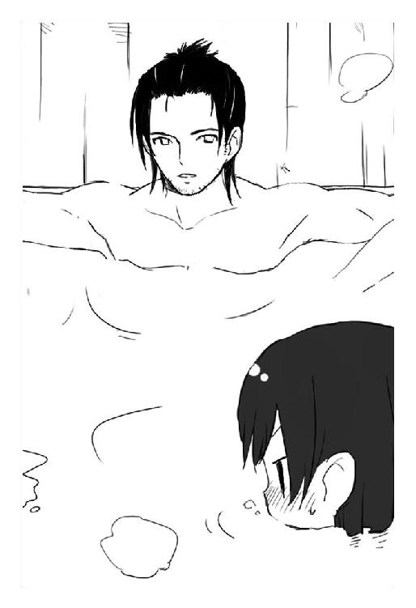
笑って、憂鬱刑事はこちらを見る。
長い前髪に隠されていたその瞳は静かで、射るようで、どこか恐ろしい。
「さ。それじゃ、人類らしく話しあいの時間です。僕もね──ただの酔狂でこんなことをしているわけじゃない。十人殺した手長鬼を隠していることが知られたら免職、どころか実刑判決をくらってもおかしくないですしね？」
そうだ。手長鬼も表情を引きしめる。裸でいるのを恥ずかしがっている場合ではない。この男がなんの目的で自分に接触してきたのか。それを把握しないことには居心地悪くて落ちつかない。
そうだ。
手長鬼は嘆木を見る。嘆木は小さく頷いて。
「この世には──憂鬱なことが多すぎる」
何度目かも知れない、口癖なのだろうか意味深なことを言った。
「しかし──懐かしいというか、傷がほじくられるというか、梅ちゃん、僕の恋人もね──身体的に不自由な女性でした」
嘆木はこちらを見る。裸を見られるのが嫌で、濁ったお湯に首までつかった手長鬼の両肩。そこは、凸凹な切断面をそのままに、林檎の力で無理やり再生した皮膚で覆われている。林檎を手にいれると、普通は切られた両腕も再生するという。しかし手長鬼の林檎は何故だか両腕を元に戻すことを嫌った。
その代わりに得たものが──誰よりも強い見えない両腕。
自分はその腕があったから、まだ人並みに生活することができたけど、その能力がなくなった今になってわかる。身体の一部が欠落しているというのは、とんでもなく不自由なのだ。手先の器用さを数値化してみるとする。器用な人間はその数値が１００で、どれだけ不器用な人間でもたぶん50くらい。それが、手先が欠落していればどうしようもなく０なのだ。その不利な条件を克服するのは難しい。
見ると、嘆木は哀しそうな顔をしていた。
「一ヶ月前。隣町で巨大な怪物が暴れたことを知っていますか？」
巨大な怪物。
それはきっと、藉口が言っていた『夢界獣』という化け物だろう。それに興味をもって事件を調べていくうちに宇佐川鈴音の名前に行きついて、林檎を大量に蒐集することが目的だという藉口に彼女の林檎を奪えと命じられ。
............。
失敗して。
「僕の恋人は、その怪物に踏み潰されて殺されました」
「.........？」
一瞬、意味がわからなくて嘆木を見る。
「...............え？」
「逃げ遅れたんです」
嘆木は遠い、虚ろな目で、湯気が絡まりながら昇っていく天井を見つめている。
「誰もそんなこと予想できませんよね？ 僕もできませんでした。けれど僕の恋人はあの巨大な化け物に踏み潰されて──最後に残ったのは、気づいて駆けつけた僕が見たのは、真っ赤に潰れた彼女の上半身と、不自由だった彼女の足と、転がっていた車椅子だけ」
ぽつりと、嘆木は小さくつぶやいた。
「悔しいですよね？」
手長鬼は反応できない。夢界獣と同じようなことを、自分もこれまで何度もくりかえしてきたのだ。彼と同じように、理不尽に大切なひとを奪われた誰かが、彼と同じように心に欠落を抱え、きっと手長鬼を恨んでいる。
沈痛な顔をしていると、嘆木は僅かに微笑んだ。
「だから──僕は、僕と同じように誰かが何かを失わないよう、理不尽な憂鬱を──化け物を滅ぼしていく。それだけです。僕は弱い人間ですけどね、追いつめられれば鼠だって猫を殺す。弱い人間の力を、化け物たちに見せてやります──」
怖い、怖い顔で、憂鬱刑事はこちらを見つめた。
「単刀直入。あなたたちは──何なんです？」
──そんなの、自分だって知りたい。
手長鬼は目を伏せて、低い声でつぶやいた。
「深入りすると、死ぬよ？ クルキヨ──」
「クク、わかっています。けれど──もう止まらないんですねぇ。恋人のこともありますし、先日、僕の部下が君に殺されました。彼も大切なひとを化け物に殺されたと言っていた──彼のぶんまで、僕は化け物たちと戦わなくちゃなりません」
「部下？」
なんのことだ。
「それって──警察のひと？」
「えぇ。直接の部下ではありませんが、階級的にはそうなります。知人でね──夜、手長鬼を探すのに協力してくれたんです。けれど彼は、両手首だけを残して完全に消滅してしまった──あなたの仕業だと考えられているんですが、違うんですか？」
消滅。
なんだそれは。そんな能力、手長鬼にはない。それに警察の人間なんかとは戦った記憶がない。だとすれば──考えられるのは、手長鬼以外の化け物に殺されてしまったとか。
思い当たる顔があった。
「クルキヨ」
手長鬼は小さく、警告するような声で言う。
「それは手長鬼じゃない。もっと違うやつがやったんだ。多分──手長鬼の能力を消した、あの不気味な女のひと......」
名前はなんといったか。覚えていないが──天使のような悪魔のような、あの恐ろしさは記憶している。
「......あれは、違う。人間じゃないけど──化け物とも違う。もっと外れていて、もっと違うところにいる。棲んでいる世界が違うんだ......」
心配したわけではない。
ただ──思ったままを口にした。
「だから、クルキヨ。あれに近づいちゃ駄目。あれは、普通の生き物じゃない。もっと外にいるもの。もっと上にいるもの。化け物だろうが、人間だろうが、あれが望めばすぐ殺される。ただ悪いものを機械的に処理するみたいに──殺菌消毒するみたいに、殺されちゃうんだ......」
殺菌消毒が始まる
剣に生きる人間は剣で死ぬ。
筆に生きる人間は筆で死ぬ。
人間は、必ず死ぬ。聖書にも記されている当たり前のこと。
死なない人間は聖者、または魔女と呼ばれる人外のみ。
中世欧州で疫病のように蔓延した魔女狩りで、魔女と人間は死ぬか死なないかで判断された。ぐらぐらと煮立った鍋に放りこまれ、死んでしまえば人間、生きていれば魔女。
ならば自分は魔女だろう、と眼球抉子は病院の廊下を歩きながら思う。
熱湯に沈んでも。全身を剣で貫かれても。何をされても死なない身体。しかし──どうせ魔女ならば、誰かを救える魔法が欲しい。ただ死なないだけの身体なら、本当に消えていくしか価値がない。
自分の周囲では、いつでも死と不幸が広がっていた。
生まれたときの記憶はない。物心ついたときには血の繋がらない家族と暮らして、やがてその家族も蟲に残らず殺されて。
一緒に旅した林檎の保持者もグリコを置いて消えていき。
今も──グリコが迂闊なせいで、大切なひとが死んでしまった。
宇佐川鈴音。誰よりも優しいせいで、幸せから遠ざけられてきた少女。それでも世界を憎まずに、グリコのように虚ろにならず、他人を愛していた彼女。好きだった。グリコは、鈴音のためなら死ねると思った。
そのはずなのに。
──。
不幸になるのは、自分だけで良くて。
死ぬのは自分であるべきだった。
「偽原さん」
一瞬、その声が誰に向けられたものだか理解できず、グリコは無視をした。暗い──何故か電灯もつけられず暗い病院。窓の外の日は暮れていて、仄青い夜空が世界を包みこんでいる。
「偽原グリコさん」
呼びかけてくる、若い女性の声。そうか偽原って自分か。火乃の付き添いで病院まできて、名前を尋ねられたから一応そう名乗っておいたのだった。火乃。彼女の様子も気になるが、まずは鈴音を殺した存在を見つけないと。
怨嗟を刻みつけてやる。
それが何を生むわけでもないけれど。復讐しなければ気が済まない。
優しい鈴音がそれを望まないのも理解している。
けれどグリコは化け物に戻る。そう決めた。復讐を終えたら、鈴音を蘇らせる方法を探して旅にでよう。人間の世界で暮らすのは苦しい。そこに鈴音がいないならばなおさらだ。
考えながら振り返ると、一人の看護師が立っていた。
どこか不気味な雰囲気をまとっている女性。制服は看護師正規のもので、今では珍しいナースキャップまでかぶっている。ただ、風邪でもひいているのか、口元は市販のマスクで覆われていたのだけど。
長い一本の三つ編みを揺らした彼女はにっこりと笑う。
「初めまして」
「はぁ......初めまして」
適当に挨拶し、グリコは彼女を睨みつける。何故だろう──彼女、気配がおかしい。というか、気配が全く読めない。生きている気がしない。
首を振り、相手を探るような顔でグリコは言う。
「何か用か？ グリコは急いでいるんだが」
「あら。うふ。急いでいるって、どこへ向かっているのかしら？ 本当に進んでいるのかしら？ 目的地もなく、根拠もなく、ただ迷っているだけじゃないのかしら？」
不思議な抑揚でつぶやくと、彼女は何気なく言う。
「そうして不細工に迷っているうちに、人間は大切なものを失ってしまう。私は、そういう不細工が大嫌い。ねぇどうして、あなたたちは、完璧に生きようとしないのかしら？」
「──どういうことだ」
鋭く問う。彼女は笑って、グリコに背を向けると肩越しに振り返って笑う。
「あなたの母、偽原火乃の容態が急変したわ。医者も全力を尽くしたけれど、このままでは危険でしょう。知っていたかしら？ 彼女は、もとより死と隣りあわせの身体だった。幼いころから何度も重い病気に罹患し、家に閉じこもって生きてきたの」
それは──。
いつか、聞いたことがある。火乃と樹夫の出会い。学校を休みがちだった彼女の家に、樹夫が見舞いにきて──。ただ、火乃は、仮病をつかったのだと言っていたのに。
グリコを心配させないために、いつでも彼女は苦しみを隠し痛みを誤魔化して笑っていたのだろうか。
「あいつは......」
火乃。母親とは最後まで思えなかった。
けれど嫌いではなかった。彼女らと一緒にいた時間は、決してただ苦しかっただけなのではない。思いだす。樹夫と一緒に馬鹿騒ぎをする火乃。適当に買った万華鏡を、小さな子供のようにきゃあきゃあ言いながら眺めていた火乃。
「そんな彼女は樹夫と出会い、彼と一緒に生きていくと決め、賢木財閥の末端で働き──今回、あなたの親という立場を受けいれた。自分は身体が弱くて子供を産めないから、せめてあなたを子供と思い、愛そうって決めてね──。あなたは、それを知っていたかしら？ 一度でも彼女と真面目に話したかしら？ 不細工に自分の悩みごとに閉じこもって、全てのものから目を逸らしていたのじゃないかしら？」
にっこりと笑い、不気味な看護師は歩いていく。
「そんな眼球ならむしろ要らないでしょう？ 何も見えない眼球なら。どうしてあなたは生きているのかしら？ 生きていても誰かを不幸にするだけなのに」
「おまえは──」
誰だ。何者だ。グリコの何を知っている。
思い、グリコは彼女の後に追いすがる。
しかし追いつけない。何故だか、微妙な距離が縮められない。どんどん廊下を進んでいく彼女に手が届かないぎりぎりの位置、見えない壁に阻まれているかのようにグリコは彼女に近づくことができない。
なんだろうこれは──恐怖？ これ以上、この看護師に近づくことを恐れている？
「昔。一人の愚かな女がいた」
看護師は振り返らず、低く笑いながら語る。
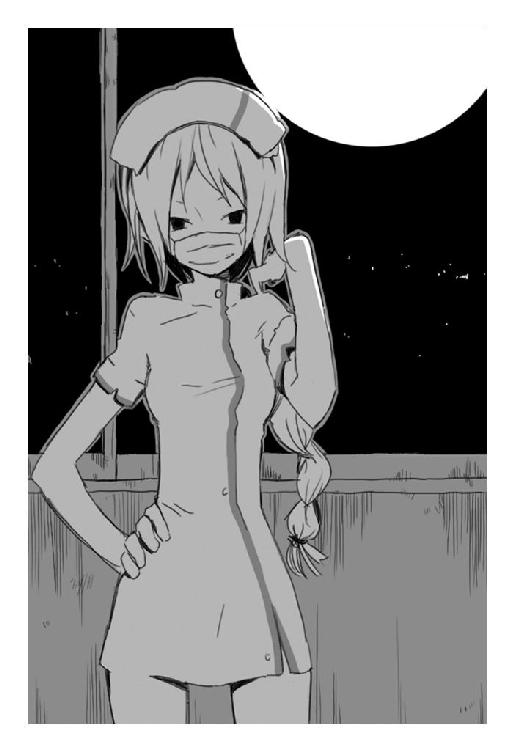
「その女は潔癖症で、自分の部屋に閉じこもって、徹底的に殺菌消毒、衛生ばかりを気にしていて──誰も部屋には立ちいれさせず、真っ白な空間で一人、ここは完璧な世界だと思いながら飢え死にした。愚かよね──けれど、その完璧な白、完璧な清潔、完璧に殺菌消毒されたその空間で死ねた女は幸せだったわ」
それは──。誰のことなのだろう。
「誰も不幸にせず。誰にも迷惑をかけず。一人の部屋に閉じこもって死ぬ。あなたみたいに、不細工に迷って生きるより、綺麗な白で死ぬのを望んだ──その女の名前はね、殺原美名といったわ」
一つの病室の前で立ち止まり、女はこちらに振り返って笑う。
「あなたは、下らない悩みごとに閉じこもり、そのくせちょろちょろ間抜けに外に出ては傷ついていく不細工なあなたは、もしも──そうした完璧と出会ったとして、果たして勝つことができるかしら？ あらゆる意味で、殺原美名に勝てるかしら？」
言いながら病室の中に進む、得体の知れない白衣の天使。彼女の後を慎重に進み、グリコはその病室に眠る火乃の姿を発見した。
やつれている。
そんなに長く離れていたわけではないのに。火乃が倒れ、救急車を呼んで、一緒に病院までついてきて鈴音のことを知った。火乃から離れていた時間は──三時間もなかっただろう。
けれど彼女はこんなにも、死人の顔をしていた。
眠る彼女の横に立ち、グリコは暗澹と表情を陰らせる。
樹夫に、どう説明すればいいのだろう。
見るかぎり、火乃は本当に死にかけている。命が滅びかけている。グリコにはそれがわかる。わかるから、歯がゆかった。
わかっている。人間は死ぬ。人間だからいつか死ぬ。早いか遅いかの違いだ。
また、自分の周りで、誰かの命が失われる。
鈴音の顔が見えた。
──嫌だ、と思った。
「火乃」
グリコは投げだされた火乃の手をとって、その手を自分の額に押しつける。冷たい。結局──彼女には、一度も愛情のようなものを返せなかった。
血のつながりはなかったけれど、それでも愛してくれたのに、グリコは、どうすればいいかわからなくて、ただ怖くて拒絶して。
結果がこれだ。
「火乃──」
名前を呼ぶ。答えはない。当たり前だ。そういう道を選んだ。
意地を張って、ただ怖がって、彼女たちを拒絶して。
最後まで何もできないまま、自分は逃げようとしている。
「火乃。グリコは」
彼女の手を握りしめたまま、グリコは呻くように囁く。
「グリコは、ごめんなさい──あなたに優しさを返せなかった」
怖くて。怖かったから。遠ざけて、傷つけて。
思いだすのは、何気ない毎日。火乃や樹夫と暮らした、些細なことしかなかった日常。けれどそれはグリコが千年前に置き忘れてきた大切なものだし、グリコは──彼女らのおかげで少しは笑うことができていた。
それは、本当の親、千年前に自分を拾った養い親がくれたものよりもずっと温かく。
得難い宝のように、幸せな時間だった。
「母さん」
つぶやき、グリコは無音で涙を零す。
「母さん──」
初めて言えたその単語は、儚く散って心を刺した。
火乃は死んじゃいけないと思う。不幸になるのはグリコだけでいい。グリコが死ぬべきだったのだ。千年間も生きちゃいけなかった。どうして自分は生きてきた。誰かを不幸にするだけなのに。こうして苦しむだけなのに。苦しめるだけなのに。
──ふと、思った。
「............」
沈黙し、グリコは火乃の手を握ったまま、眠る彼女の表情を見つめる。じっと。そして彼女の胸のあたりに手を伸ばす。一つの考えがあった。彼女が死なないで済む方法。そしてこの下らなく、苦痛を伴い進む自分の人生を終わらせる方法。
「......林檎、欲しい？」
グリコは小さく、彼女の耳元でつぶやく。
自分に残された、最後になった不死の林檎。それを火乃に与えれば、彼女は決して死なないだろう。これからも樹夫と一緒に、ずっと生きていけるかもしれない。後のことは賢木に任せて、自分はもう消えてもいい──。
千年間、生きてきた。
もう──いいだろう。何も得ることはなかったけれど。もう──いいだろう。
曖昧に諦めて、心の奥で決断し、グリコは──その言葉を口にする。
「あなたに、グリコの林檎を──」
火乃が跳ね起きた。
？？
──え？
バネ仕掛けの人形みたいに飛び起きた偽原火乃は、全てを終わらす言葉を言いかけたグリコの肩を掴むと大声で叫んだ。
「駄目！ これは罠よ！」
「────火乃？」
グリコはわけがわからない。理解できない。ただ揺さぶられ、火乃が生きていることを確認する。林檎はまだ移っていない。それなのに火乃は生きている。どういうことだろう──見ると火乃は短く悲鳴をあげて。
病室の暗がりに立つ、看護師を見た。
「そうね──」
聞こえるのは、酷く冷えた声。
怯える火乃の前方、静かに立っている彼女は。
「──嫌だわ、どうせ終わるなら綺麗に終わらせてあげようと思ったのに。そう──あなたも不細工に邪魔するのね。私の言うことを聞かないのね。私の完璧を汚すのね。ならば──いいわ。違う完璧を構築すればいいだけだもの」
その手に、いつの間にか握られていたスプレー缶を振る。
──シャカシャカシャカシャカシャカ。
「グリコちゃん逃げて！」
信じられない力で火乃に突き飛ばされたグリコは見た。
「でもそれは反抗なのよね？ 混じりっけのない反逆なのよね？ 創造主に逆らった人形が──どうなるのかも想像できない？」
唸りをあげて、看護師の周囲の空間が溶け始めている。否──彼女の身体から、湯気のように白いものが立ち上っている。溶けているのは看護師の服か。そして──彼女の気配を隠していた、薄い膜のようなものか。
白衣の天使が一皮脱いで、白夢の悪魔が現れる。
長い長い一本の三つ編み。天使の羽のタンクトップ。太股で切りとられたショートパンツ。手首を彩る腕輪とリストバンド。口元を隠すのは、武骨な形の防塵マスク。
純白の髪を華麗に舞わせ、奇妙な女は名乗りをあげる。
「愚かね──、間抜けね──、この世には、逆らってはいけない存在というものがいる。触れてはいけないものがいる。この私──殺菌消毒もその一つ。その逆鱗に触れたわね？ いいわ──その愛情、その勇気、その無謀、その愚行」
そしてスプレー缶を向け、悪魔のように笑うのだ。
「私が殺して潰して消して滅ぼして無くしてあげるから」
同刻──賢木愚龍は驚愕のなかにいた。
「.........！」
グリコを追って病室を飛びだし、見失ってしまい、手当たり次第に病室を覗きこんで。
変だとは思ったのだ。最初から、奇妙だとは思っていたのだ。
音がしない。この病院では──一切の音が死んでいる。
そして。
「うっ......」
開け放たれ、冷たく暗い夜気を吸いこんでいる窓。白く清潔な四方の壁。明かりを灯さない暗い部屋に、簡素なベッドが置かれている。
何の変哲もない、ごく普通の病室だった。
そこに何気なく転がる子供の足首の他は。
「まさか......！」
叫び、賢木は他の病室へと移動する。まさか。まさかと思う──。何か、おぞましいことが進行している。賢木の予想もできない、巨大な悪意が蔓延している。
向かいの病室を見る。音はない。匂いもない。
転がっている老人の生首。
「うわぁあ！」
全身に寒気が走り、賢木は衝動に耐えかねて叫んだ。そこは相部屋で、三つのベッドが並んでいて、それぞれのベッドの上に──死んでしまった生首が置かれ。
なんだこれは。
なんだ──これは。
「......はっ。はっ」
呼吸が荒い。心臓が暴れている。首を振り、賢木は病棟を抜けて中央の事務所へと向かう。なんだ。なんだこれは。みんな死んでいる。みんな死んでいる！ 生き残っている人間はいないのか。探して──しかし見つからず。
医者や看護師、事務職の人間がいるはずの事務所へと歩き。
扉を開いて、賢木は絶望する。
暗い。暗い部屋。
手首。足首。生首。身体の一部のみを残し──。
確かめるまでもない。
自分たち以外の、全ての人間が皆殺しにされていた。
殺菌消毒が絶望を噴霧する。グリコが見たのは、何ら変わったところのないスプレー缶から噴きだした銀色の霧。ぞくっとして、しかし動けず、グリコは病室の床にへたりこんだまま体勢を立て直そうとして──。
また火乃に突き飛ばされた。
ごろごろ床を転がり病室の出口へ。
「火乃！」
「グリコちゃん──」
一瞬、火乃と視線が交錯した。
「母さ──」
言葉は届いたのか、届かなかったのか。
気持ちは繋がっていたのか。それともそれすら断ち切られたのか。
「────」
火乃は、最後に声もなく口を開閉し、何かをグリコに伝えようとして──。
その身体を容赦なく銀色の霧に消し飛ばされた。
「あ......？」
散る──散らばる、火乃が残した身体の欠片。冷酷な銀色の霧は容赦なくその欠片にも喰らいつき──。
「あ......」
消える。消えてしまう。
火乃の全てが消えてしまう。あの笑顔も。グリコや樹夫と一緒にいたときの幸せそうな笑い声も。
「やめて消えないで」
願った。意味はなかった。グリコは叫んだ。
無情に悲鳴は延々と反響して──やがてそれすらも拡散し消滅し。
「............」
沈黙がおりた。グリコは全ての感情が欠落した顔で立ちすくむ。
なんだ。なんだこれ。え？ グリコは理解できない。理解したくもない。火乃がいた。そこに火乃がいた。最後まで変わらない顔で、お人好しな顔で、髪も服も乱れ、みっともないグリコのことを見ていた。
そんな彼女が一瞬にして全存在を吹っ飛ばされた。
残ったのは、火乃の右手。小さく、儚い、華奢な手首。
銀色の霧が包んだ彼女の身体、そして巻きこまれた床の一部が、綺麗な断面を残して抉りとられている。空間を──抉った？
なんだそれ。
というか、火乃は──どこへ、行ってしまったのか。
「あら。失敗──、あるいは、次善の成功かしら」
──シャカシャカシャカシャカシャカ。
スプレー缶を振りながら、殺菌消毒はこちらを向いた。不気味な、奥の知れない端正な顔。露出の多いその服装にただ恐怖のみを凝縮し──彼女は、首をかたりと曲げて冷淡に宣告する。
「偽原火乃は──私が消し飛ばした。もう戻らないし、生き返らない。それが事実」
グリコは震える。頭が痛い。あぁ──頭が痛い。痛みなど無くしたはずなのに。精神が痛い。魂が痛い。心が痛い。
火乃が。
火乃が、
自分を守って死んでしまった。
「あ」
グリコは口を開き、目を見開き、よろめきながら立ちあがって。
「あぁあ、おまえ！ おまえ、よくも！」
服のポケットからスプーンを抜き、笑みを浮かべる殺菌消毒に投げつける。手慣れた動作。必殺の動作。何度も何度も他者の命を奪ってきた、グリコの渾身の一撃。
「──下らない」
動じず、殺菌消毒はスプレー缶を握らない右腕を旋回させる。
「────」
その手に、投げつけたはずのスプーンが握られていた。
──受け止められた？
まさか。そんなこと、この千年間で一度もなかった。
驚愕で凍るグリコの正面、殺菌消毒はにっこりと笑って。
「スプーン？ こんな、武器とも呼べないただの食器で、殺菌消毒を相手にしようというのかしら？ ねぇ──手加減というのは、格上が格下にするものよ。人間ごときが──天使や悪魔に、力を抜いて挑むのかしら？」
瞬間。
殺意をこめた銀閃が──グリコの右目に突き刺さる。
「───ァ」
堪らず後ろ向きに倒れ、右目の激しい熱にグリコは呻く。手で確認すると、そこにはスプーンが突きたっていた。投げ返された。そんなことも初めてだ。見えなかった。戦力差は歴然としている。
「──ねぇ、眼球抉子ちゃん、自分が眼球を抉られる気持ちはどうかしら？」
愉しそうに笑い、殺菌消毒が歩み寄ってくる。いけない。勝てない。今は──こいつを打倒しうる戦術も戦力も思いつかない。
身体が震える。なんだ──こいつは。
それは、化け物すらも超越した、何か異質な存在だった。
「ねぇ──これで終わり？ もう抵抗してくれないの？ あれだけ私を不快にさせたのに、もう愉しませてはくれないのかしら？ では──」
床にへたりこむグリコの正面、曖昧な距離をとって彼女は笑った。
「──やる気をださせてあげる。宇佐川鈴音を殺したのは私よ」
「────」
「褒めるわね。珍しいのよ──私が、他人を心から褒めるのは。宇佐川鈴音さんはね、最後まで私に屈しなかった。どれだけ痛めつけても、どれだけ地獄を体感させても、あなたたちのことは──何一つとして喋らなかった」
こいつが。
こいつが──鈴音を。
グリコは、心が冷めていくのを感じた。鈴音を殺し。火乃を殺し。それでも平然としている彼女は、グリコにとって、命をかけても倒さなければならない相手だ。戦力差なんか知らない。相手の不気味な能力も気にならない。
殺す／殺す／殺す／
脳内が──一つの想いに支配される。
「そうよ──」
殺菌消毒は満足そうに笑った。
「──足掻け虫けら」
グリコは立ちあがり、全ての表情を消した顔でスプーンを抜く。二本。銀色に光るそれは火乃と樹夫に買ってもらったもの。すでに、心に哀しみはない。憎しみすらない。ただ虚ろな──それは、鈴音や賢木と出会う前のグリコ。銃口の瞳は、ただ暗く倒すべき相手の顔を見つめている。
そうして眼球抉子は。
自分が泣いていることにも気づかず。
「──死ね」
二本のスプーンを全く同時に解き放った。
「またスプーン？」
殺菌消毒は少しだけ意外そうに眉をひそめた。しかし、今回は直線的な攻撃ではない。一本のスプーンは天井へ、もう一本は床へと向かっている。
「投擲失敗？ ──まさかね」
悠然と立ち、小声でつぶやく殺菌消毒。油断してその場を動かない──また受けとめようと狙っている。その傲慢さが命取りだ。
反射。
丸みを帯びたスプーンは天井で床で滑り、角度を変えて殺菌消毒へと向かう。
「──反射を利用して、多角的に攻撃ってわけね。少しは考えてるじゃない。けれど──浅はかだわ」
彼女の指先が──近づくスプーンに伸びていく。
ずぶり。
刹那──グリコは自分の右目に刺さったスプーンを抜く。そして先に放った二本とは比べようもない速度で、殺菌消毒へ向けて放つ。
そのスプーンは空中で他の二本に接触し。
甲高い音とともに──それらを鋭く弾きだした。
「───ッ」
予測できない不規則反射に殺菌消毒も受けとめるのを断念し、慌てて動体視力のみで回避する。チッ、とそのうち一本のスプーンが彼女の頬を掠り、浅い傷をつけて真紅の血を零した。
──これでも避けるか。化け物が。
グリコは思いながらも、警戒を怠らず彼女を見る。
「──あら」
傷ついた頬に手をやって、殺菌消毒は呆然とする。
「あら。血。血だわ──私、傷つけられて」
「血を流すなら殺せる」
グリコは低く、そんな彼女に呼びかける。殺菌消毒は気の抜けた瞳をこちらに向けてくる。どうやら長い間、傷つけられることなく生きてきたらしい。自分が怪我をしたという現実をうまく理解できていない。
頷き、グリコはまた一本のスプーンを抜く。
「おまえは、殺せる。神でも天使でもない。生き物だから殺せる」
「そうね──」
その頬の傷も、すぐに再生してしまう。やはり林檎の保持者か。戦闘力では太刀打ちできず、傷をつけるのも困難なのに、さらに林檎まで持っている──そんな相手と、どう戦えばいいのだろう。
殺菌消毒は余裕めいた表情を消し、暗く静かに微笑した。
「──もういいわ。あなた、どうやら有害な菌みたい」
殺菌消毒しなくちゃね、と彼女は小さくつぶやいた。
とにかくグリコと合流しなくてはいけない。
賢木は決断し、ようやく落ちついてきた呼吸と動悸を確認すると病院を走った。グリコはどこへ向かったのか。生憎と見当がつかない。とりあえず、この病院が何か禍々しい事態に巻きこまれていることだけは理解した。ならば──。
「......そうだ」
鈴音の身体も危険かもしれない。死んでしまったとはいえ、まだ彼女の身体は生きている。しかし、敵の正体は知れないが、そいつは人間の肉体を吹っ飛ばすほど強力な存在だ。鈴音を守らなくてはならない。身体すら失ってしまえば、本当に全ての希望が失われてしまう。
賢木は決断し、来た道に反転すると鈴音の病室へ向かった。
走る。走る。廊下が酷く長い。賢木は思いだしていた。二ヶ月前。鈴音がグリコに襲われたときも、今のように、嫌な気持ちに襲われて終わらない道を走っていた。
あれから二ヶ月。自分は──また、鈴音を守れずに、何もかも失ってしまうのか。
灼けつくような焦燥に、賢木は歯を食いしばりながら走った。
どうしてこんなに無力なのか。神に恵まれて生まれたはずなのに。
たった一人の少女──大切なひとすら守れないで。
鈴音の病室までは一瞬だった。離れていた時間は十分か十五分か。しかしその間に、病室には当たり前のように異邦者が侵入していた。
肉。
それは人間の形をした肉だ。
無数の蚯蚓が絡まりあってできたようなその化け物は、巨大な眼球でこちらを見ると軽く会釈した。まだ悪夢は終わらない。ベッドに寝転んでいる鈴音がまだ無事だったことを確認し、それだけは安堵して、賢木は拳銃を抜くとその肉人形に向けた。
「去れ。閣下に指一本でも触れようものなら遠慮なく殺す」
「............」
肉人形は大きく瞬きし、座っていたパイプ椅子から立ちあがると低く言った。
「お久しぶりです。愚龍様」
その声は──。
賢木は記憶している。一度聞けば声は覚える。一度見れば、顔は覚える。そういうふうに育てられた。しかし──理解できない。
この声は。
「偽原──樹夫」
つぶやいて、賢木は肉人形を見つめる。
瞬間、沈黙の病院が──爆ぜるような騒音に包まれた。
抉る。抉る抉る。抉る抉る抉る抉る。
抉り──散る。
血飛沫。眼漿。毛細血管。眼球。涙。
悲鳴──。
怨怨怨怨怨怨。
病院は、一瞬にして地獄と化した。
殺菌消毒の放った銀色の霧に危険を感じ、反転して病室を飛びだすと廊下は肉で埋め尽くされていた。肉。赤黒く、蜷局を巻いた肉の渦。否──これは、肉で形作られた人形。自らの意志か、それとも殺菌消毒の操り人形か、恐怖なく躊躇いもなくグリコに襲いかかってくる。
「邪魔を──するな」
グリコはそれらを鎧袖一触、蹴散らしながら進んでいく。
彼らの頭部らしき位置に蠢く巨大な眼球、そこにスプーンを押しこんで、一気に全力で抉りとる。弾け、眼球が吹き飛び、肉人形は苦鳴をあげる。
一体を倒せばもう一体、それが終われば次の一体。次々と、次々次々と現れる肉人形の眼球を、修羅のごとき勢いでグリコは抉っていく。
抉る抉る抉る抉る。
飛び散る、気持ちの悪い眼漿や血。
グリコの顔も返り血で汚れ、純白の廊下も得体の知れない体液に浸されていく。
「──そうね」
真上から、声。
ぞくっとして、グリコは反射的に振り仰ぐ。
「肉人形では足止めにもならないか。せっかくたくさん用意したのに。まぁいいわ──夜は長い、せいぜい愉しみましょう。眼球を抉る化け物さん？」
そこに、殺菌消毒が逆向きで立っている。
天井がまるで床だとでもいうように、普通の調子で歩いている。長い一本の三つ編みは重力に従って降り、すう──と彼女の右手がこちらに伸ばされて。
その先端。握られているスプレー缶。
火乃を殺し、消滅させた恐るべき存在が。
「ＴＹＰＥ｜Ａ《消滅霧》──さぁ、あなたに受けとめられるかしら？ 遥かな昔──ノアの箱船を残して文明を残らず消滅させたこの技を。あの一件で私の力はほとんど尽きたけど──残りかす程度で、あなたごときの全存在は抹消できるのよ？」
言って、殺菌消毒はスプレーを振る。
──シャカシャカシャカシャカシャカ。
グリコは身構え、それでも襲いかかってくる肉人形の拳をがっしりと受けとめ。
殺原美名の声を聞いた。
「──むごたらしく死になさい」
言葉と同時に吐き出された銀色の霧に──掴んだ肉人形を思いっきり投げつけた。じゅ──と燃え尽きるように消滅する肉人形を視認し、それこそ足止めにもならないかとグリコは転がって霧を避ける。
廊下が円形に抉りとられ、下の階の廊下がくっきりと見える。やはり何にも妨害されず全てを抉る消滅の霧──防御はできない。ただ避けられないほどのものではない。
思いながら、グリコはまた廊下の角からわらわらと現れた肉人形たちを見る。こいつらの相手をしながら殺菌消毒にまで気を配るのは無理だ。彼女はこの無敵の技の他に、グリコよりも高レベルな身体能力まで保有している。全てにおいて自分よりも強大な敵を相手に、しかも数で攻められたらさすがのグリコにも勝ち目はない。
──どうするか。
考えているグリコに、天井を歩く殺菌消毒が余裕げな顔をする。
「そうね──あなたの考えているとおり、ＴＹＰＥ｜Ａ《消滅霧》はそれほど速い攻撃ではない。避けようと思えば避けられるでしょう。もともと、大量虐殺用の能力だもの。素早く動き回る一匹の虫けらを殺すのには向いていない。ノアの一件で能力も底を尽きかけて、連射も広範囲の攻撃もできなくなってしまったしね」
語る言葉にグリコは頷く。結局──あの武器は本当に殺虫スプレーのようなものなのだ。しかも、ほとんど中身が残っていないようだ。だから彼女は《消滅霧》を使う前、中身を掻き集めるためにスプレーをシャカシャカと振るのだ。
勝機といえばそれだけか。
連射ができないならば、一撃を避けた後にどうとでもできる。しかし身体能力では太刀打ちができない。せめてこちらに彼女と同じような能力があれば──。
遥かな昔、堕落した人類を滅ぼしかけた洪水伝説の化け物。
そんな存在に──スプーンだけで勝てるのだろうか。
「悩んでいる暇も、余裕もないわよ──あなたには」
近づいてくる肉人形の群れ。そして真上、殺菌消毒を見てグリコは一瞬だけ硬直する。
その両手。
「ＴＹＰＥ｜Ｂ《固定霧》──」
両手に、それぞれ一本ずつスプレー缶を握っている。殺菌消毒はそれらを誇るように振りかざし、警戒し身構えるグリコに独り言のような口調で語る。
「そうね──これは、対個人で効果を発揮する能力。あまり使う機会がないから──中身もたっぷり残っているし」
そしてスプレー缶の射出口を、こちらに向けて愉しむように笑う。
「教えておいてあげる。ＴＹＰＥ｜Ｂ《固定霧》。その能力は固定。触れれば──固まる。ただそれだけよ。怖くないでしょ？」
確かに、一撃で命を奪われる《消滅霧》に比べれば穏便な能力だ。しかしこの殺菌消毒が、ただの遊びでこんなものを取りだすわけもない。何か狙いがあるのだ。狡猾な狙いが。
しかし──相手の両手が塞がっている今なら、グリコの攻撃も受けとめられない。
「迂闊だぞ──殺菌消毒！」
グリコは素早くスプーンを抜き、殺菌消毒の無防備な顔に向けて投擲する。
瞬間。
殺菌消毒は表情を変えず、踊るように両手を広げ、《消滅霧》の右手を下に、《固定霧》の左手を横に。
「《消滅霧》──そして、《固定霧》」
振らずに噴霧された少量の《消滅霧》が、投げつけられたスプーンを空中で消滅させる。同時に、廊下を曲がってこちらに襲いかかってくる肉人形たちに《固定霧》の液体に近い霧が襲いかかり、刹那、彼らを固めてその場に貼りつけてしまう。
次々と現れ、固まった同胞たちを越えながら近づく肉人形。
それらに容赦なく《固定霧》を浴びせかけ──。
「──しまっ」
グリコは敵の狙いに気づき、廊下の全てが塞がれる前に奥へ進もうと走り、間に合わず、肉人形の壁の前で立ち止まる。
「小さな獲物は追いこんで殺す」
冷たい──殺菌消毒の声。冷徹な、それは何の感情もない声だった。
「猫はそうやって狩りをするらしいわね。奇襲もするみたいだけど。ちなみに犬は延々と追いかけたり取り囲んだりして狩りをする。どうでもいいわね。本当に──どうでもいい話だわ。けれど」
グリコは慌てて肉人形の壁を叩く。しかし《固定霧》で固定された壁は揺るぎもせず、脆いはずの肉に傷もつきはしない。本当に、空間ごと固定されている。悪いことに叩いたグリコの拳が壁に貼りついて、どうしようもなく皮ごと剥いで離れるしかなかった。
ぽたたっ、と無理に皮を剥いだ拳から血が零れ落ちる。
逆方向は──駄目だ。そちらには殺菌消毒がいる。廊下の奥まで遠いし、きっと、逃げようとして走っているうちに狙い撃ちされてしまう。
逃げ場がない。
どうする。考えろ。生き残る。否──鈴音と火乃の仇をとる。
死ぬのはその後だ。そう決めた。
けれど──。
「冥土の土産くらいには、なったかしらね──」
二つのスプレー缶は温情もなくこちらに向く。《消滅霧》をぎりぎりで避けて背後の壁に穴をあける──それしか勝機はないだろう。しかし、相手もそのくらいは予想しているはずだ。
グリコは生唾を呑み、随分と久々に死を間近に感じた。
きっと──あの《消滅霧》はグリコを生かしている林檎ごとグリコの全存在を消滅させる。そうなれば今度こそこの世界とはお別れだ。思えば千年──よく生きた。何も残してはいないけど。幸せのほうが少なかったけど。
鈴音や賢木と出会えたから──グリコには生きていた意味があった。
死ぬのは別に怖くない。むしろ望むところだ。
けれど──それは、この女を殺してからだ。そして鈴音を生き返らせる方法を見つけてからだ。まだ死ねない。死ねないのだ。
ぱりっ、とグリコの背中で何かが弾けた気がした。
それが何だか自覚する直前──。
「──それじゃ。おやすみなさい──」
つぶやき、シャカシャカとスプレー缶を振る彼女の。
腹部。そして脚部で。
血飛沫が弾けた。
「────」
目を見開き、殺菌消毒はぐらっと揺れて反転すると落ちる。どうも《固定霧》で足場を固定していたらしい。自分の意志でその固定を解除して、床に落ちると彼女は撃たれた場所を手で押さえて呻いた。
「う──ぐ」
まだ痛覚が残っているのか。否──わざと残しているのだろう。感覚がないというのは、酷く虚しいものなのだ。生きている感じがしない。それは、きっと痛みよりもずっと簡単に心を殺す絶望。
彼女が押さえた指の隙間から、じゅくじゅくと血が零れていく。勝機──グリコはまたもスプーンを抜き、蹲る殺菌消毒に激しい勢いで投げつけた。
「ぐ。う」
そこは殺菌消毒、素早く飛び退いて致命傷を避ける。しかしスプーンは彼女の肩口に突き刺さった。各所に傷を負い、血を流すこの女は、獰猛な表情で後方を振り返る。
そこに。
「この病院は──賢木財閥直営の私立病院だ」
未だ薄く硝煙の立ち上る、小型拳銃を構えた賢木愚龍が立っている。
「故に、言わせてもらおう。私の庭で何をやっているか貴様！」
「賢木──」
グリコは呼びかける。彼のおかげで助かったが、さっきの攻撃は奇襲だったからこそ殺菌消毒に当たったのだ。正面から戦ったら賢木に勝ち目などない。とにかく──守らなくては。鈴音の愛した男性。そしてグリコの大切なひと。
賢木──。
苦しげに呻く殺菌消毒を捨て置き、彼のそばまで駆けつける。グリコも先刻の戦闘で右目に傷を負っているが、どうにか薄い視力だけならば取り戻せた。
だから見えた。賢木の後方。一体の肉人形がぼんやりと立っている。信じられないことに、その肉人形は手に鈴音の身体を抱きあげている。
──肉人形。
グリコはスプーンを取りだし、そいつに迷わず襲いかかる。
「どけ！ 賢木──そいつは」
「止せ」
両手を広げ、グリコの前で通せんぼをする賢木。理解できず、グリコは長身の彼を見上げた。噛みつかんばかりの勢いで吠える。
「何故だ！ こいつは敵だろう！ あいつ──殺菌消毒の手下だ！ どうしてこいつに鈴音を任せている！ 答えろ賢木！」
「............」
肉人形は、何故だか、哀しそうに俯いた。
グリコのどの言葉が彼を傷つけたのかはわからない。
けれど──どうしてか、その一瞬、グリコは確かに胸の痛みを覚えた。
「事情を説明している暇はない」
賢木は拳銃の構えを崩さずに、真摯な表情で殺菌消毒を睨みつけている。その足下には《消滅霧》と《固定霧》、それぞれを噴霧するスプレー缶が落ちている。
「話はだいたい彼に聞いた──あいつが、閣下を殺した殺菌消毒か」
腹を押さえたまま、よろけながらも立ちあがる彼女に、賢木はグリコすらも怯むような怒りに満ちた表情で言う。
「私の愛する閣下を殺したな。その罪──、償う方法は皆無だ。この私を敵に回した不運を悔やみながら百万回は死ぬがいい」
「く──く。くく──くくく」
漏れるような笑い声。殺菌消毒は膝を震わせながら静かに姿勢を正し、腹を押さえ、顔を伏せ、足を広げた奇妙な姿で低く忍び笑う。
「くく。うふふ。あはは。あぁ──世界は愉しいわ。本当に。どうしてこんなに愉しいのかしら。そうね──世界に在るものは、大きく三つに分けられる、芸術品と、塵芥と、それ以外──あなたたちは、いいわ、芸術的な娯楽だと殺菌消毒が認めてあげる」
埋まった銃弾を指先で抉りだし、捻り潰し、その場に投げ捨てる殺菌消毒──顔は伏せられたままで、マスクで隠された口元からは表情すらも読めず、グリコは正直──寒気のような恐怖を覚えた。
彼女はそのままの姿勢で、両手を真横に広げる。すると磁石のように二つのスプレー缶が自動的に跳びあがり、彼女の両掌に吸いつけられて握られる。
ぽたぽたっ、と止まらない血が汚れた廊下をさらに汚した。
「ふふ──ふふふ。ふふ。ふふふふ」
「何が可笑しい！」
耐えられず、グリコは殺菌消毒を睨みつけて怒鳴った。嫌な予感がする。もちろん賢木がきたことで形勢が逆転したわけでもない。未だ戦力は圧倒的にこちらが不利だ。けれど──そうではない。そういう次元ではない不安。
「あなたたち、欠片の使い方をよく知らないようね？」
──欠片？
おぞましい肉人形の壁を背景に、殺菌消毒は顔をあげた。
それは愉しそうな、幸せそうな、そして同時に酷く底意地の悪い顔。
「いいわ──面白いから教えてあげる。欠片はね、文字通り、神様の欠片なのよ。幾万幾億に散らばった神様の断片。あなたたちが持っているのは、それの一部でしかないの。そうね──確か、あなたたちは林檎とか呼んでいたかしら？」
林檎。
禁断の林檎。
それが神様の欠片？ そういえばヘビが語っていた。それは、神様の魂、その半分で創られた果実。不老不死を願う神の執念で生まれた禁断の果実。
「林檎。林檎ねぇ。まぁ──そう見えなくはないでしょう。全く、神蟲天皇ね、そんな下らない名前を流通させるのは。まぁいいわ──林檎だろうが欠片だろうが呼び方はなんでもいい。ただ、笑えるのは、あなたたちがその本質を勘違いしているってところよ」
笑い、殺菌消毒はこちらを見た。
何かに縋るような寂しそうな瞳。何故──。
「ずっと昔。ずぅっと昔。原始の人類が生まれるよりも前──ある強大な存在がこの星にはいた。神と呼ばれるべきその存在は、しかし、とある理由で散り散りに砕け散ってしまう」
それはヘビが語った内容に似ているような、全く違うような、奇妙な話だった。けれど──ヘビも人類とあまり知識は変わらなかったのではないか。ほとんど想像と伝承で語り、実際に蟲とか林檎とかの本質を知っていたわけではなかった。
けれど殺菌消毒の口調には──確信がある。断言がある。
きっと、これが──真実だ。隠されてきた真実。神や蟲や林檎の真実。
「砕け散った神は、七つの大きな欠片と、無数の細かい欠片に分かれた。私も──大きな欠片の一つ。そうね──あなたたちが蟲と呼んでいる生き物も、大きな欠片の一つよ。もっとも──今は欠片を集めるために分裂しているみたいだけど」
分裂。よくわからない。
しかし殺菌消毒は詳しく説明する気がないようで、笑みを含みながら語りつづける。
「どうして私たちが欠片を集めるか知りたい？ 知りたくなくても語るけど──再び神の姿に戻るためよ。私たちの今の身体はね、分裂した欠片でしかない。完全体に戻りたいのよ──それは本能的な欲望ね。そして一度は、無数に散らばった欠片を集めることに成功した」
そのまま彼女はこちらを見る。深く何か感情をこめた暗い暗い瞳。
「けれど、そこで事故が発生したの──アダムとイヴって知ってるかしら？ そう、あなたたちのご先祖様ね。原罪を犯したご先祖様ね。その二人、私たちの完全体、神が泥からつくった奴隷人形が、あろうことかヘビにそそのかされて無数の欠片を食べてしまったのよ。まったく、思いだしただけで腹立たしいわ。まさしく原罪よね。私たちは欠片の捜索に疲れきって眠っていて──その間、欠片の保存と融合を任せていたエデンの園の管理人、アダムとイヴが裏切っているなんて思ってもいなかった」
理解する。彼女の瞳に宿るのは──長く煮つめた憤怒の光。気が狂うほど長い間、怒りつづけていた瞳だ。グリコは寒気を覚え、ちょっとだけ後退する。
「目覚めたら、人類は笑えるほどに増殖して、地に満ちていた──焦って欠片を取り戻そうとしたけれど、それは私たちでは手のだせない精神世界に隠されていて──結局、今のような感じに、たまたま欠片を手にいれた人間を襲って一つ一つ取り返しているの。それでもまだ揃わない。どころか──涙歌と最弱は裏切るし、破局もどこかへ消えてしまうし、一人部屋も生死不明で──本当に、気が滅入るのよ。残った大きな欠片は三つ。揃えた細かな欠片はまだ半分といったところ。あと何千年、何万年をかければ全て揃えられるかわからない」
手を胸元に寄せて、殺菌消毒は真摯な顔をする。
「それでも、私は元の姿に還りたい。それだけよ──さぁ原罪の子供たち、悪いのは、間違っているのは、どちらだか理解したでしょう？」
「............」
黙りこむグリコの横、賢木が偉そうな顔をする。
「なるほどよくわかった。この間抜け。砕かれたとか奪われたとか喧しいが、砕かれたのも奪われたのもお互い様だ。以上。では殺す──閣下を殺した貴様は賢木愚龍刑法により死刑。下らん御託をありがとう。糞の役にも立たんので黙れ」
そうだ。賢木の基本法則は宇佐川鈴音至上主義だ。他のどんな法則だろうが彼にとっては無価値なのだ。グリコは呆れ、同時にちょっと安堵した。
そうだ。過去に何があったかなど知らない。
もっと単純になろう。鈴音の仇は必ず殺す。以上。
「あら──思ったより」
殺菌消毒は綺麗に笑った。
「愚かね──」
その声に隠しきれず混ざったのは殺意。そして同時に、こちらを絶望へと叩き落とそうとする残酷な意志。
「──では、最後に教えてあげる。その欠片の能力を」
彼女は何故だか賢木でもグリコでもなく、その背後の肉人形と、彼に抱えられた鈴音を見つめていた。
「欠片と言ったでしょう。それは液体を想像してもらえるとわかりやすいかもしれないわね。砕け散った神の魂──魂というのは、命のエネルギー。生き物が、生き物として動くのに必要な力。車のガソリン。懐中電灯の電池。それが無ければただの肉。その魂はあらゆる生き物に宿っていて、その対象を食べることにより吸収される。生きているうちに魂はだんだんと消費されるから、そうして動物や植物を摂取しないと生物は生きられない」
そういえば、野菜も、肉も、元を正せば生き物だ。人間は、それらの生き物から魂を少しずつ吸収して、消費したぶんを補っているのか。だから食べなければ死ぬ。
「魂は液体だから、肉体に吸収されると簡単に混ざる。普通──混ざって溶けた魂は受容器である心臓に貯蓄される。うん、良いことを教えてあげる。魂は心臓に宿るから、林檎の保持者であろうとも──心臓を抉りとられれば死ぬわ。もちろん私もね」
グリコは思わず息を呑む。心臓を抉られれば死ぬ──。
鈴音も、そうして殺されたのか。全ての魂──生命エネルギーを奪われて。自分の意志で相手に魂を渡さなくても、そんな簡単な手段で奪うことができたのだ。
そういえば、グリコも心臓を失ったことはなかった。頭部を吹き飛ばされかけたことはあるが──しかも賢木に。一度も、魂の貯蓄庫である心臓は失わなかった。運が良かったのだろう。
それはきっとあのヘビも知らなかったこと。そこまで知っているということは──やはり殺菌消毒は、彼女が言うとおりの存在なのだろうか。
七つの大きな欠片。そのうちの一つ。
殺菌消毒。
そんな相手に──自分たちは勝てるのだろうか。
「あなたたちが林檎と呼ぶ神の魂の欠片は、人間の魂なんか比べものにならない超濃度の魂の結晶。わかるかしら？ 老いとともに魂の消費は激しくなって、やがて需要に供給が追いつかず、または大きな病気や深刻な怪我の回復に魂を使い切って生物は死ぬ。逆説的に、魂が残っているかぎり生物は死なない。怪我を負っても魂を消費して回復するし、貯蓄が充分すぎるから、魂を摂取するための食事をする必要すらなくなる。痛みにも暑さにも寒さにも魂を消費して耐えられるようになるから、それらに対する危険信号である痛みや感覚も無くなっていく。どう？ 簡単な話でしょう。それが──欠片の能力よ。欠片というのは、ただの膨大な魂。巨大な生命エネルギーの塊でしかないのよ」
なるほど──とグリコは思う。
色々と曖昧だった部分が全て解き明かされていく。それが林檎の能力。グリコもヘビも知らなかった、この禁断の果実の真実。
理解して、今は──一つのことのみ頭にいれる。
殺菌消毒も、心臓を抉れば殺せる。
それのみが重要で、他のものは全てそれの前では些事だった。
「そして──これが笑えるのだけど」
殺菌消毒は、ただ無邪気に。
「肉人形という存在をあなたたちは見たわね？ そう──あなたの後ろにいるし、私の後ろにもいるもの。肉人形、その作り方を教えてあげましょうか」
最悪の真実を──口にした。
「簡単よ。欠片でも蘇らせられない心臓を失った肉体に、欠片を埋めこめばいい。それだけで、その死体は肉人形になる。欠片を与えた人間に絶対服従の、意志の欠片もない肉のお人形さんにね。生命エネルギーが手だの足だのを生きているように動かすけど、そこにはもう死んだ人間の意志なんか残ってないの。受容器が存在しないその身体は、自意識もなく、死後痙攣のようにただ動くだけ。欠片には前の持ち主の意志が残留しているから、その身体は、欠片を与えた存在の──操り人形のようになってしまう。ふふ──自由に動かすにはちょっとしたコツが必要なのよ？」
......死んだ人間に欠片──林檎を埋めこむ。
「────」
グリコは。
「────あ」
理解した。
振り返ってはいけない。振り返ったら絶望する。理解している。言葉ではなく。本能で理解しているが──。
振り返ってしまった。
ほとんど思考もなく。
ただ理解を確認するために──振り返ってしまった。
「欠片が、肉体を循環するのにかかる時間はだいたい二十分」
殺菌消毒の声が──遠い。
「あなたが、いつ──欠片を与えたのか知らないけれど。もう動いてもいい頃合いよね」
硬直する眼球抉子の目前。
肉人形に支えられ、宇佐川鈴音が立ちあがっていた。
「はは──あはは。あははは。あははははは！」
殺菌消毒の甲高い笑い声が、体液と肉片に染められた廊下に響く。
「感動のご対面というところかしら？ 知らずにやってしまったのでしょう。愚かね──眼球抉子！ どう、嬉しいでしょう。もうあなたの友達はあなたを裏切らないわ！ あなたが死ねと言えば迷わずに死ぬ！ どう？ 友達が──あなたの奴隷になった気分は！」
虚ろな、意志のない、宇佐川鈴音の表情。
ただ立っているだけの、それこそ──人形のような。
「鈴音......」
つぶやくと、ぴくりと鈴音は反応し。
「りんね」
おうむ返しに、己の名前を口にした。
「りんね。りんね。りんね。りんね」
「────」
グリコは腰が抜けて、その場に崩れた。信じられない。悪い夢のようだ。賢木も蒼白になっている。そうだ──こんな酷いことがあるだろうか。
鈴音の肉体を保つためにと、根拠もなく賭けるようにその身体に林檎を宿した。
しかし──こうして、起きあがった彼女はすでに宇佐川鈴音ではなく。
「さぁ、ご挨拶なさい。肉人形」
目を逸らした隙に鈴音のそばまで移動していた殺菌消毒は、無抵抗な鈴音の頭を掴んで無理やりにお辞儀させた。
「宜しくお願いします。私は眼球抉子様の下僕です──とね」
そんな酷いことをされても、鈴音は全く抵抗せず。
困ったような顔をグリコに向けるのみ。
「あ。あ──あ。ああ！」
グリコは切れた。何も考えられなくなった。思考は消滅し、ただスプーンを握りしめて殺菌消毒に襲いかかる。彼女を殺せばどうにかなる気がした。もちろんそんなわけはないのだけど──ただこの得体の知れない憎しみだか絶望だかを、この女に叩きつけてやらなければ気が済まなかった。
「殺菌消毒──ッ！」
「どうして、あなたは私に怒っているのかしら？」
満足そうに微笑んで、彼女は鈴音を突き飛ばすと。
「あなたの憎悪が誰かの死を望んでいるのなら──自分で自分を殺しなさい。まぁ、その前に──」
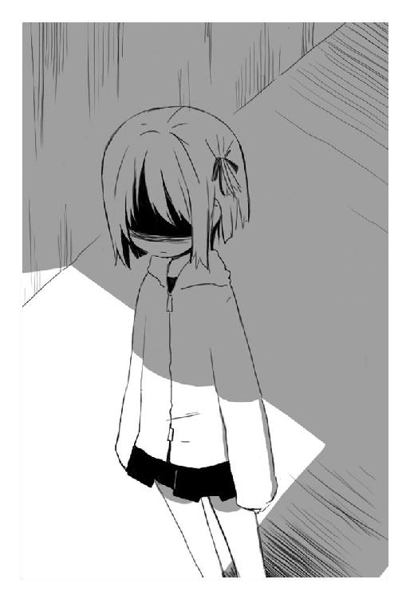
殺菌消毒は回転し、鉄斧のような横薙ぎの蹴りを放つ。
「──私があなたを殺すけど」
グリコの右腕がスプーンごと破壊された。血が舞い、骨が散り、それでもグリコは止まらずに──。
肉人形の親友の横、自暴自棄になって攻めた。
──びき。
肉が、千切れるような音がした。
──びきびき。
「────」
あ。
あ、駄目だ。抑えきれない。憎悪に我を忘れたグリコに残された最後の理性その一欠片が、儚く残った自分の人間性へ縋りつくようして訴える。駄目だ。その力は駄目。
目の前に、暗くて冷たい道がある。
二つに分かれて二度と交わらない、きっぱりと分かれた道がある。
そのとき──眼球抉子の目前には。
人間として生きるのか。化け物として生きるのか。
狼の目をした男から告げられた、無慈悲な選択肢しか見えていなかった。
「あ。あ──あ」
そして眼球抉子は、一つの道を選ばなければ、目の前の──友を殺した存在には勝てないと本能的に理解する。跳躍し、そんなグリコに何か不穏を感じたか距離をとる殺菌消毒──彼女の前、グリコはあっさりと決断する。
首を切り落とすような感覚。
それしか方法がないのなら。迷わず化け物にでもなろう。どうせ──すでに決断したことだ。その選択肢は逃避なのかもしれないけど。
化け物として生きる。
目の前の敵を倒せる化け物に。
本当に本当の──それが、最後の選択。
──びきびき。
歓喜するように──肉が笑い、背中が裂け、真紅の糸が解き放たれる。それはグリコの薄皮一枚の下で猛り暴れていた魔物。一ヶ月前、ヘビを圧倒した化け物。熟しすぎた強力な林檎があったからこその変身だと思ったが、どうやらそうではないらしい。
変わっていたのは、きっと魂とか林檎ではなく。
この身体。もう──自分は、人間の身体ではなかった。
ならばもとより人間として、生きていけるわけがなかったのだ。
それでも寂しくて鈴音と賢木のそばに二ヶ月も居座ってしまった。もういいだろう──眼球を抉る化け物は、化け物として生き、化け物として死ねばいい。
全てのけじめをつけてから、自分は再び化け物に戻る。
不幸になるのは、自分だけでいいのだ。
「──あら。何それ」
殺菌消毒の余裕げに浮かべていた微笑が消えていて、その双眸は大きく見開かれている。その正面、すでにグリコは変わりかけている。肢体が伸び、髪は真紅の光をまとって背中を流れ、甲殻類のような肌にはすでに人間らしさはない。そして背中から生える──血の色をした長い糸。糸は絡まり、縫い合わされ、禍々しい真紅の翼を形成する。
「────」
賢木が何かを叫んでいるが、もう、聞こえない。
不思議に心は穏やかで、恐怖も愉快も絶望もない。
殺菌消毒は身構えて、スプレー缶をこちらに向ける。
「知らないわ──知らないわ。何それ。ただの人間が──否、あなたはいったいどれだけ長く林檎を保持していた？ 何百年？ 何千年？ 強大な力を持ちつづけることで肉体がそれを受けいれられるよう成長を──否々、それは進化！ 面白いわ！ もうすでに、あなたは、人間ではなく──私たちと同じような」
「黙れ」
声はすでにグリコのものではない。
それでもグリコは賢木と鈴音を守るように両手を広げ。
「化け物が語るな。人間のように。人間どもが勘違いする。化け物は、化け物として、世界の外で殺しあうのがいい。そういう生き物だ。グリコもおまえも。だから──もう言葉は要らない。いい加減に耳障りだ」
「............」
フシュー、と吐息を漏らし、殺菌消毒は真剣にこちらを見る。
──シャカシャカシャカシャカシャカ。
「そうね──あなたが、何を決めたのか、何を捨てたのか──そのおかげで何を得たのか、見せて頂戴──あなたは、あるいは私が探し求めた」
「喋るな」
短く告げて、肉織りの翼をはためかせて走る。身体は嘘のように身軽で、全身に力が溢れている。腕を思いっきり引いて──ただ、叩きつける。
「────」
それだけで。
殺菌消毒の華奢な体躯は激しく吹っ飛んで、病院の壁を貫通すると空中に放りだされた。外は夜。星空で、血や得体の知れない体液を振りまきながら彼女は落下していく。
「──賢木」
グリコは怖くて鈴音も、賢木も見ることができなかった。
「鈴音を頼む。グリコは──否、ごめんなさい」
言葉がでずに謝って、賢木が叫ぶのも無視し、グリコは痛みから逃げて戦場へと向かう。鈴音を守れなかったのは自分。鈴音を肉人形へと変えてしまったのは自分。その責任が怖くて、賢木の気持ちを思うと居たたまれなくて、逃げてしまった。
怖い。
怖い──人間の世界は怖い。
暗闇で、独りぼっちで、生きていたほうがずっといい。そこには何もないけれど、苦しくないから。何も考えなければいいだけだから。
だから。
ごめんなさい。鈴音。賢木。
──せめてこいつは倒すから。
天使のように舞い降りて、悪魔のように攻めていく。
病院の外。入院患者たちが散歩をするための緑道。花壇には夜だから閉じている蕾。静かで、木々はただ暗闇を濃くする闇の棒で、月と星明かりが照らしあげたこの場所は、なんだか酷く寂しげだった。
《固定霧》で自身の身体を固定し、落下速度を消し去る殺菌消毒。《固定霧》は彼女の意志で解除できるらしく、柔らかな動作で大地に立つ。
その腹部は抉れていた。
野球ボールくらいの大きさだが、肉が抉れ、背景がそこから見えている。彼女は呻き──よろめいて、何故だか小さく笑い声をあげている。
「く──くく」
その弱々しい姿に、何故だかかつてない威圧感をおぼえ、変わり果てたグリコは急停止すると咄嗟に身構えた。
「そうね──私は運が良い。この破壊力。どれだけの死に触れてきたのかしら？ どれだけの悲鳴を浴びてきたのかしら。綺麗──。あなたは綺麗よ、眼球抉子。その身体は──、その魂は、すでに私たちと同格。あなたなら、消えた大きな欠片の代わりになってくれるかもしれない」
獰猛に顔を上げ、二つのスプレーを構える。
そうして──かつて人類を滅ぼしかけた化け物は。
「ねぇ──頂戴。あなたの全てを私に頂戴。還りたい。戻りたい。身体の奥が叫ぶのよ──私は、私に還る。欠片を全て拾い集めて、完璧な完全体に──」
スプレー缶の蓋をあっさりと取り外し、防塵マスクもかなぐり捨てて、中身を躊躇うことなく飲み干した。全てを消滅させる霧と全てを固定する霧は、殺菌消毒の内側で混ざり、新たな形を形成する。
「このスプレー缶の中身は、私の魂の欠片。喰らい尽くす獰猛な欠片と、固めて縛る陰湿な欠片。それらは微生物のように対象へと群がって、命じられた仕事を全うする」
瞬間、確かに震えるものがあった。無敵の身体を手にいれたグリコが、ふらつきながら立っている彼女に近づくことができない。
「私は私を穢さない。だから飲んでも大丈夫。全ての魂は集合し──本当の力で戦える。そうね──ＴＹＰＥ｜Ｃ《終末》とでも名づけようかしら。最後の審判のために残された切り札を、あなたに全力でぶつけてあげる。眼球抉子──」
そして彼女の姿が拡散する。
「────」
拡散。不気味な女性でしかなかった殺菌消毒の身体が、吸血鬼のように霧へと変化し、蜂蜜の声で語りながらこちらに向かってくる。
──速い。
「あなたは夜が好きかしら？ 闇の時間を愛せるかしら？ 私は夜を愛している。全ての塵芥を漆黒で隠し、消し去ってしまうこの完璧な時間がね。そうね──だから人間は嫌いだわ。せっかくの夜を光で汚して。私が私に戻ったら、真っ先に皆殺しにしてあげる。今度はノアすら逃がさない。一人残らず猫のように狡猾に狩り殺してあげる」
人類を──皆殺しに。
獰猛な本能に支配されたグリコの脳裏に、浮かんでくる大切なひとたちの顔があった。賢木。鈴音。火乃。樹夫。一人として守れなかったけど。誰も幸せにできなかったけど。
彼らにもらった恩があった。
思考に埋没していると、獣のごとく襲いかかってきた霧がグリコの右肩から先を残らず消し飛ばす。痛みもない。感触もない。ただの消滅。
──喰われた。
直感的に思う。跳びのき、グリコは血すらでない肩口を押さえて歯噛みする。
霧は再び空中で殺菌消毒の形を作り、不気味に浮かんだまま愉しそうな声で語る。
「そう──私はただの消化器官。戦闘は別に得意なほうじゃないの。私はね、喰らったものを自分の力として取りこんで、延々と増殖していく生きた胃液。どうかしら？ 理解できた？ 私をここで止めないと──際限なく広がって世界を破壊するわよ」
それはノアの洪水伝説。聖書に克明に記録された、黒々とした生き物のような洪水は、やがて世界を飲みこんで、あらゆる生物を殺戮し、文明を跡形もなく消滅させてしまう。
夜のように無差別に、世界を虚無で満たしてしまう。
消えた右腕は再生しない。完全に喰われてしまったらしい。今さら腕など惜しくはないが──確かにこれは厄介だ。殴ればこちらの腕が消される。無敵の矛であり盾でもある能力。
これが殺菌消毒──。
七つの大きな欠片とやらを、七つの大罪に例えるならば、彼女はきっと『貪食』だった。全てを喰らい尽くしてもまだ満ち足りぬ消化器官。
「......足掻きなさい。虫けら。ぼんやりしてると踏み潰すわよ」
勝機はない。思いつかない。けれど退くわけにはいかなかった。鈴音を殺し、火乃を殺し、大切なものを喰らっていった殺菌消毒。彼女を逃がすわけにはいかない。
それに、化け物の身体が、戦いたいと訴えていた。
その叫びに応え、グリコは大きく翼を震わせる。
この身体で何ができるのかわからない。実際、この姿になるのは四回目だ。一回目と二回目は共に旅をしていた仲間たちから林檎をもらったとき。年月を経て獰猛に成長していた林檎を受けいれて、耐えきれずに力が暴走した。三回目は一ヶ月前、ヘビとの戦いだ。
どのときも化け物に変わったのは短い時間で、具体的に何ができるのかよくわからない。それでもやるしかなかった。唯一──理解している。
自分の身体は爆風だ。
ならば存分に爆ぜればいい。
剣のように鋭くこちらを斬りつけてくる貪食の霧を、間一髪で避けて──グリコは翼を激しく羽ばたかせた。
瞬間、その両翼から濃密な爆風が放出される。
「う──？」
殺菌消毒は吹き飛んで、一時的に空中へと散華する。大した威力だ。けれど──やはり風では彼女を殺せない。ただ吹き飛ばしてしまうだけだ。グリコは何度か無意味に羽ばたいて、風を操る術を理解していく。
今のところ、とりあえず、殺菌消毒に通用する攻撃はこれだけだ。他に何ができるかもわからない。考える。彼女を討ち滅ぼすその方法を。
「なるほどね──けれど、穴だらけの戦法じゃない」
余裕げな殺菌消毒の声。そして再び攻撃がくる。
撃墜しようと真紅の翼を後方に翻したグリコは見た。
霧が──分裂している。その数は視認できただけで四つ。翼を振るって吹き飛ばすも、素早いその霧の全てを散らすには至らない。
いくつか残った殺菌消毒の霧を飛び退いてかわす。そして爆風を起こして夜空に散らす。けれど意味はない。霧を分散させても、相手には痛みもないし、相手の武器が増えるだけなのだ。
「どうしたの──。もう終わり？ ならば──死になさい。心臓ごと欠片の魂を、私が美味しく喰らってあげる。ふふ。愉しいわ。心が躍る。そうね──最初からそうしていれば良かった。あんな場所に欠片を保存せず、残らず私が喰らえば良かった。涙歌も破局も最弱も一人部屋も不快逆流も神蟲天皇も、私が喰らってしまえば──」
蜂蜜のような声は、酷く淫靡につぶやいた。
「──完璧な存在になれるじゃない」
その声を聞いて、グリコは寒気を覚えた。
ただひたすらに、完璧な存在となることを望む消化器官。全てを溶かし、吸収してしまう彼女は確かにそのような存在になれるだろう。しかし、そうして完璧な存在になった彼女は、きっと孤独に漂うだろう。それが本望なのかもしれない。彼女も語っていたではないか──。
昔、殺原美名という女がいた。
彼女は完璧な世界で、満足をして独り死んだ。
再びくりかえすだけだ。きっと──殺原美名というのは、目の前のこの殺菌消毒。しかし、疑問に思う。殺原美名は死んだという。けれどこうして生きている。彼女は──最初から、七つの大きな欠片ではなく、その欠片を手にいれただけの、元は人間だったのではないか。
今はもう化け物だが──とグリコはそんな益体のないことを考える。
ならば自分と同じだなと、さらに意味のないことを考える。
これから、グリコは彼女と同じ存在にまで堕落する。けれどせめて、賢木や鈴音の生きるこの世界を壊してしまわないよう。
殺菌消毒を見て、眼球抉子は思っていた。
何度目かの彼女が接近し、グリコが翼で吹き飛ばし、爆風をくぐり抜けた霧に身体を削られるという一方的な戦闘をくりかえし。
満身創痍のグリコは、この近づくだけで危険な戦場に歩み寄る影を知った。
それは賢木と──肉人形。鈴音はどこかに残してきたのか。落下したグリコと殺菌消毒を追いかけて、こうして屋外まできたらしい。
いけない、とグリコは思う。
これは自分の戦いなのだ。これで──賢木まで巻きこまれて、鈴音や火乃のように殺されてしまったら、本当に救いようがない。鈴音に申し訳が立たない。
「あら──」
再び一つに集合し、殺菌消毒は不機嫌そうに眉をひそめた。
「──邪魔ね」
「グリコ」
無視し、賢木は顔を背けるグリコに低く声をかけてくる。
「一ヶ月前に言いそびれたが、どんな姿でも、グリコはグリコだ。閣下の好きだったグリコだ。私の好きなグリコだ。離れるな。もう──これ以上、私から大切なもの失わせないでくれ」
「賢木」
つぶやき──グリコは思わず涙ぐむ。化け物の身体になったのに、涙腺ばかりが人間のよう。情けない──けれど嬉しい。賢木の言葉が殺意に塗りつぶされていた心に染みる。
けれどグリコは首を振る。もう遅いのだ。もう決断してしまったのだ。自分の未来を二分割にする残酷な選択肢を。
「......お互い様だ間抜け。のこのこ何しにきた弱いくせに。おまえみたいな役立たずは遠くのほうで大人しくしているのが機能的に正しいんだ。あんまり目障りだとグリコが眼球えぐっちゃうぞ。本当に──やめてくれ。あぁ──」
ぶつぶつと文句を言い、疲れたように夜空を仰ぎ、眼球抉子は──泣きじゃくる。
「──優しくしないでくれ。温かい言葉をかけないでくれ。せめて嫌われていたら──こんな気持ちにはならなかったのに。また離れられなくなる。そうしてまた失ってしまう。何かを手にいれなければ、何かを失うこともないんだ。もう──グリコは、何かを失うのはたくさんだ......！」
「グリコ」
静かに、声が響く。誰の声だろう──聞き覚えのある声。肩越しに見ると、肉人形が立っていた。グリコが倒してきた殺菌消毒の手下。否──思いあたる考えがある。それは嫌な、叫びだしたくなる嫌な思考。
この声は。
「樹夫」
まさか。まさか──と思う。
まさか最初から。
肉人形は、寂しげな顔で肯定した。
「理解した？ グリコ──ごめん。偽原火乃と偽原樹夫は死んでいたんだ。正確には、グリコと初めて会った晩、二人で夜の散歩をしているときに殺菌消毒に遭遇し──殺されて、林檎を埋めつけられ、肉人形にされてしまった」
全ては、グリコの林檎を奪うため。機が熟したら今日のように火乃が倒れて、同情心に訴えてグリコから林檎を奪うつもりだったのだろう。あるいは、グリコが眠っている隙に心臓を奪うとか。たしかに効果的な作戦なのだ──。
けれど、信じられない。信じたくない。
彼らの愛情が全て演技だったというのか。全てが嘘だったというのか。殺菌消毒に命じられ、グリコの心を得るために創られた仮初めの愛情だったというのか。なんだそれは。冗談が過ぎる。
樹夫は──否、樹夫だった肉人形は、申し訳なさそうに項垂れた。
「後は殺菌消毒の命令に従って、僕は会社で働いているようなふりをして、火乃は家事をするようなふりをしていた。親のようなふりをしていた。けれど──信じて。僕たちは、グリコのことが本当に愛しかった。それは命令されたことにより生まれた偽りの感情かも知れないけれど──」
「............」
グリコは首を振り、そっと奥歯を噛みしめた。
そうだ──火乃はどうして死んだのだったか。最後の最後でグリコを裏切れず、殺菌消毒の命令に逆らって──グリコを守って死んだのだ。
思い、にやにやと笑う殺菌消毒を睨みつけて言う。
「父さん」
確かめるように、グリコは短くつぶやいた。
「父さんがいて。母さんがいて。学校に行けば鈴音がいて。賢木の授業を受けて、下らないことを喋ったり。そんな生活はもう二度とないけれど、好きだった。父さん──」
そして左手を挙げ、彼らを守るように立つ。
「──あなたの娘でいられて、ちょっとは幸せだったから」
相手が肉人形だろうが、そんなことは構わない。どうせ自分も化け物だ。それを隠してそばにいた。お互い様なのだ。今さら──裏切られたとか、哀しいだとかいう気持ちにはならない。それに何度も魂を奪う機会はあったはずなのに、彼らは自分を殺すことができなかった。
「......あら残念。怒りにかられたあなたがその人形を殺すかと思ったのに」
傍観していた殺菌消毒が、つまらなそうに眼を細めた。
そして瞬間的に拡散する。全てを喰らう霧へと変わる。
「では──安い茶番劇は終わりにして頂戴。そうね──そんなに仲が良いのなら、三人まとめて喰らってあげる。私の中で混ざりなさい──永遠にね」
グリコが身構える。賢木も銃を振りあげた。
肉人形は唯一──何かを考えるように沈黙し。
信じられないことに。
「グリコ」
ずるり。り──と、自ら胸部に腕を突っこみ、その心臓を抉りだした。グリコは驚愕に目を見開く。何を──。そんなことをしたら。そんなことをしてしまったら。
「この欠片を使うんだ。少しでも彼女を倒す力になるように」
「樹夫......！ この馬鹿！」
叫ぶうちにも樹夫は揺れて、原形を保っていられなくなる。ほとんど傷のない死体だった鈴音とは違い、彼は潰され刻まれた肉から生まれた肉人形だったらしい。林檎がなければ崩れるだけだ。だから──。
「樹夫！ 早まるな！ 林檎を戻せ！」
「駄目だよ。グリコ」
もはや掠れきって聞き取りづらい声。その声は──間違いなく樹夫のものだった。馬鹿で、無邪気で、陽気で、本当に頭悪いと思ってた。あのお人好しの父の。
化け物の身体でも涙は流れるようだ。グリコは泣きながら、崩れる樹夫を抱き寄せる。渡された彼の心臓を戻そうとするが、どうしたらいいかわからない。食べさせようにも口がないし、胸部に当てても戻らない。
「僕は──殺菌消毒の肉人形。いつ我を失って、グリコを襲うかわからない。消えたほうがいい──。死体は死体に、戻らなくては。火乃さんのところに──僕も」
その言葉を最後に、運命を弄ばれた──偽原樹夫という男は完全に崩れた。
「あ......」
彼の心臓を握ったまま、グリコは棒立ちになってしまう。また、死んでしまった。守れずに、死なせてしまった。だから──だから嫌なのだ生きているのは。みんな死んだ。死んでしまった。自分がみんなを不幸にする。みんなみんな不幸にしてしまう。
「──次はその男よ」
耳元で聞こえる冷徹な声。
賢木。
「あああ！」
グリコは高く咆哮し、樹夫の心臓に齧りついた。血の味。父の心臓の味。気持ち悪い。気持ち悪い。気持ち悪い。咀嚼し、嚥下し、吸収する。
瞬間──力が溢れかえる。
二つ目の林檎を手にいれて、この姿を保つために大量に消費されていた魂が復活する。復活し強化される。口元を血で汚し、堕天使のようなグリコは。
賢木を咄嗟に抱きかかえ跳び、霧の通過をやりすごす。樹夫の林檎も長くは保たない。考えなくてはならない。殺菌消毒を殺す方法。もう──他の何もいらない。彼女を殺せればそれでいい。鈴音、火乃、樹夫──。
背中の爆風で霧を散らし、グリコは彼女から距離をとる。
背が伸びたので賢木とグリコはほとんど背丈が変わらない。抱きかかえるのも苦ではない。そんな自分の腕の中、賢木は静かに告げてくる。
「グリコ。私の話を聞け」
それは知っている。学校で、重要なことを語るときの真剣な声。反射的に耳をそばだてる。賢木は──当たり前のように言う。
「拡散していて攻撃を当てられないならば、元に戻してやればいいだろう。グリコ──貴様は本当に頭が悪い。そのような強大な力を持ちながら、その使い方といったら馬鹿そのものだ。零点。本当に貴様はこの賢木愚龍の生徒なのか？」
「う──」
グリコは息を呑み、しかしその言葉に天啓を得る。
そうだ。簡単なこと。殺菌消毒を倒すなど──本当に簡単なことだった。
「──うるさいな。先生は、黙って生徒が勝つのを見ていろ」
ひとまず憎まれ口を叩いて、拡散しつづける殺菌消毒を仰ぐ。
「もう終わり？ 策は尽きた？ 抵抗できない？ 絶望をした？ 顔を見せて？ 歪んだ顔を！ 敗北感に歪んだ顔を──殺菌消毒に見せなさい！」
「歪んだ顔を見せるのは」
グリコは賢木を抱きしめたまま、真紅の翼を激しく振った。周囲の植木が次々と折れ、緑道が爆風に嬲られて形を変える。風が──渦巻く。託された樹夫の林檎を、惜しまず使ってグリコは最後の攻撃にでる。
荒くれる風は螺旋を描き、今まさに、こちらを喰らい尽くそうとした貪食の霧の周囲に渦巻く。無音。一瞬だけの無音状態。空気が停止し、竜巻が生まれ、瞬間──。
「──おまえだ！ 殺菌消毒！」
グリコの翼が器用に動き、その刹那のみ周囲の空気を支配して──林檎の力が伝染していき、爆風は凝縮され中央へと向かう。
「────ッ!?」
グリコの目的に気づいたか、彼女は声なき声をあげる。しかし遅い。もう捕らえた。風で吹き飛ばされるということは、彼女は風に押されるということだ。ならば、全方位から空気を消す余裕もなく押してやればいい。気圧──濃縮。殺菌消毒の全てを取り囲んだ空気はひたすらに中央を圧迫し、拡散していた殺菌消毒を呆気なく凝縮させ──。
そうだ、拡散しているなら、凝縮してやればいい。
凝縮すれば細かい粒子も一つの大きな塊となる。実際──風の圧力に押され押された殺菌消毒は、一瞬、元の姿に凝縮され──。
「しまっ──」
気づいたときにはもう遅い。
「撃て！ 賢木！」
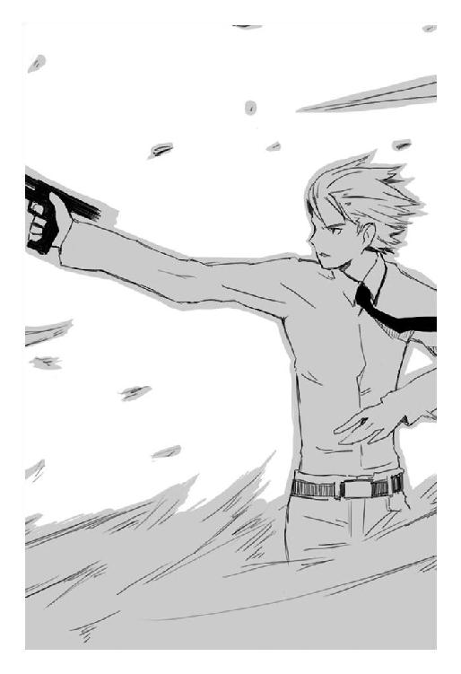
グリコの呼びかけと同時に、賢木が弾丸を撃ち尽くす。
迫る音速の弾丸は──慌てて霧化を試みる殺菌消毒の──。
「──」
魂が宿る心臓を、爆風の壁ごと撃ち抜いていた。
まだ温い。風を解放し──地面に落下する殺菌消毒に駆け寄って。
「死ね──殺菌消毒」
グリコは撃ち抜かれた彼女の胸元に手を突っこみ、容赦なくその心臓を抉りとった。血飛沫が舞い、最後に──殺菌消毒は断末魔の悲鳴をあげ。
「──あら？」
震える血まみれの両手を、信じられないという顔で眼前に持っていき。
「あら──嘘」
呻くので、グリコは低く囁いた。
「......最期の言葉がそれか。もう二度と喋れないんだ──もっとよく考えるがいい」
「──そうね」
静かな、何かを嘲笑うような声。
「私じゃ──完璧に、届かなかったか。そうね──私は──ずっと、あの白い部屋で、何かを無くそうと、ただ完璧な虚無だけを求めて」
実際、彼女は最期に笑っていた。
「あぁ──そうか、死ねば、全て消えるじゃない。完璧に。ふふ」
その言葉を最後に、宇佐川鈴音を殺し、偽原夫妻を操って、一つの病院を死の世界に変えた化け物──原始の昔、人類を滅ぼしかけた殺菌消毒という女は。
酷く呆気なく、事切れた。
「............勝った」
現実感のないその言葉を、眼球抉子は呆然とつぶやいた。
安堵すると同時に真紅の翼がしゅしゅると背中に潜り、変わり果てていた体躯も元通りになっていく。変わらないのは吹き飛んだ右腕と、全身を真っ赤に染める返り血だけ。
もちろん彼女を殺しても、世界は何も変わらずに、ただ残酷に普通の夜で──グリコは、儚くて、同じく放心した賢木を抱いて涙を流しつづけた。
悪は倒れたが、それでいったい誰が救われたというのだろう。
夜が更けていく。朝はまだ遠い。
血末の夜
無雲雨。十六歳。私立観音逆咲高等学校一年Ｂ組の生徒。大人しくて無口で、しかし取りたてて人見知りをするわけでもなく、いつも他人の話をにこにこと聞いているような少女。勉強も運動も人並みにできるが、さして目立つ要素もなく、空気のように教室を漂う彼女の存在はよく忘れられる。
そんな彼女の特徴は。
「くすくす」
と──さして面白くなくても、無理して笑うようなところ。
「くすくす」
不自然に笑いながら、雨は学校の友達と一緒に道を歩いている。五、六人の制服姿の集団──特に珍しいものではなく、とりたてて目立たないその集団の中でさらに存在感を消して、雨は友達の話すことをそれは愉しそうに聞いている。
「賢木先生がいなくなったって」
「宇佐川さんもでしょ？ うわぁなんだか駆け落ちっぽくない？ あの先生だから『ついにやっちまったか』って感じだけどさ」
「でも眼球も一緒だよ」
「あぁ眼球ね。誰か眼球と喋ったことある？ あたし怖くて近づけないんだけど」
「あ、あるある。別に普通だよ？ ちょっと変だったけど」
「そりゃ伝説の転校生ですから」
あはは、と大笑い。
賢木愚龍と宇佐川鈴音、そして眼球抉子が突然に消えてから、今日で三日ほどが経っていた。極めて真面目に出席してきた鈴音が無断欠席するわけもないし、それに賢木とグリコまで一緒というのが妙だった。教師たちも一様に戸惑っている。まぁ、学校の教師はみんな賢木の下僕みたいなものだから主がいなくちゃ混乱するだろうけど。
「くすくす」
雨は笑って、適当に喋っている友達に違和感ないよう発言する。
「病院」
単語のみ。誰が発言したのかも周りの友達は理解しなかっただろう、それでも、会話が大好きな彼女たちはその単語に誘発されて会話を始めてくれる。
「そうそう。なんか病院も酷いことになってるっぽいよねー」
「あー、入院患者全員が行方不明？ 詳しく知らないけど」
「うちの母ちゃんも消えました」
「......あ、ごめんナギー」
「いいっす」
「でもそれって賢木先生が消えたのと同時だよね。案外、賢木先生とかも病院にいてさ、そのなんかとてつもない誘拐犯に攫われちゃったんじゃない？ ほら怪しい噂があんじゃない」
「とてつもない誘拐犯ってあんた」
「頭悪そうで好きだわミクー」
「ありがとう、えーと、殴られたいのねー」
「ごめんなさい」
「馬鹿の馬鹿力で殴らないでプリーズ」
「怪しい噂」
ぽつりと、横道に逸れかけていた話題を修正する声。雨はにこにこと笑いながら乙女たちの会話に単語を紛れさせる。
一方的に馬鹿馬鹿と言われていた娘が我が意を得たりというように胸を張る。
「そうよ。失踪事件があってから病院ではね、超なんか怪しい噂が囁かれてるの。何か女のひとの呻き声をねー、近くを歩いてたら聞いたんだって誰だか知らないけど」
「おまえさんはそういう噂をどこから聞いてくるんだい」
「情報早いよねミク。それはともかくさ、そんだけ？ もっと詳しく知りたいんだけど」
「あれ？ ナギーそういう怪談とか好きだった？」
「ていうか、消えた母ちゃんの手がかりが見つかるかもしれないし」
「......ごめんナギー」
「いいっす」
「ていうか押しちゃいけないボタン押しすぎだカエ」
「まーとにかくさ、怪しい噂ってもそんだけだよ。場所は病院の──建物の裏あたりだったかな？ 病院は封鎖されてて入れなかったんだけど」
「行ったんかい」
「やっぱりミク馬鹿」
「だって気になるじゃん。とにかくさ、近ごろ何かやだよねー。手長鬼だの、今回の事件だの、あーやだやだ。......あれ？ 雨っちは？」
一人の少女が周囲を見回すも、すでにそこに無雲雨の姿はない。
「帰ったんじゃない？ 無雲さんの家ってどこか知らないけど」
「挨拶くらいしてけっての」
「まぁ雨ちゃんだから。そこにいるだけで癒してくれるっていうか」
「あたしらのマスコットキャラってか」
「マスコットは私！ 私私わーたー」
「黙れ馬鹿ミク」
病院の裏。それだけ判明すれば後は容易い。夜になるのを待たなくてもいい。周辺を固めている警察官はただの人間だし、中で作業をしている人間もほとんどが賢木財閥の関係者で、今回の事件の事後処理をしているだけだから、巻きこまれなかった建物の裏には誰もいないだろう。
裏側の山を適当に登って、さらにそこに生えていた最も高い木の頂点に登る。そこからは先日の戦いの舞台になった病院が見える。外で作業をしているのは六人ほどか──幸いなことに建物の裏には誰もいない。残りは建物の内部だろう。
建物の裏には誰もが通れる細い道があって、きっと怪しい女の声を聞いた人間もそこを通っていたのだろう。無雲雨はしばしどこから侵入するか思考して、人通りがあるならその道をつかうのは危険かと判断する。
別に目撃されて困るわけでもないが、なるべくならば穏便にいきたい。
「飛ぶか」
つぶやき、雨は迷いなく木のてっぺんから飛び降りた。瞬間、制服の裏地を突き破り、翼竜のような翼が生えてくる。遥か高みを滑空し──誰にも気づかれないまま、すとん、と病院の裏に着地した雨は翼を肉に収納する。
「飛ぶのは久しぶりだったけど、うん、うまくいった」
独り言をして、周囲を目線で探る。賢木財閥の人間も警察も馬鹿じゃないだろうからここも調べただろうが、通常視覚では何も怪しいものは見えない。ただ──声は聞こえる。本当に微かな、幻聴かとも思う声だが──。
あの事件から、賢木愚龍と宇佐川鈴音、眼球抉子の生存は確認した。
三人は宇佐川鈴音のアパートに、何やら荷物を運びこんでいた。
だとしたら──未だこの戦場と化していた病院に残り、苦悶の叫びをあげている者というのは。
通常のものとは違う、この世の外を知覚する化け物特有の視覚で確認すると。
まず血が見えた。大量の血だ。
それらは病院の壁に撒き散らされ、また地面に染みこんで暗い跡をつけている。
その中央。うつ伏せになり、苦痛に声を漏らしている女がいる。
「殺菌消毒」
声に、女は激しくこちらを向いた。
肌も純白の髪も泥や血で汚れていて、呼吸が苦しいのかマスクすら外し、胸の中央で出血し──ただ脂汗を浮かべているその女性の名前は殺菌消毒。
見えるの？ とでも問いたげにこちらを見る彼女に、雨はくすくすと笑った。
「心臓の、最も大きな欠片を撃ち抜かれてしまったんだね。受容器が壊れて、中身の魂が零れ落ちて──君はもう、実質、大きな欠片の力は使えない。くすくす。まぁ──その直前に宇佐川鈴音の魂を奪って、しかしそのとき心臓──受容器はもう満杯で、仕方なく違うところに受容器を構築、欠片を隠していたから命だけは助かった──ってところかな？ しかし急造の受容器では拒絶反応が酷いだろう？」
怒濤のように喋って、雨はにっこりと笑う。そんなところだろう？ とでも言いたげなその笑顔に、美名は不可解そうな顔をして歯を噛みしめる。
しばらくはここで身を隠し、身体の回復と受容器の順応を待とうという腹だったのだろう。しかし──。
それも今日で終わりだ。雨に見つかってしまった。
くすくす、と雨は笑う。
「誰よ──あなた」
殺菌消毒は振り絞るような声で言う。
雨は笑い、自分の顔に手を持っていく。
「わからないかな？ 衰えたね殺菌消毒──ノアの一件で力を使い果たしたって聞いてたけど、俺が誰かもわからない？ なんだ──そんな程度の存在なら、わざわざ警戒して眼球抉子をぶつけなくても良かったかなぁ。まぁいいか──思いだしな」
手を上から下に動かした雨の顔には、目も鼻も口も眉も、何も残ってはいなかった。殺菌消毒は硬直し、雨は口もないのに楽しく笑う。
「くすくす。そう──俺さ、俺は──誰でもない俺だよ」
「最弱──この裏切り者が......！」
目を血走らせて立ちあがり、ふらつきながら雨を睨みつける。その身体はすでに戦えるものではない。それは誰より殺菌消毒がよく理解しているはず。
それでも、彼女には、最弱を殺さなくてはならない理由がある。
「俺は、君の《消滅霧》と一人部屋にだけは弱い。それだけが俺の弱点。だから──俺はね、君たちを殺して無敵になる。本当に混じりっけのない、最強の盾にね」
両手を広げ、雨は心から幸せそうに語る。
「それから、俺はこの世界を支配する。こうして生まれたんだからね──、一番を目指さないのは愚かというものだ。なぁ兄弟。愚かな消化器官よ──俺のために死んでくれないか？ そんなに苦しいんだったら、自分自身を溶かして死ねよ。どうせ──完全体に戻ることなんて永久にできはしない。徒労だよ──そんな命、保っていても意味がないだろう？」
「戯言を──」
拳を握りしめ、すでにスプレー缶も形成できないのか、ただ緩慢な動きでこちらに手を伸ばす殺菌消毒。
残念だな──と笑い、最弱は広げた両手を。
巨大な鎌の形に変えて。
「君も残念だろう？ ここで死ねば、君は──俺の創る素晴らしい新世界を見ることができないんだから」
「神を気取るな──この不細工が！」
その単語。
昔──、自分を嘲るために彼女が何度となく口にしていた言葉。
雨はくすくすと笑って、両手の鎌を彼女に薙ぐ。
「────」
あっさりと。
殺原美名の生首が飛んだ。
賢木が鈴音の家で暮らすことを決めたというので、その業者に頼まないひっそりとした引っ越しを夜になるまで手伝って、草木も眠る丑三つ時、グリコは音をたてないよう気をつけて鈴音の部屋から外にでた。
荷物はない。
目的地もない。
ただ──ここにはいられないと思った。
それは、殺菌消毒と戦う前、狼の目をした男につきつけられた選択肢。人間として生きていくか。化け物として生きていくか。そして人間として生きていこうとして──得たものはただ痛みをともなう喪失ばかり。
もういい。
もういいのだ──とグリコは思う。
「鈴音の身体は賢木が守ってくれる。グリコは──ここに必要ない」
夜にも混ざらぬ独特のオオカミヘアをなびかせて、隻腕の少女は黒衣をまとってアパートを振り返る。ほぼふた月、このアパートで暮らした。鈴音とともに。その生活には笑顔があり幸福があり、千年前に忘れてきたはずの全てのものがあって──。
眩しくて。愛しくて。好きだった。
だから鈴音。
彼女には恩を返さなくてはならない。
たとえこの身が砕けようとも。
未練を振りきって、グリコは俯くとアパートに背を向ける。殺菌消毒の霧をもろに喰らった右腕は林檎の力でも再生しないようだ。長年──それは気が狂うほどの長い年月を、二本の腕で生きてきたから、残りの一本では上手にバランスがとれない。
それは鈴音と賢木も同じ。鈴音が欠けてしまった今、もしもここに残ったとして、グリコはまともに動くこともできなくなりそうだった。
それならば独りのほうがいい。誰にも迷惑をかけず、闇から闇へと生きていこう。
「──化け物に戻るのか」
正面。凸凹道を見つめていたグリコの後頭部に冷たい感触。銃口か──。直感し、グリコは振り返らずに無言で首肯する。
「ならば──私は、同族の安全のために、化け物が野に放たれる前に殺さなければならない」
声には殺気。きっと、この拳銃には実弾が。
後ろに立つのは賢木愚龍。ならばいい──とグリコは薄笑う。
「撃ちたいなら撃て。殺したいなら殺すがいい。賢木、それはむしろ、グリコの望んでいることだ」
俯いて、残った隻腕で胸を抱きしめる。
「たくさん殺してきたよ。たくさん奪ってきたよ。グリコの身体一つでは──ちっぽけな命一つでは、償えないほど大量に。その負荷から解き放ってくれるというのか？ おまえはそれほど優しい男だったのか？」
問いかけに答えはない。
語る言葉もすでにない。
だからグリコは瞑目し──どうでもいいことを口にする。
「気配を消すのがうまくなったな。最初に会ったときとは見違えた。努力していたんだろう？ おまえは、いつもきっとそうだったんだろう。天才なんかじゃなくて、選ばれし遺伝子もなくて、ただ死ぬほど努力をくりかえし、今の力を得ているんだろう。おまえは──きっと、もっと強くなる。グリコよりもずっとずっと」
「私は──」
初めて、言葉に返答があった。
悲痛な声。いつも超然としていた彼には珍しい、弱々しい声。
「──弱い」
「うん。おまえは弱い。きっと強くなるけど、まだ弱い。グリコも弱い。だから鈴音を守れなかった」
グリコは自然に振り返る。銃口は動かず、グリコの額にぴったりと押し当てられる。夜空では星が舞い、正面の賢木は曖昧な陰影で、周囲からは穏やかな虫の声が聞こえてくる。
グリコはただ真っ直ぐに賢木の瞳を見つめていた。
「だから賢木、強くなれ。鈴音のことを守ってくれ」
服の懐に手を伸ばし、グリコは綺麗なスプーンを見せる。それは火乃と樹夫に買ってもらった、かなり高値の稀少なスプーン。装飾を施されたその食器はただ夜気を反射して鈍く暗い。
「火乃と樹夫は──」
それを見つめながら、ただグリコは囁きつづける。
「──確かに、殺菌消毒の肉人形だったかもしれないけど。本当の人格なんか全て奪われていたかもしれないけど。グリコのことを殺さなかった。グリコをあのとき助けてくれた。それに──樹夫も火乃も、最期は人間に戻っていた。きっと──肉人形という存在には、まだ秘密がある。鈴音は元に戻れるかもしれない。グリコたちが大好きだった鈴音に」
雲に隠されていた月光が現れ、賢木の表情が浮かびあがる。そこには弱い雰囲気など欠片もなく、ただ凛々しく尖っている。
「グリコは、それを探しにいく」
スプーンを握りしめ、グリコは賢木の顔を見つめて言った。
「賢木──病院で、グリコに言ってくれたよな？ 全てを諦めかけていたグリコに、希望を与えてくれたよな？ そうだ。鈴音は元に戻るかもしれない。鈴音は──まだ死んでいない。だから賢木、鈴音を守っていてくれ。いつになるかわからないけど、きっとあいつを元通りにする方法を見つけて戻ってくる」
そして鈴音を元に戻して。
手長鬼や殺菌消毒に破壊された自分たちの日常を復元して。
「それから──また三人で学校へいこう」
それがグリコの決断だった。最初は、ただ逃げたかっただけだった。苦しいだけのこの人間の世界から。けれど──今は違う。殺菌消毒との戦いで、賢木が自分を抱きしめてくれた。あのとき──思ったのだ。離れたくないと思ったのだ。
だから、グリコはあの幸せな日々を取り返すために旅に出る。完全に化け物へ戻るわけではない。ただ一人、鈴音が元に戻れる方法を探しにいくだけだ。
それはきっと、ここで鈴音を守りながら暮らしていてはできないこと。外の世界──あるいはもっと深い闇の世界、蟲や化け物がうろつく世界で、ようやく見つけられること。
鈴音と出会う以前、そこがグリコの世界だった。
元に戻るだけだ。ふた月前に。そしてまた、きっといつか、鈴音と賢木に出会うのだ。
きい、と扉が開いた。
そこに鈴音が立っている。肉人形になってしまった鈴音。意志を灯さぬその瞳が、グリコに銃を突きつけて立つ賢木にすう──と向けられる。
途端、彼女は慌てたように、本当に──以前の鈴音そのままに、血相を変えて走ってくると、賢木の正面、グリコの身体を守るように銃口の前に立った。銃を手でどかし、自分の額に向けさせて。
「けんか」
あどけない、幼児のような声。
「だめー」
その様子に。なんだか酷く真面目な顔で言う彼女の表情に。
同時に気が抜けて、賢木もグリコも表情を和らげた。
「......すまない。あぁ閣下、安心してくれ。喧嘩をしていたわけじゃない」
「そうだ。この男が勝手にグリコへ銃口を向けてきただけだ。これは喧嘩ではなく、一方的な攻撃なんだ」
「だめー、せんせ」
真に受けて、鈴音は賢木を厳しい表情で睨みつける。腰に腕を当てて、胸を張った仕草。それはいつだったか、グリコと賢木が喧嘩したときに見せていた表情。そうだ。それならばきっと──。
「なかよくしなきゃ、だめ」
──ちょっと怒ったような顔のあと、困った感じに眉尻を下げる、いつもの優しい顔になるのだろう。
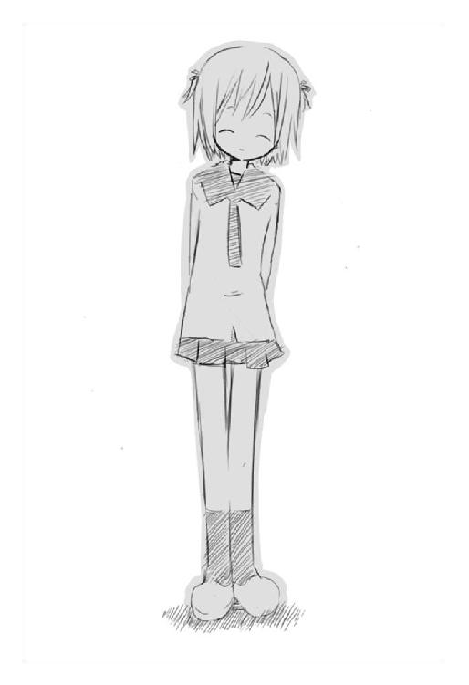
それを見て、賢木が不意に涙を零す。端正な彼の頬に一筋の涙が流れている。
グリコはそれを大げさに笑ってやる。
「はは。馬鹿か賢木。その歳になって泣くとは情けない」
「何を。......あれ？ どうして私は泣いているのだ？ それに──グリコ」
こちらを不思議そうに見て、賢木は低く問いかけてきた。
「どうして貴様も泣いている？」
「......む？」
頬に手を当てる。そこに熱い液体がある。涙。これは──涙。どうして。思いながらも、自覚したらもう止まらずに──。
グリコは泣きじゃくった。情けなく大きな痛哭をあげて。賢木も静かだが涙が止まらないようで、やはり不思議そうな顔のまましきりに首を傾げている。
日本の少し田舎のほうに、観音逆咲という町がある。そこに宇佐川鈴音という女の子がいた。その女の子は特別に何か秀でていたわけではない。どこにでもいる、ただちょっと料理がうまいだけの普通の女の子だった。
けれど彼女は完璧に固定されていた賢木の人生を変えて。
千年間も闇に蝕まれていた一人の化け物を救ってくれた。
肉人形になっても、きっと鈴音は変わらずに、ただ賢木とグリコが喧嘩するのが哀しいという顔で。彼らが涙を零すのが嫌だという顔で。
そっと二人を抱き寄せた。弱々しいその力は以前の鈴音よりも儚く、けれど賢木もグリコも抵抗できずに彼女の華奢な身体に吸い寄せられる。
「だいじょうぶ」
鈴音は、小さな声でつぶやいている。
「だいじょうぶ。だいじょうぶ」
そう言う彼女も泣いていた。ただ三人は泣きつづけた。お互いの体温を感じながら、酷く冷たい夜の下──。
巨大財閥の跡取り息子として決められた人生を歩いている男がいた。
どこにも居場所を見つけられず、海に身を投げた少女がいた。
眼球を抉り闇から闇へ、化け物として生きていた少女がいた。
三人が出会ったのは──きっと、ただの偶然で、神様が砕け散ったこの世界に、すでに奇跡は存在しないのかもしれないけど。
賢木は鈴音を守りつづけると誓った。
グリコは鈴音を元に戻す方法を探しにいく。
そしてきっと──鈴音は、そんな二人をこうして抱きしめてくれている。
だから大丈夫。鈴音が言うとおり。何の根拠もないけれど、大丈夫なのだろうとグリコは思った。
夜はもう終わりなので──早く悪夢を醒まさなくてはならない。
暗い暗い絶望のあとには、幸せな希望が待っているはずだから。
蟲と眼球と殺菌消毒 完
完
こんばんは。日日日です。
本作は第一回ＭＦ文庫Ｊライトノベル新人賞編集長特別賞受賞、『蟲と眼球とテディベア』の続編にして日日日の十冊目の本になります。
他社から出版させていただいている二つのシリーズと違い、『蟲と眼球とテディベア』は続刊を書くことを全く考えていませんでした。うん、ちゃんと一冊でまとまったと自己満足に酔っていたら、担当さんに「は？ 何をほざいているのでございますか日日日くん、何一つとして解決させないで終わってるじゃないですか」と当たり前の顔で言われました。
はて。
そう言われてあらためて読みかえしてみれば、出るわ出るわ、伏線が。
はい。第一巻のあちこちに伏線らしきものが散在しているのです。もちろん僕は一巻で完結していると思っていたので続きなんか考えてません。じっくり、その伏線らしきものを拾って集めて考えて。
「ふはは！ 読めた！ 日日日、このシリーズの展開が読めたぞ！」
「いや日日日くん傍から見るとかなり阿呆だからね」
「担当さん......」
「はいはい」
「第二巻を書かせてくださいー......」
そうしてこの『蟲と眼球と殺菌消毒』が生まれました。つくづく日日日の思うとおりにいかない物語でございます。
このお話がどういうカタチで決着するのか、そういう意味では僕も全くわかりません。けれど、きっと、何か得体の知れない変なものになってくれるんじゃないかなって。
あぁ楽しみ。
では謝辞を。
どんなにグロテスクな表現をしても止める気配がないので「これならどうだ！」とさらに日日日を残虐描写にかりたてる担当の金田一さん。共犯ですよ！ そんなタチの悪いコンビの一番の被害者、絵師の三月まうすさん。あなたのおかげでこのシリーズはかろうじてＭＦ文庫Ｊから放逐されていません！ 大感謝です！ そしてここまで読んでくださった読者の皆さん！ 次はもうちょい救いのある話になりますから！ 見捨てないで！ あぁもうページがない、とにかく、皆さんありがとうございました！
日日日。
著者
日日日（あきら）
第１回ＭＦ文庫Ｊライトノベル新人賞、編集長特別賞受賞。
１９８６年生まれ。
２００４年から２００５年にかけ合計五社の新人賞を受賞してデビュー。
既刊に『ちーちゃんは悠久の向こう』、『うそつき』（新風舎文庫）、『アンダカの怪造学』シリーズ（角川スニーカー文庫）、『狂乱家族日記』シリーズ（ファミ通文庫）がある。
イラスト
三月まうす（みつき・まうす）
新鋭イラストレーター＆漫画家。
雑誌「Ｅ☆２（えつ）」（飛鳥新社）で漫画『モモロコ×ハイ』（原作‥原田經史）連載中。
ホームページ「でいじーかったー」
蟲と眼球と殺菌消毒
著者名......日日日
発行者......三坂泰二
発行所......株式会社メディアファクトリー
http://www.mediafactory.co.jp/
２００５年12月31日 電子書籍版 ver.1.0.0
無断で複製・複写・放送・データ配信などをすることは、かたくお断りいたします。
©2005 AKIRA